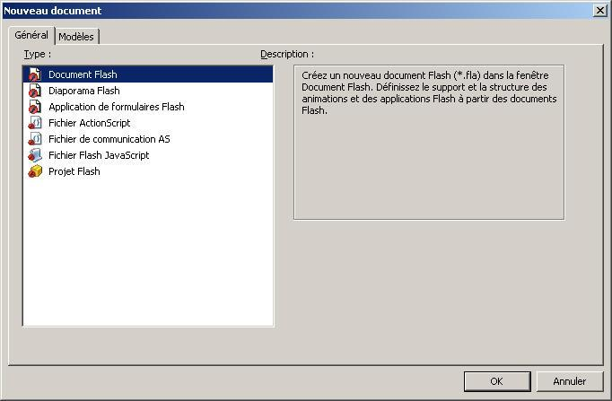
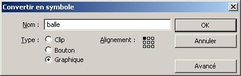
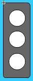

Depuis plusieurs années, vous pouvez voir fleurir sur les sites de la galaxie Web des petites animations colorées et interactives. Que ce soit des petits jeux, des radios, ou encore simplement de la publicité : Flash est maintenant omniprésent !
Dans Flash, on trouve deux parties distinctes : le graphisme et le scripting. Ce que ce tuto vous propose de faire c'est d'apprendre l'ActionScript, c'est-à-dire toute la partie dynamique d'une animation Flash !
Je vous souhaite bonne chance, et j'espère que vous prendrez autant de plaisir dans la lecture de ce tutoriel que moi pour l'écrire ;) .
Nous allons dans ce chapitre apprendre à déjouer les pièges de Flash. Ces pièges qui entraînent de nombreux webmestres avides de rendre leur site flashy à leur perte !
Oui, car l'utilisation de Flash dans un site est souvent chaotique et mal organisée. C'est pour cela que de nombreuses personnes considèrent Flash comme l'arme du Malin ^^ . Alors qu'en fait, si Flash commence à avoir une si mauvaise réputation c'est seulement parce qu'il est mal utilisé :) .
On va donc déjà voir les arguments des uns et des autres. Puis nous essayerons de tirer la première conclusion de ce tutoriel : pourquoi certains sites en Flash sombrent dans les abîmes du Web alors que d'autres atteignent des sommets ?
Tout d'abord il me paraît impératif de resituer Flash pour pouvoir bien comprendre comment fonctionne ActionScript.
Le Flash est un format de fichier d'extension swf (=schockwave Flash) pouvant contenir de la vidéo, des images vectorielles ou bitmaps, du son, et encore du code pour l'interaction avec l'utilisateur. Depuis sa version 4, les spécifications SWF ont été rendues publiques, ce qui a conduit à la création de programmes comme Swish, ou des modules pour Eclipse permettant de créer une animation flash simple ou gratuite (impossible d'avoir les deux à la fois :D ). Mais l'outil le plus puissant (et le plus cher ! ) pour créer du Flash reste Macromedia Flash, et surtout sa dernière version 8 que nous utiliserons au cours de ce tutoriel !
SWF est un format de fichier binaire. On définit un fichier binaire comme ce qui n'est pas un fichier texte ;) . L'intérêt du binaire par rapport au texte, c'est qu'il prend beaucoup moins de place, et c'est justement le grand avantage des animations Flash : leur compacité. Le problème, c'est qu'un fichier SWF une fois compilé ne peut plus être modifié (du moins pas directement) ! C'est pourquoi vous enregistrez votre projet Flash au format FLA, binaire lui aussi et dépendant de votre version de Macromedia Flash, qui contient la source de votre animation que vous pouvez modifier.
Le langage de script de Flash est l'ActionScript, un dérivé de l'ECMAscript (= nom standardisé du javascript). Les connaisseurs retrouveront donc certains éléments, mais je vous garantis que la non-connaissance du Javascript n'est en aucun cas un frein à l'apprentissage de l'ActionScript ! Par contre vous devriez être capable de faire du Javascript une fois que vous connaîtrez l'AS ;) .
Le plugin est lourd et consomme des ressources système (processeur, mémoire vive ...)
Tout le monde ne possède pas la dernière version du plugin (des fois non disponibles pour les linuxiens)
Flash a tendance à être trop utilisé dans la publicité
Flash n'autorise pas le référencement du contenu qu'il produit ou affiche
Manque d'accessibilité (un aveugle aura du mal à lire en braille une animation Flash)
Pour toutes ces raisons, importantes dès qu'on rentre dans le cadre d'une application web (= ensemble des pages web, scripts, bases de données, contenus...) professionnelle ou semi-professionnelle, il faut savoir utiliser la technologie Flash avec parcimonie !
L'affichage de contenu sous forme graphique (si impossibilité de générer une image avec PHP ou autre technologie côté serveur)
La recherche dynamique (possibilité d'éviter l'utilisation de Flash si on maîtrise certains outils Javascript le permettant comme le xmlhttprequest utilisé entre autres sur ce site)
Et puis surtout Flash, comme son nom l'indique, attire l'oeil ! Si votre site comporte un petit jeu en accord avec le thème général ou des petits éléments rigolos, ça ne pourra être que du bon :D .
Comme vous pouvez le constater, Flash est en fin de compte une technologie à double tranchant. Pour résumer on peut énoncer 2 lois :
Flash ne doit pas être utilisé à outrance dans un site de type communautaire et sujet à de nombreuses évolutions
Flash est très adapté aux sites vitrines ou comme contenu semi-dynamique (affichage de graphiques, musiques, vidéos ...)
Voilà, j'espère que je ne vous ai pas trop démoralisé pour un premier chapitre, mais il me paraissait indispensable de vous donner tous les éléments avant de commencer la programmation :) .
Nous avons pu voir les 2 lois à ne pas enfreindre pour réaliser un site Web potable utilisant Flash. Nous allons maintenant voir que chaque loi conduit à un type possible d'architecture.
Ce sont les deux principales architectures utilisées impliquant Flash.
Vous vous demandez sûrement ce qui se cache sous ce nom pompeux que je viens d'inventer pour le besoin :p . Et bien en fait, il s'agit de l'architecture dans laquelle Flash est au centre du site web. Voici donc l'architecture à ne surtout pas reproduire si on souhaite créer un site communautaire selon la première loi : Flash ne doit pas être utilisé à outrance dans un site de type communautaire et sujet à de nombreuses évolutions. Et selon la seconde loi : Flash est très adapté aux sites vitrines ou comme contenu semi-dynamique. Cette architecture est très intéressante dans le cas d'un site galerie/vitrine/portfolio
Flash est au centre de l'application Web. L'utilisateur ne navigue pas à travers différentes pages web mais dans un seul objet Flash, qui affichera le contenu en fonction des requêtes de l'utilisateur. Pour aller chercher des données, flash à travers son langage de script, l'ActionScript que nous verrons plus loin dans ce tuto, peut charger des pages et en récolter le contenu. Flash est donc capable d'aller formuler une requête à un script côté serveur, de type PHP, et d'afficher les données formatées (que nous appellerons des informations, terminologiquement les informations ce sont les données une fois triées et formatées).
Une toute autre approche dans l'utilisation de Flash n'est plus son utilisation comme fournisseur de contenu, mais comme contenu lui même. Bien entendu, l'utilisation en sera complètement différente. En fait, si on suit les deux lois, cette architecture est à privilégier dans le cas d'un site fournisseur de contenu riche, ou communautaire.
Cette fois les animations Flash sont considérées non pas comme l'unique moyen d'afficher les informations, mais plutôt comme des images. On peut voir sur le schéma qu'il existe alors 2 principaux moyens pour transmettre une donnée à l'animation qui devra l'afficher. Soit comme précédemment l'animation va chercher toute seule les données et les met en forme, soit dans le code xhtml de la page on complète le lien vers l'animation par la transmission de une ou plusieurs variables au format GET ( mavar1=salut&mavar2=comment+ca+va ). Mais rien n'empêche de combiner les deux pour indiquer à l'animation son rôle dans la page et la laisser ensuite chercher elle même ce qu'il manque ! :D
Voilà j'espère que vous avez pu choisir quelle architecture était la plus adaptée pour votre site Web.
En résumé pour les feignants, voici la conclusion du second tutoriel : Flash en tant que site web complet dans le cadre d'un site vitrine/galerie. Flash en tant que "images" incluses dans le site web.
Flash en tant que site web complet dans le cadre d'un site vitrine/galerie.
Flash en tant que "images" incluses dans le site web.
IDE (= Integrated Development Environment) est une abréviation caractérisant les logiciels qui facilitent le développement d'applications sur ordinateur. Dans ce chapitre, nous nous intéresserons au plus connu des IDEs pour le Flash : il s'agit d'Adobe Flash 8 (plus connu sous le nom de Macromedia Flash 8, mais Macromedia s'est fait racheter il y a quelques temps maintenant par Adobe).
Pour que vous puissiez convenablement suivre ce tutoriel, on va essayer de se mettre d'accord sur la disposition des différentes fenêtres de Flash.
Utilisez le menu Fenêtre dans la barre des menus du haut, pour disposer les fenêtres de la façon suivante :
En plein milieu, le gros carré blanc, représente la Scène. C'est ce que verra l'utilisateur de votre animation, et c'est là que nous dessinerons et jouerons avec des formes.
On remarquera le panneau Actions tout en haut, dans lequel nous écrirons le code ActionScript. Juste en dessous se trouve le Scénario (souvent appelé timeline en anglais). Il permet de naviguer dans le temps et dans les calques, nous reviendrons dessus plus loin.
Tout en bas, deux panneaux très importants : - L'aide de Flash, qui est extrêmement claire et détaillée. Quand je vous présente une nouvelle fonction ou une nouvelle classe, n'hésitez pas à aller voir ce qu'en dit l'aide qui apportera un complément d'informations ainsi que des exemples pratiques. - Les propriétés, qui permettent de modifier justement les "propriétés" des objets que l'on peut manipuler dans Flash.
A gauche vous trouvez comme d'habitude la classique barre d'outils, très similaire à celle de logiciels comme photoshop, par exemple.
Et enfin à droite encore d'autres fenêtres. Celle qui nous intéresse étant la Bibliothèque.
Ainsi se termine le petit tour d'horizon des différentes fenêtres de Flash.
Maintenant, mettez votre casquette, Spielberg n'a qu'à bien se tenir ! :p Nous allons attaquer le scénario ! Le gros bloc plein de carrés noirs et blancs en haut.
Nous avons vu que la scène permettait de dessiner en deux dimensions : largeur et hauteur.
Le scénario rajoute deux dimensions :
La profondeur
Le temps
La profondeur
La profondeur se gère à l'aide des Calques, à gauche dans le scénario. Vous pouvez en créer autant que vous le souhaitez, mais vous devrez toujours en garder un au minimum.
En fait, leur utilisation est toute simple : vous pouvez dessiner sur chacun, mais les formes(=les dessins) de chaque calque sont indépendantes entre elles. Elles ne peuvent donc pas "s'écraser" mutuellement. Essayez donc de dessiner un carré plein dans un calque et un disque dans un autre et superposez les deux formes. Elles se chevauchent sans problème et ne s'effacent pas comme elles l'auraient fait si elles avaient été sur un seul calque.
Vous remarquerez aussi que la forme qui est dans le calque du dessus, est aussi au dessus dans la scène. L'ordre dans lequel vous rangez vos calques permet donc de gérer la profondeur de vos formes les unes par rapport aux autres.
Si vous mettez un calque au dessus de tous les autres, alors les dessins placés sur ce calque seront au dessus de tous les autres dans la scène.
Le temps
Chaque petite case que vous voyez est une image, que nous appellerons quelques fois frame ("trame" en anglais) pour éviter les confusions. Le curseur rouge contrôlable à la souris permet de se déplacer dans le scénario : c'est à dire dans le temps. Il existe plusieurs types de frames.
Dans l'image ci-dessus, vous pouvez voir en position 1 ce qu'on appelle une image-clé pleine. Je sais qu'elle est clée parce qu'elle a un petit point noir et qu'elle est pleine parce qu'elle est grisée. Je suppose que vous avez compris que pleine signifie que dans cette frame on a dessiné quelque chose. Cette image-clé continue jusqu'en position 16, le carré blanc en indiquant la fin. Toutes les images entre le point noir et le carré blanc sont donc les mêmes.
Quel type d'image avons-nous en position 32 ?
Une image-clé vide ! Qui se termine en position 40.
Il faut bien comprendre que chaque image correspond à la scène à un instant donné.
On va prendre l'exemple d'un petit dessin-animé avec un bonhomme en fil de fer : Mettez vous à la position 1 (avec une image-clé vide) et dessinez un personnage à tête jaune. Créez une nouvelle image-clé en position 6 et changez la couleur de la tête du personnage pour du rouge. Ajoutez une image simple à la position 10 pour que le personnage rouge reste quelques instants et ne s'en aille pas tout de suite à cause de la lecture en boucle de l'animation.
Si vous exécutez l'animation (Contrôle->Tester l'animation), vous verrez que chaque personnage reste affiché le temps de 5 frames.
Si vous avez un peu de mal au début, vous pouvez vous aider du mode Aperçu du scénario. Il faut cliquer sur le petit bouton en haut à droite du scénario comme ci-dessous et sélectionner Aperçu. Vous devriez obtenir un scénario semblable à celui ci :
Ce mode est pratique pour débuter, mais pas vraiment pour travailler ;) .
J'en profite pour vous parler des ips (images par secondes) ou encore en anglais : fps (frames per seconds). Sur la photo ci-dessus, on peut lire en bas : 12.0 ips. Cela signifie, que durant 1 seconde, Flash lira 12 images. En clair une frame durera 1/12 = 0.083 seconde !
On estime la durée de la persistance rétinienne à 50ms, ce qui donne 40 images par secondes pour avoir une fluidité quasi-optimale. Personnellement j'utilise souvent 24 ips dans mes animations, c'est d'ailleurs la fréquence utilisée à la télévision. Pour modifier cette valeur dans votre animation, il vous suffit de double-cliquer dessus.
Je passerai rapidement dessus, car je pense que vous savez déjà dessiner ;) . La particularité des formes dans Flash, c'est qu'elles sont vectorielles.
Les images Bitmaps
Prenons un exemple : ouvrez paint, dessinez une droite, puis zoomez à fond dessus !
Vous remarquez que la droite est "crénelée", ou "pixelisée" : on peut distinguer chaque pixel aisément. C'est ce qu'on appelle une image bitmap, qu'on peut traduire par "carte de bit" en français. C'est vrai que ce n'est pas beaucoup plus parlant ;) . En fait, il faut se représenter l'image comme une grille, où chaque case possède des coordonnées. Ensuite dans votre image Bitmap, à chaque case, c'est à dire à chaque pixel, on associe une couleur.
Donc en clair, plus on zoom, plus c'est moche :p
Les images vectorielles
On peut bien sûr importer des images Bitmaps dans Flash, mais non seulement c'est moche quand on zoom dessus, mais en plus ça prend beaucoup de place, car il faut stocker la couleur de chaque pixel de l'image ! A la base, les animations Flash sont censées être très légères, car elles sont faites pour le Web, et tout le monde ne possède pas du 100Mbit/s comme connexion internet :D . En Flash on dessine donc avec des vecteurs. Vous pouvez dessiner une droite dans Flash, et vous verrez que même en zoomant à fond, elle reste lisse !
Dans une image vectorielle on ne stocke donc pas la couleur de chaque pixel, mais seulement les coordonnées d'un vecteur et de son origine. Si vous regardez le schéma à côté, le vecteur est représenté par la flèche orange. Son origine correspond au point A. On a juste besoin d'enregistrer la position du point A et les coordonnées (la longueur et l'orientation si vous préférez) du vecteur. Ensuite, le lecteur Flash interprétera les données et dessinera une droite partant de A et suivant le vecteur.
Le principe reste le même si vous dessinez des courbes ou des formes complexes, les vecteurs permettent alors d'indiquer en plus la "courbure" d'une droite.
A vous de jouer
Maintenant que vous savez ce qu'est une image vectorielle, je vais vous laisser jouer avec les pinceaux et stylos de la barre d'outils. Ils se manipulent presque comme ceux de Paint ou de Photoshop, mais vous devez garder à l'esprit qu'ils fonctionnent avec des vecteurs, vous ne pourrez donc pas faire de Pixel-Art dans Flash :D .
Les symboles
Tout ce qui n'est pas une forme est nécessairement un symbole. Première particularité des symboles : ils sont tous listés dans la bibliothèque.
Prenons un exemple. Dessinez un carré rouge sur la scène avec l'outil rectangle, sélectionnez votre joli carré et cliquez dans les menus sur Modification -> Convertir en Symbole.
Vous pouvez donner un nom à votre symbole. Ce nom permettra de le retrouver dans la bibliothèque, on l'appellera donc nom de bibliothèque. La fenêtre vous demande aussi l'alignement de la forme sélectionnée dans le symbole. Soit vous centrez le symbole avec la forme, soit vous mettez la forme dans un des coins du symbole. A vous de choisir pour l'instant.
Comme vous pouvez le voir, il existe 3 types de symboles. Nous allons les détailler plus bas. Pour l'instant votre nouveau symbole apparaît dans la bibliothèque. Ce qu'il y a sur votre scène n'est donc plus une forme, mais un symbole, vous ne pouvez donc plus le modifier directement avec les outils. En fait la forme est maintenant contenue dans le symbole. Pour la modifier, il faut rentrer dans le symbole. Vous pouvez pour cela double-cliquer soit sur l'occurrence du symbole dans la scène soit sur son nom dans la bibliothèque.
Maintenant, glissez-déplacez plusieurs fois le symbole de la bibliothèque vers la scène. Vous remarquez qu'on peut en mettre autant qu'on veut ! En fait, le symbole dans la bibliothèque est le "modèle" et tous ceux sur la scène sont des occurrences de ce modèle. D'ailleurs si vous modifiez un seul de ces symboles, la modification se répercute sur tous les autres !
Il est possible de placer un symbole dans un autre, puis dans un autre, puis dans un autre etc..., à l'infini ! Par contre, n'essayez pas de placer un symbole dans lui même : ça ne fonctionnera pas !
Voyons maintenant les différences entre les différents symboles :
Le graphique
Le graphique est le symbole le plus simple ! Il permet de convertir une forme en symbole et de le réutiliser le nombre de fois voulu sur la scène. Un graphique n'apporte aucune interactivité et doit donc être utilisé décorativement seulement. Les graphiques peuvent aussi être animés, il faudra alors préciser s'ils doivent l'être en boucle ou pas dans les propriétés de l'occurrence. (Vous sélectionnez l'occurrence sur la scène et vous pouvez modifier ses propriétés dans le panneau justement nommé Propriétés).
Le bouton
Les boutons permettent de rajouter un peu d'interactivité dans votre animation, en permettant à l'utilisateur de cliquer dessus. On peut ensuite lier le bouton à un Script.
Vous pouvez remarquer que le scénario d'un bouton est différent de celui de la scène ou d'un graphique. On ne peut y mettre que 4 images, qui correspondent aux 3 états du bouton plus sa zone de réactivité.
Le premier état Haut correspond à l'aspect du bouton quand on n'y touche pas. Dessus correspond à la forme du bouton quand on passe la souris dessus, et Abaissé c'est tout bêtement quand on clique dessus. Vous pouvez ainsi créer 3 images-clés pour chaque état et constater par vous même.
La dernière image : cliqué, ne sera jamais visible par l'utilisateur, elle permet de spécifier la zone cliquable. Ainsi, si vous n'avez que du texte dans votre bouton, pour cliquer dessus, il faudra viser une lettre précisément, pas à côté ! Alors que si vous rajoutez un rectangle qui encadre le texte dans l'image-clé Cliqué, alors il suffira de passer la souris sur ce rectangle (invisible dans l'animation) pour que le bouton s'active !
Les boutons ne peuvent pas être directement "animés" (avec une seule image, ça va être dur). Mais rien ne vous empêche de créer un graphique animé, et de le placer dans un des états du bouton :) .
Les Clips
Aussi appelés quelquefois MovieClip, il sont la crème des symboles ! (c'est pour ça que je les garde pour la fin). Il est en tout point commun avec la scène (d'ailleurs, la scène est un clip par convention...) et c'est celui qu'on utilise le plus. Si on le souhaite, il peut se comporter comme un bouton, on peut aussi lui adjoindre du code, et en plus il peut être animé !
Bref, le symbole à tout faire. Pour l'instant je n'en dit pas plus, vous le découvrirez vous même plus tard.
Vous connaissez maintenant les bases du maniement de Flash. Maintenant, essayez de vous débrouiller tout seul et surtout : expérimentez ! Touchez à tous les boutons, et si vous ne comprenez pas l'utilité de l'un d'eux, allez voir dans l'aide de Flash !
Pareil pour le dessin, je ne vais pas vous montrer comment manier ces outils. C'est à vous de les essayer et de comprendre leur maniement.
On appelle la scène principale de votre application, le carré blanc au centre de l'écran quand vous créez un nouveau document. Retenez que son nom est _root.
Il faut considérer les clips comme les "briques" d'une animation Flash. Les clips sont des petites animations à part entière, dans la mesure où ils ont leur propre scénario indépendant du scénario de la scène principale.
Il est possible de créer des clips sur la scène (Insertion->Nouveau symbole ou Modification->Convertir en symbole). Les clips présents sur scène sont des symboles auxquels on peut donner un nom d'occurrence.
Chaque clip peut lui même comprendre d'autres clips, qui peuvent eux aussi avoir des clips, qui peuvent... Enfin bref, vous m'avez compris. :D On peut imbriquer des clips les uns dans les autres !
Voyons maintenant comment se place le code par rapport aux clips, il est possible de placer de l'ActionScript :
Sur le clip (on sélectionne le clip, et on va dans l'onglet "action") ;
Dans un clip (on rentre dans le clip en double-cliquant dessus, on sélectionne une image du scénario, et on code dans l'onglet "action").
Par convention, _root (la scène principale) est un clip, on peut donc lui assigner du code en sélectionnant une image clé dans le scénario et en codant dans l'onglet action (et c'est ce qu'on fera ;) ).
Et le cauchemar ne s'arrête pas là ! Car si on peut mettre du code sur une image clé d'un clip, ça veut dire qu'on peut mettre du code différent sur chaque image clé dans un même clip... :D
Nous allons brièvement voir comment créer un clip.
Dans la barre des menus, cliquez sur "Nouveau Symbole" ou alors utilisez le raccourci Ctrl+F8 :
Une boîte de dialogue apparaît pour vous demander le nom que vous souhaitez donner au nouveau clip. Le nom qu'on donne là n'a pas d'influence en ActionScript, ce nom n'est là que pour "décorer", c'est à dire vous faciliter la vie pour retrouver ce clip qui va s'ajouter dans la bibliothèque. Au cours de ce big-tuto, on appellera ce nom nom de bibliothèque. La plupart du temps, ça sera à vous de choisir ce nom, dans la mesure où il n'a pas d'utilité en ActionScript.
Maintenant toujours dans cette même boîte de dialogue, si vous cliquez sur avancé, vous obtiendrez de nouvelles options, dont une qui nous intéressera plus particulièrement par la suite : le nom de liaison. Pour pouvoir donner un identifiant à notre clip, il va falloir cocher la case "Exporter pour ActionScript". Le nom que vous donnez là est très important, car il permettra de créer le clip sur la scène en utilisant ActionScript. Au long de ce tuto nous appellerons cet identifiant : nom de liaison.
Une fois le clip créé, il apparaît dans la bibliothèque où tous les clips sont classés par ordre alphabétique suivant leur nom de bibliothèque.
Vous pouvez ensuite glisser un clip sur la scène ce qui va créer une occurrence de ce clip.
Il peut y avoir un nombre virtuellement infini d'occurrences d'un même clip. Et chaque occurrence possède un nom d'occurrence que vous devez assigner dans les propriétés de l'occurrence. Pour cela vous devez sélectionner l'occurrence du clip et aller changer la zone Nom de l'occurrence dans l'onglet Propriétés.
Chaque occurrence de clip peut contenir d'autres occurrences d'autres clips (mais pas de lui même). On retrouve une structure arborescente. Le premier de tous les clips, c'est à dire celui qui contient tous les autres, est appelé dans ce tuto scène principale ou encore par son petit nom : _root
Pour rentrer dans un clip : vous double-cliquez dessus. Pour sortir d'un clip : vous double-cliquez dans une zone vide. Vous savez en permanence où vous êtes en regardant le scénario, par exemple dans l'image ci-dessous, je suis dans une occurrence de a_monclip qui est lui même dans une occurrence de c_monclip qui est lui-même dans la scène principale !
Deux notions à comprendre pour la suite du cours. Nous avons vu que quand je vous demanderai de nommer un clip, je parlerai toujours de son nom d'occurrence. Une occurrence d'un clip possède un nom d'occurrence qui permet d'y accéder par ActionScript, il possède aussi comme nous l'avons vu un nom dans la bibliothèque qui n'a aucune utilité en ActionScript, ainsi qu'un nom de liaison que nous étudierons plus tard.
Il existe trois types de zone de texte :
statique : dans ce cas, on ne peut la modifier une fois l'animation lancée, elle n'a donc aucun identifiant (pas de nom d'occurrence, pas de variable associée...) ;
dynamique : elle peut être modifiée par ActionScript en connaissant l'identifiant de la zone de texte ;
de saisie : l'utilisateur peut écrire dedans et le contenu est récupéré par l'intermédiaire d'ActionScript.
Nom d'occurrence d'une zone de texte
Les zones de texte, à l'instar des clips, possèdent un nom d'occurrence, qu'on peut modifier exactement de la même façon (sauf pour les zones de texte statiques qui n'ont pas besoin d'identifiant). Je le rappelle, vous pouvez le modifier ici :
Les zones de texte
Les champs de texte possèdent aussi une variable associée. Cette variable permet d'accéder au contenu textuel de la zone de texte. On peut modifier cette variable comme cela :
Comme vous l'avez vu : c'est un peu le bordel. :euh:
Donc nous on va simplifier tout ça grâce à quelques conseils simples :
Jamais de code sur un clip tu ne mettras. En effet, ça complexifie énormément la gestion du code, et la façon de coder sur un clip diffère de celle dans un clip.
Toujours dans la scène principale _root tu coderas.
Alors là, c'est quand même fort ! On peut mettre du code où on veut, et toi tu nous dis de ne le mettre que dans la scène principale !
Mais non, vous allez voir, ça va vous simplifier la vie ! Parce que comme cela, vous aurez tout votre code au même endroit !
Sur la scène principale, un calque "action" tu créeras, où tout ton code tu mettras. Eh oui, non seulement on va mettre tout le code sur la scène principale, mais en plus on le mettra dans un calque à part. ActionScript se fiche royalement des calques, on pourrait donc mettre le code n'importe où : ça ne changerait rien. C'est juste une question de propreté de mettre toujours son code dans un endroit facilement accessible.
Ces 3 conseils de base sont très très importants, et j'essayerai (je dis bien "essayerai") de m'y tenir dans mes tutoriels. :D
Nous allons créer votre toute première animation avec un soupçon d'ActionScript. Je vous guiderai surtout pas à pas avec un maximum d'images pour que vous ne vous perdiez pas. Ce premier tuto vous permettra donc de vous familiariser de façon concrète avec Macromedia Flash 8.
Si vous n'avez pas devant vous une nouvelle scène vierge, nous allons nous même créer une nouvelle animation. Allez donc dans Fichier->Nouveau... Cette boîte de dialogue devrait s'ouvrir :

Sélectionnez Document Flash dans la liste si ce n'est pas déjà fait, puis cliquez sur OK.
Propriétés du document
Normalement, en cliquant sur un espace vide de votre scène, vous devriez avoir un panneau Propriétés ressemblant à celui ci-dessous :
Il contient plusieurs informations importantes sur votre animation. Déjà vous trouvez sa taille. Ça tombe bien, j'aimerais bien la réduire un peu. Cliquez donc sur le bouton indiquant la taille de l'animation pour ouvrir la boîte de dialogue suivante :
Vous pouvez mettre un titre si vous le souhaitez, je me suis contenté de mettre 300pixels en largeur et 100pixels en hauteur pour mon animation. Si vous le désirez vous pouvez aussi changer la couleur d'arrière-plan pour des tonalités plus exotiques. :p
Sélectionnez dans la barre d'outils à gauche l'outil ovale :
Ensuite avant de dessiner votre balle, choisissez les couleurs qui vous plaisent.
La couleur du haut, avec le petit crayon à côté, représente la couleur de la bordure de votre futur cercle. Dans notre exemple nous prendrons un bleu foncé.
La couleur du bas, avec le seau de peinture à côté, représente la couleur de remplissage, c'est à dire de l'intérieur de votre cercle. Prenez un bleu clair/turquoise. ;)
Maintenant, vous pouvez dessiner votre ovale sur la scène, si vous enfoncez la touche Majuscule pendant que vous tracez l'ovale, celui-là deviendra un cercle. :)
Voilà à quoi ressemble notre balle :
Lui mettre un numéro
On va dessiner un petit numéro sur notre balle. Il faut donc utiliser l'outil texte juste au dessus à droite de l'outil ovale qu'on vient d'utiliser. Il est représenté par un A majuscule.
Vous pouvez alors écrire un 1 sur la balle, comme ci-dessous :
Sélectionnez votre champ de texte, vous pouvez modifier ses propriétés en bas. Comme dans n'importe quel éditeur de texte, vous pouvez choisir une police, une taille, une couleur... Je pense que vous êtes en terrain connu !
Transformation !
Par la suite, je voudrais que la balle puisse bouger sur la scène pendant l'exécution de l'animation. Une forme ne peut pas bouger, on va donc devoir transformer notre balle en symbole !
Sélectionnez donc la forme plus la zone de texte, et cliquez sur Modification->Convertir en symbole (ou faites F8 tout simplement).

Ici, un simple graphique suffira pour ce que nous voulons faire ! Cliquez sur OK.
Imaginez que vous ayez un clip dans une position à un moment puis dans une autre plus tard, et que vous vouliez créer une transition entre les deux états ? Oui, vous avez deviné, c'est l'interpolation de mouvement qui va s'occuper de ça !
Placez votre graphique "balle" tout à gauche de votre animation. Votre scénario devrait ressembler à ça pour l'instant :
Il n'y a qu'une seule image clé, nous allons en créer une seconde en position 10. Pour cela, cliquez sur la case 10 avec le bouton droit de la souris et cliquez sur Insérer une image-clé. Voilà à quoi ressemblera votre scénario :
Pour l'image-clé 1, laissez votre balle à gauche de la scène. Pour l'image-clé 10 mettez la balle complètement à droite.
Maintenant, cliquez avec le bouton droit sur l'espace grisé entre les deux images-clés, et dans le menu sélectionnez Créer une interpolation de mouvement. L'espace devrait devenir bleu avec une flèche continue, comme ci-dessous :
Si vous appuyez sur Entrée, vous pourrez voir le déplacement de la balle de gauche à droite ! :D
Tester l'animation
Flash possède un outil complet pour tester votre animation. Pour compiler puis prévisualiser l'animation, vous pouvez soit cliquer sur Contrôle->Tester l'animation soit utiliser la combinaison de touches Ctrl+Entrée.
Comme vous pouvez le constater, la lecture de l'animation se fait en boucle. ;)
Il serait dommage de ne pas parler d'ActionScript dans ce chapitre d'introduction. Je vais donc montrer les deux, trois trucs à absolument connaître.
Arrêter la lecture
On va voir comment arrêter la lecture en boucle de l'animation. Placez-vous sur la dernière image-clé (en position 10).
Ouvrez le panneau Action en haut de votre IDE si vous l'avez placé comme moi. C'est là que l'on va taper notre code :
Tapez ce code tout simple ;) :
stop();
Et lancez votre animation (Ctrl+Entrée). Vous devriez voir que la balle arrête sa course une fois à droite.
C'est normal, stop() est une fonction d'ActionScript qui arrête la lecture de l'animation. Vous remarquez aussi que la ligne se termine par un ;
Pour l'instant, ne vous attardez pas sur les détails, ça sera le contenu des prochains chapitres. Essayez seulement de retenir comment on écrit du code et de comprendre son domaine d'action.
Un bouton pour la suite
Créez un second calque "Action" dans votre scénario et créez une seconde image-clé aussi en position 10.
Vous remarquez au passage la présence du petit a sur l'image-clé où nous avons écrit le code.
Supprimez le stop(); de là où il est, et mettez le sur l'image-clé 10 du calque "Action", car c'est là que nous mettrons tout le code.
Bien entendu, cette manipulation n'a strictement rien changé dans l'animation. Elle permet juste de centraliser le code pour une meilleure organisation.
Sélectionnez l'image-clé 10 du claque "Action" et dessinez sur la scène un petit carré.
Transformez ce carré en bouton :
Puis retournez sur la scène principale en double-cliquant sur un espace vide de la scène. Et donnez à ce bouton un nom d'occurrence, en le sélectionnant puis en allant regarder dans ses propriétés. Appelez le : monbouton
Maintenant, allez dans l'onglet Action où vous aviez déjà écris stop();. En dessous rajoutez ce code :
monbouton.onRelease = function() {
play();
};
Vous ne pouvez pas encore comprendre tout le code. Sachez que monbouton.onRelease va exécuter le code entre les crochets { } quand on cliquera sur monbouton. Entre les crochets on a la fonction play() que vous devez connaître, qui va reprendre la lecture de l'animation.
En gros, ce qui se passe si vous exécutez l'animation : - lecture de l'animation - arrêt à l'image 10 car rencontre du stop(); - apparition du bouton rouge car positionné sur une image-clé en position 10 - si on clique sur le bouton, exécution de play(), qui reprend la lecture. :D
Voilà, c'est tout pour ce court, mais très imagé, mini-tuto. Ce que vous devez avoir absolument retenu, c'est comment écrire du code dans Flash ! Vous devriez aussi savoir, de façon très rapide et sans explication, créer un nouveau symbole : graphique, bouton ou clip. Je ne l'expliquerai plus. ;)
Et voilà le début de notre Fil Rouge, à savoir l'élaboration de petites animations incluant les fonctionnalités les plus usuelles utilisant la technologie Flash. :D
Si vous avez bien suivi les deux précédents tutoriels, nous avons en gros deux possibilités : - soit un site uniquement en Flash - soit un site constitué de pages Web Xhtml classiques avec intégration d'objets Flash.
Et bien certains seront peut-être déçus, mais pour des raisons bassement pédagogiques, on va prendre la deuxième solution. :) Mais ne me huez pas ! :p Car si un site tout en Flash empêche l'intégration d'éléments Xhtml (ou du moins presque, nous verrons cela par la suite), un site en Xhtml classique n'empêche pas l'intégration d'applications Flash complètes. Il vous suffira alors d'extrapoler un peu le cours pour faire votre site Flashocentriste. :D
Eh oui, comme dans tout projet qui se respecte, la première chose à faire est la laborieuse et lassante, mais néanmoins inévitable, rédaction du célèbre cahier des charges. ;)
Définition du cahier des charges (pour nos Zéros analphabètes comme leurs pieds :D ) : Document qui décrit en terme de fonctions, d'aptitudes de qualité ce que l'on attend d'un produit.
C'est plus clair pour tout le monde ? Ça reste tout de même très théorique.
On va donc dans un premier temps rédiger tout ce que nous allons demander à nos petites animations :
Un logo (rigolo) - va nous permettre d'apprendre les bases
Un jeu de voiture basique - Application aisée des bases
Un lecteur mp3 - aussi appelé radio-flash ou radio-blog, c'est à la mode et c'est très instructif
Une galerie d'images - toujours sympathique pour afficher ses photos de vacances
Un mini-jeu - la consécration ! :p
L'ordre dans lequel on va le faire est l'ordre dans lequel je l'ai écrit, et vous allez voir que vous allez vite progresser. :)
On a le cahier des charges, alors maintenant il va falloir se demander comment on va agencer tout ça d'un point de vue liaisons entre interface (=côté utilisateur) et serveur.
Le Logo
Le logo ne nécessite aucune donnée externe, ce sera donc une bête animation flash sans liaison. Il faudra penser à l'intégrer en haut de chaque page grâce à la fonction include() de PHP.
Un jeu de voiture basique
Ça sera un tout petit jeu vraiment basique, mais il permettra une première synthèse de vos connaissances en les utilisant toutes dans un projet comportant quelques lignes de codes. :D
Un lecteur Mp3
Dans le cas d'une playlist de dizaines de Mp3, Flash va devoir se débrouiller lui même pour aller chercher d'abord la liste des musiques, puis ensuite les charger bien entendu pour pouvoir les écouter. :D Il faudra donc prévoir une page PHP qui sera appelée par l'application Flash et qui retournera une Playlist.
Une galerie d'images
Bon, à priori pas de grandes différences entre un lecteur mp3 et une galerie d'images... Sauf que les musiques du lecteur sont présentées sous la forme d'une liste textuelle, alors que dans une galerie il faudra afficher des miniatures. Et pour la déconnade, on fera vite fait un script d'upload des images conjuguant PHP côté serveur et la toute nouvelle fonction d'upload de Flash côté client (aïe va falloir que je me documente, je connais pas encore :p ).
Le Mini-jeu
Vous l'attendiez : vous l'avez ! Le mini jeu permettra une synthèse de vos connaissances. Il nous faudra donc une bonne idée de jeu sympathique et un système de high-score (pour toute idée de jeu sympa et pas trop dure à réaliser, envoyez moi un MP ou laissez un commentaire).
Voilà, on a donc une idée des liaisons que chaque application Flash nécessitera. :)
Schéma fonctionnel des liaisons :
Dans ce chapitre, nous avons donc délimité les champs d'application de Flash, et nous avons vu d'un point de vue très théorique ce qu'allait être notre travail tout au long de notre Fil Rouge
Tout langage informatique repose sur la gestion des variables, AS ne déroge pas à la règle. Les variables sont là pour qu'on leur affecte des valeurs, numériques, textuelles, graphiques, ... Il faut aussi savoir que chaque instruction en AS se termine par un ; ce qui permet de préciser à l'interpréteur AS que la ligne est finie, et qu'une nouvelle instruction commence.
En AS 3.0, il est obligatoire de déclarer les variables, ce qui était très optionnel à l'époque de l'AS 1.0. Il est aussi nécessaire de faire attention aux majuscules et minuscules, car l'AS est sensible à la casse. Ainsi si vous écrivez mavar et Mavar, Flash comprendra deux instructions différentes. Voilà comment attribuer la valeur 5 à la variable mavar
var mavar = 5;
Vous noterez que c'est l'opérateur = qui permet d'attribuer une valeur à une variable. On l'appelle opérateur d'assignement : il assigne la valeur de droite à la variable de gauche. :)
Vous constatez aussi qu'il est tout à fait autorisé en AS d'ajouter des espaces entre les différentes expressions, ainsi tous ces codes reviennent au même :
var mavar = 5;
var mavar=5;
var mavar= 5 ;
Autre point important, il est possible de commenter votre code, et c'est même recommandé. Deux techniques possibles, utiliser /* mon commentaire */ sur plusieurs lignes ou // mon commentaire sur une seule ligne.
var mavar = 5; // On assigne 5 à mavar
/* Je blablate sur
plusieurs lignes */
Avant de faire quoique ce soit il faut que je vous présente la fonction trace(). C'est, à mon sens, la fonction la plus utile de AS ;) Grâce à elle vous pourrez aisément construire, vérifier et déboguer vos scripts. trace() va nous permettre de savoir à tout moment ce qu'il y a dans nos variables !
Pour commencer créez un nouveau fichier Flash et tapez dans l'onglet action :
trace("Hello World !");
Si vous exécutez cette animation (Ctrl+F11), vous constaterez que Flash ouvre une fenêtre nommée Sortie. C'est dans cette fenêtre que s'affichera le contenu de tous les arguments que vous passerez à la fonction trace.
Abordons dans la suite les trois types de variables les plus simples !
int est la contraction du mot anglais integer se traduisant par entier en français. Pour les moins aguerris d'entre vous en mathématiques, les nombres entiers sont les nombres de la forme ... -4, -3, -2, -1, 0, 1, 2, 3, 4 ...
En mathématiques, il y en a bien entendu une infinité, mais nos pauvres ordinateurs auront du mal pour aller si loin ;) Le type int peut en fait stocker tous les nombres entre - 2 147 483 648 (-231) et 2 147 483 647. En clair on a de la marge :D
Voici trois possibilités pour déclarer notre variable de type int et pour lui donner une valeur (bien entendu ne mettez pas les trois lignes d'un coup dans Flash, mais l'une après l'autre) :
var monEntier:int = new int(123); // La totale
var monEntier:int = 123; // Plus court
var monEntier = 123; // Trop court
Comment est-il possible que la troisième ligne fonctionne alors qu'on ne précise pas le type de la variable ? En fait, Flash va détecter tout seul que 123 est un nombre et va lui même rajouter le :int. Malheureusement, dans certain cas, il risquerait de choisir un type qui ne convient pas : bref vous l'avez compris, on va préférez la solution intermédiaire :)
var monEntier:int = 666;
trace(monEntier); // Affiche 666 dans la fenêtre Sortie
Voyons ce qu'on peut faire avec ces variables... Commençons avec les opérations simples :
var monEntier:int = 10; //On déclare monEntieret on lui assigne 10 comme valeur
monEntier = monEntier + 5; // on rajoute 5 à la variable
trace(monEntier) // ce qui donne ... 15 !
monEntier = 10; // Une fois déclarée, surtout ne pas remettre :int !
monEntier = monEntier - 5; // En toute logique ...
trace(monEntier) // ... ca donne 5
monEntier = 10; // Remettons encore à 10 la variable
monEntier = monEntier * 5 ; // on multiplie par 5 la variable
trace(monEntier) // affiche 50
monEntier = 10; // Remettons encore à 10 la variable
monEntier = monEntier / 2 ; // On divise par 2
trace(monEntier) // affiche 5
monEntier = monEntier / 2 ; // On divise encore par 2
trace(monEntier) // affiche ... 2 !!!
Mais, mais, mais ... :o Comment 5/2 peut-il faire 2 ? Souvenez-vous, monEntier est une variable qui est typée int. Le résultat de la division doit donc être converti en entier avant d'être stocké dans monEntier. Pour cette conversion, Flash fait simple : il prend les chiffres qui sont avant la virgule !
Il existe d'autres opérateurs très intéressants, il permettent d'éviter de répéter monEntier dans le membre de droite. Prenons un exemple :
var monEntier:int= 10;
monEntier += 5; // Ca revient au même que monEntier = monEntier + 5;
monEntier *= 5; // Même chose que monEntier = monEntier * 5;
Ça va quand même plus vite, non ? :D Bien entendu vous trouverez aussi les opérateurs -= et /=, opérateurs d'affectation de soustraction et d'affectation de division.
Type Number
Nous avons vu comment enregistrer des entiers (naturels et relatifs), malheureusement beaucoup de quantités s'expriment avec des chiffres après la virgule dont les nombres décimaux (ceux avec un nombre fini de chiffres après la virgule). Le type correspondant à ces derniers est Number.
Bien entendu, tous les opérateurs vus jusque là s'appliquent encore :
var monDecimal:Number = 5;
monDecimal /= 2; // On divise 5 par 2
trace(monDecimal); // et miracle, on trouve 2.5 !
Le type String permet d'enregistrer des chaînes de caractères, c'est-à-dire du texte.
Déclarons un String, comme toujours dans l'ordre du plus académique au plus fainéant :D
var maChaine:String = new String("Salut la compagnie"); // Académique
var maChaine:String = "Salut la compagnie"; // Pratique
var maChaine = "Salut la compagnie"; // indécent ;)
Pour les nombres, nous avions des opérateurs mathématiques permettant d'effectuer des calculs. Ici pas de maths (snifff :( ), mais un opérateur de concaténation. La concaténation permet de "coller" deux chaînes de caractères, en Flash on utilise le +.
Exemple :
var maChaine:String = ""; // On ne met rien pour l'instant
maChaine = "Salut" + " la compagnie"; // On concatène
trace(maChaine); // Ce qui donne "Salut la compagnie"
On aurait aussi pu donner la valeur "Salut" à machaine puis rajouter le reste après :
var maChaine:String = "Salut";
maChaine += " la compagnie";
Supposons maintenant que vous vouliez mettre dans votre texte le caractère ". Ça risque d'être embêtant puisqu'on l'utilise déjà comme caractère délimitant la chaîne... Encore une fois, on a plusieurs solutions.
On peut utiliser le caractère d'échappement\, en le plaçant devant le guillemet à échapper. On aurait donc :
var maChaine:String = "Il m'a dit \"Bonjour !\" ";
Ou alors on peut utiliser l'apostrophe pour délimiter le texte, dans ce cas là il faudra échapper les apostrophes ;) :
var maChaine:String = 'Il m\'a dit "Bonjour !" ';
Une petite question pour vous, que se passe-t-il si j'exécute le code suivant ?
var maChaine:String = "Vive le pastis ";
var monEntier:int = 51;
maChaine = maChaine + monEntier;
trace(maChaine);
Comme Flash est malin, il va convertir automatiquement le type monEntier en chaine de caractères puis fait la concaténation. Cela-dit, il aurait été possible de faire cette opération explicitement grâce à la méthode toString() qui permet de convertir un nombre en texte :
var maChaine:String = "Vive le pastis ";
var monEntier:int = 51;
maChaine = maChaine + monEntier.toString();
trace(maChaine);
Ne vous inquiétez pas si vous ne comprenez pas toute la syntaxe, nous y reviendrons :)
var monVecteur:Vector.<int> = new Vector.<int>(); // Déclaration et instanciation de notre vecteur contenant des entiers
Comme vous pouvez le constater, la création de l'objet utilise une syntaxe particulière qui permet de préciser le type des données qui seront contenues dans le vecteur.
La construction de l'instance peut en fait être plus détaillée, puisqu'il est possible de préciser si le vecteur doit être fixé (c'est à dire si le nombre total d'éléments qu'il peut contenir doit être limité) :
var monVecteur:Vector.<int> = new Vector.<int>(10, true); // On créé un vecteur étant limité à 10 entiers
Comment affecter des valeurs aux cellules du tableau ?
Dans tous les cas, la syntaxe avec les crochets [] fonctionne :
var monVecteur:Vector.<int> = new Vector.<int>(3, true);
monVecteur[0] = 5;
monVecteur[1] = 10;
monVecteur[2] = 15;
trace(monVecteur);
Dans le cas des vecteurs à taille variable, il est possible d'utiliser la méthode push() qui rajoute un élément à la fin :
var monVecteur:Vector.<int> = new Vector.<int>();
monVecteur.push(5);
monVecteur.push(10);
monVecteur.push(15);
trace(monVecteur);
Comment connaître le nombre d'entrées dans un tableau ?
Il vous faut utiliser la propriété length
var monVecteur:Vector.<int> = new Vector.<int>();
monVecteur[0] = 5;
monVecteur[1] = 10;
monVecteur[2] = 15;
trace(monVecteur.length); // Affiche 3
On remarquera que dans le cas d'un tableau dont la taille est fixée, la longueur est constante. Même si des cellules sont vides, elles existent quand même !
var monVecteur:Vector.<int> = new Vector.<int>(3, true);
trace(monVecteur.length); // Affiche 3 quand même !
Comme vous avez pu le constater dans cette partie, l'AS 3.0 diffère assez peu pour des exemples aussi simples des langages modernes comme Java ou C#. Je ne peux donc que vous conseiller de souvent visiter l'aide, qui vous permettra de vous en sortir souvent sans aller demander du secours sur les forums. :p
Les MovieClip étaient les structures de bases de Flash à l'époque de l'AS 1.0 ainsi qu'en 2.0. Maintenant il pourrait presque s'agir d'une classe comme une autre, cependant en connaissant quelques-unes de ses propriétés nous allons pouvoir très rapidement nous amuser avec Flash :D
Nous avons déjà vu dans le premier chapitre que le clip parent à tous les autres clips, qu'on appelle la scène principale, se nommait _root.
Maintenant que nous avons quelques notions d'ActionScript, intéressons-nous à la signification de ce _root.
var monnombre:Number = 10;
trace(monnombre);
trace(_root.monnombre);
La fenêtre de sortie va vous afficher deux fois 10. Cela signifie que sur la scène principale, _root.monnombre = monnombre C'est logique, puisque vu qu'on est dans _root, on a pas besoin de le repréciser !
Le . entre _root et monnombre, permet de dire au compilateur que l'un est inclus dans l'autre. En effet la variable appartient à l'objet _root (en Mathématiques on parlerait d'ensemble).
Maintenant, on va faire une chose ignoble, mais nécessaire à l'apprentissage : on va mettre du code dans un clip ! :p
Créez une nouveau clip, mettez-le sur la scène principale et nommez le monclip (oui, je sais, l'originalité n'est pas mon fort :-° et au passage, je précise que je parle de son nom d'occurrence).
Allez dans une image clé de ce clip (double-cliquez sur le clip), et tapez dans l'onglet action :
Et là on constate en effet qu'essayer d'afficher la variable qui est déclarée dans _root, mais pas dans le clip, ne fonctionne pas si on ne précise pas que cette variable se trouve sur _root. Le undefined signifie que la variable n'est pas définie, car elle n'existe pas dans le clip monclip.
En clair, la variable monnombre existe dans _root. Mais elle n'existe pas dans _root.monclip. Pour y accéder à partir de _root.monclip, il faut préciser où elle se trouve : _root.monnombre.
this
Voilà une propriété que nous allons TOUT LE TEMPS utiliser.
this permet de préciser au compilateur qu'on travaille sur l'objet qui contient le script.
Bah, ça sert à rien, il suffit de rien mettre ! o_O
Souvent, en effet, this est optionnel. Mais vous verrez par la suite, quand on abordera les évènements, que cette propriété se révèle fort utile, pour préciser au compilateur que malgré que le code soit dans _root, il s'applique à un autre clip.
Il est en effet possible d'écrire du code dans l'onglet action de _root qui se rapporte pourtant à un autre clip. Dans ce cas, si on ne met pas this, la variable appartiendra à _root, et si on précise this, la variable appartiendra au clip dont on parle (pour l'instant c'est normal que ça vous paraisse abstrait, nous prendrons des exemples par la suite).
_parent
_parent, renvoie au clip parent.
Et si on reprend l'exemple précédent, en remplaçant le _root.monnombre par this._parent.monnombre, que se passera-t-il ?
Et bien ça fonctionnera ! :D En effet le clip parent de _root.monclip c'est la scène principale (_root).
Vous vous demandez peut-être si _root._parent.monnombre fonctionnerait ? La réponse est : non. En effet, il n'existe pas de niveau "en dessous" de root. _root._parent renvoie donc à un objet qui n'existe pas !
_parent devient donc intéressant en cas d'imbrication d'un clip, dans un clip, dans un clip ... Et c'est pour éviter d'utiliser cette propriété en spaghetti qu'on met tout le code au même endroit. ;) En effet, si vous commencez à mettre du code un peu partout dans des clips, vous devrez utiliser _parent plus souvent, et votre code deviendra rapidement incompréhensible, aussi mal "ordonné" qu'un plat de spaghettis. :p
Maintenant que nous savons comment accéder aux clips, nous allons apprendre à manipuler leurs propriétés, commençons par les propriétés _x et _y des clips, qui permettent de positionner un clip au pixel près sur la scène.
Positionnement d'un clip sur _root
Dans un nouveau document créez un nouveau clip que vous nommerez dans l'onglet propriétés monclip (ce qui nous intéresse ici c'est le nom d'occurrence du clip, pas son nom dans la bibliothèque qui lui ne sert à rien en ActionScript. Mais ça vous le savez déjà ;) allez voir ici pour un rapide rappel). Tapez dans l'onglet action (si je ne donne pas d'indication c'est que le code doit être placé dans la scène principale) :
monclip._x=0;
monclip._y=0;
En exécutant l'animation vous verrez que le clip se placera en haut à gauche de l'écran.
Pour ceux qui n'auraient pas compris, la syntaxe à point permet de séparer le nom du clip de sa propriété, ici on utilise deux propriétés du clip. Sa position sur l'axe horizontal (axe des abscisse) est la propriété _x et _y est sa position sur l'axe vertical (axe des ordonnées).
Voilà un petit schéma simple expliquant comment Flash et la plupart des langages que je connaisse conçoivent le placement d'un clip dans un plan, c'est-à-dire sur l'écran.
Vous pouvez ainsi donner n'importe quelle position au clip que vous souhaitez en utilisant ce système.
Positionnement d'un clip dans un autre
Complexifions un petit peu la chose, entrez dans le clip monclip et créez à l'intérieur un second clip que vous nommerez clipdansleclip.
Maintenant retournons dans le code et voyons comment faire pour bouger ce clip à l'intérieur de l'autre.
A votre avis, où va être placé le clip clipdansleclip ? Eh bien, il sera à 50 pixels à droite du point d'ancrage de monclip. Et monclip lui même sera à 50 pixels à droite du point d'ancrage de la scène principale.
Donc par rapport au point d'ancrage de la scène principale, le clip clipdansleclip sera à 50+50=100 pixels à droite et à 75 pixels vers le bas.
Les clips possèdent aussi les propriétés _width et _height (respectivement largeur et hauteur en français). Ces propriétés permettent d'indiquer la taille des clips en pixels. Le clip sera alors redimensionné par le lecteur Flash. N'oubliez pas que _width représente la largeur sur l'axe horizontal. Et donc que la hauteur _height correspond à l'axe horizontal.
Imaginons maintenant que nous voulions agrandir le clip de façon à garder ses proportions, c'est-à-dire conserver le rapport largeur/hauteur d'origine.
Il faudrait alors suivre cette bête règle de trois :
Il s'agit là d'une équation qui n'a rien de mathématique, arrangeons-la pour que Flash la comprenne. Prenons l'exemple d'une boîte de largeur 100px et de hauteur 50px. Nous voulons que cette boîte deviennent large de 200px, en conservant les proportions. On cherche donc la hauteur (x sur le schéma) qu'on va devoir lui donner pour conserver ce rapport.
Bon là, c'est facile, on voit qu'il suffit de multiplier par deux, mais dans des cas plus complexes, voilà le code qui permettrait d'assigner la bonne hauteur à monclip :
Pourquoi s'embêter avec des calculs pour conserver la proportion d'une image ou d'un clip ? Utilisons les propriétés _xscale et _yscale.
Ces deux propriétés permettent d'agrandir en pourcentage un clip sur l'axe horizontal _xscale ou vertical _yscale.
La valeur d'origine pour un clip est _xscale = _yscale = 100 puisque l'agrandissement se fait en pourcentage.
Reprenez l'exemple précédent, supprimez tout le code et tapez :
trace("Agrandissement horizontal avant changement : "+monclip._xscale); // Affiche 100
monclip._xscale = 200; // on agrandit 2 fois en longueur le clip (100*2=200)
trace("Agrandissement horizontal après changement : "+monclip._xscale); // Affiche 200
Intéressant, n'est-ce pas ? :D Maintenant, réduisons ce clip en conservant ses proportions, c'est-à-dire que son agrandissement horizontal et vertical doivent être les mêmes.
monclip._xscale = 50; // on réduit la taille de moitié (100 / 2 = 50)
monclip._yscale = monclip._xscale; // on conserve les proportions
Avant dernière propriété que nous allons étudier : _rotation
_rotation s'exprime en degrés, et ses valeurs vont de -180 à 180 degrés. Si vous donnez une valeur supérieure, Flash fera la transformation qu'il faut pour que ça tombe juste. En effet n'oubliez pas qu'une rotation de 360° équivaut à une rotation de 0 degré, puisque 360° c'est un tour complet.
Reprenons encore et toujours l'exemple précédent, mais je vous conseille de mettre une photo dans le clip, pour mieux voir l'effet de _rotation en faisant Ficher->Importer->Importer dans la scène quand vous êtes en train d'éditer le clip. Supprimez tout le code précédent, et essayez les différents codes suivants ligne après ligne (ne mettez pas tout d'un coup, sinon, seule la dernière ligne aura un effet ;) ) :
monclip._rotation = 180 ; // On le retourne complétement
monclip._rotation = 90 ; // La tête en bas
monclip._rotation = -90 ; // La tête en haut
monclip._rotation = 45 ; // En biais
C'est bien beau tout ça, mais on va passer à plus complexe et surtout à plus utile ! On va demander à notre clip d'effectuer une rotation dans la direction d'un autre clip :D
Pour ce faire, créez une nouvelle scène, un clip monclip et un clip cible, mettez ce que vous voulez dedans.
Et si vous exécutez l'animation, vous devriez obtenir cela :
Bon expliquons cette petite formule. :p _root.cible._y-_root.monclip._y => renvoie la distance verticale entre les deux clips _root.cible._x-_root.monclip._x => renvoie la distance horizontale entre les deux clips La fonction Math.atan2 inclue dans Flash, va renvoyer l'angle que le clip doit adopter en Radians. Or on cherche cet angle en degrés.
La classe Math de Flash contient non seulement cette magnifique fonction atan2, mais aussi la valeur approchée de pi : Math.PI
Surtout gardez cette formule dans un coin, elle nous servira par la suite. :D Si vous ne l'avez pas compris, ce n'est pas bien grave. Mais suivez bien vos cours de Maths qui parlent de trigonométrie et vous devriez en saisir le fonctionnement !
Une propriété très intéressante : _visible Vous pouvez lui assigner la valeur true (le clip est visible) ou false (le clip est invisible).
Par exemple :
monclip._visible = false; //Le clip va devenir invisible
Quelle est alors la différence entre _visible=false et _alpha=0 ?
En fait non seulement _visible peut rendre un clip invisible comme le ferait _alpha, mais en plus il désactive le clip. Imaginez un bouton sur la scène principale, si vous utilisiez _alpha=0, alors le clip serait invisible mais vous pourriez encore cliquer dessus. Mais si vous utilisez _visible=false alors le clip deviendra invisible et en plus il deviendra impossible de cliquer dessus.
Les conditions sont à la base de tout langage de programmation. En effet, la seule chose qu'on peut demander à une machine c'est de faire ça si telle ou telle condition et remplie. On va donc voir dans ce chapitre comment "tester" une variable, et exécuter une action selon le résultat du test ! :D
Vous m'excuserez de ne pas suivre un ordre "intuitif", mais avant de commencer à utiliser les conditions, je veux que vous les compreniez. Et pour cela nous allons faire appel à un nouveau type de variable : les variables booléennes, ou Boolean en anglais.
Vous avez dit booléen ?
C'est le type de variable le plus simple. Il n'a que deux valeurs possibles : true ou false (vrai ou faux en français).
Déclarons une variable booléenne, comme d'habitude, 3 techniques possibles :
var mabool:Boolean = new Boolean(true); //Méthode complète
var mabool:Boolean = false; //Méthode plus simple, mais correcte
mabool = true; //Méthode courte, moins stricte, car on ne donne pas le type de variable
Maintenant, imaginons que nous ayons deux variables numériques, et que nous voulions savoir si elles ont la même valeur ou non.
var mabool:Boolean = new Boolean(); // On définit une variable booléenne. En l'absence de valeur, elle prend d'elle même la valeur false
var nombre_a:Number = 100;
var nombre_b:Number = 50;
mabool = (nombre_a==nombre_b); // On assigne à mabool la valeur résultante du test
trace(mabool);
Et vous allez voir apparaître dans la fenêtre de sortie : false. Ce qui est tout à fait logique puisque 100 est différent de 50. :D Vous avez pu constater qu'entre nombre_a et nombre_b on a intercalé l'opérateur ==. Cet opérateur permet de tester l'égalité entre deux variables.
Maintenant, refaisons le test de façon un peu plus rapide, sans passer par les variables :
var mabool:Boolean = new Boolean(); // On définit une variable booléenne. En l'absence de valeur, elle prend d'elle même la valeur false
mabool = (100==100); // On assigne à mabool la valeur résultante du test
trace(mabool);
Et là, miracle, la fenêtre sortie nous gratifie d'un beau true.
Conversion vers Number ou String
Chose utile à savoir, mais qui ne devrait pas nous gêner puisqu'on code proprement en indiquant le type de chaque variable, pour Flash true et 1 et false et 0 sont la même chose.
Ainsi, testez donc cette ligne :
var mabool:Boolean = true;
trace(mabool+mabool); // Horreur, on additionne deux booléens
Mais Flash ne se laisse pas démonter, et nous affiche 2. o_O En effet Flash va adapter la variable selon les besoins. Là il s'agit d'un calcul numérique, il va donc modifier le true en 1. Ce qui explique le 2.
Et pour transformer le true en "true" et le false en "false" ?
Il faut utiliser la méthode toString() qui va transformer votre variable en chaîne de caractères.
Voilà ce qui ne marchera pas :
var mabool:Boolean = true;
var monstring:String = "valeur : ";
monstring+=mabool; // on concatène un String avec un Boolean -> aïe caramba
trace(monstring);
Un beau message d'erreur d'incompatibilité des types s'affichera à vous.
Voilà ce qui fonctionnera :
var mabool:Boolean = true;
var monstring:String = "valeur : ";
monstring+=mabool.toString(); // on concatène deux String -> no problemo
trace(monstring);
Nous avons donc vu le célébrissime == qui permet de tester l'égalité. Passons à du plus lourd :
1. N'est pas égal à
2. "Plus petit que" - "Plus grand que"
3. "Plus petit ou égal à" - "Plus grand ou égal à"
4. "Égalité stricte" (et inégalité stricte)
1. "N'est pas égal à"
Voilà l'exact opposé à ==, je parle bien sûr de !=. Cet opérateur permet de vérifier que les valeurs de deux variables sont bien différentes.
var mabool_a:Boolean = true;
var mabool_b:Boolean = false;
trace( mabool_a!=mabool_b);
Ce qui renvoie true, car true est différent de false.
On aurait pu aussi essayer cet opérateur avec des valeurs numériques ou des chaînes de caractères.
2. "Plus petit que" - "Plus grand que"
Il serait intéressant de pouvoir tester si un nombre est plus grand qu'un autre. Pas besoin de chercher dans le manuel de Flash l'opérateur, c'est le même que dans votre cours de Maths. :D
L'opérateur < correspond en français à "plus petit que" et à l'inverse, l'opérateur > correspond à "plus grand que". Cela va nous permettre de comparer deux valeurs numériques. Testez chez vous ces différents lignes :
trace (100<50); // Renvoie false, car 50 n'est pas plus grand que 100 !
trace (50<100); // Renvoie true, car 50 est plus petit que 100
trace (100<100); // Renvoie false, car 100 n'est pas plus petit que 100, mais égal
trace (500>10); // Renvoie true
Intéressant, non ? ;) Mais je suis sûr qu'un détail vous a plus intéressé que le reste : le test sur 100<100
3. "Plus petit ou égal à" - "Plus grand ou égal à"
Il s'agit cette fois de l'opérateur >= ou à l'inverse <= Testons :
trace (100>=50); // Renvoie true, car 100 plus grand que 50
trace (100>=100); // Renvoie true, car 100 égal à 100
Et si on utilise > ou < avec des chaînes de caractères ?
Alors Flash comparera en fonction de la place de la lettre dans l'alphabet (en fait selon la place de la lettre dans la table des caractères ASCII (TABLE ASCII). Quelques exemples enrichissants :
trace("A"<"B"); //true car A avant B dans l'alphabet
trace("a"<"B"); //false car pour Flash, les majuscules sont avant les minuscules.
trace("ab"<"ac"); //true car b avant le c dans l'alphabet
4. "Égalité stricte"
Voilà un opérateur qu'on utilise assez rarement, mais qui peut se révéler utile. Pour comprendre son intérêt, testons cela :
var mabool:Boolean = true;
var monnombre:Number = 1;
trace(mabool==monnombre);
Ce qui nous renvoie true, car comme on l'a vu précédemment, pour Flash le booléen true équivaut au numérique 1.
Mais maintenant tapons :
var mabool:Boolean = true;
var monnombre:Number = 1;
trace(mabool===monnombre);
Ce qui nous renvoie false ! L'opérateur === (oui, ça en fait beaucoup ;) ) va non seulement comparer l'égalité des valeurs contenues dans les variables mais aussi l'égalité des types des variables. Or ici, le type Boolean est différent de Number, d'où le false.
Existe-il une inégalité stricte ?
Eh oui, elle est assez rarement utilisé : !== Cet opérateur renverra true si les valeurs ou les types sont différents.
C'était le petit tour des opérateurs de conditions les plus usités. :)
Eh oui, tout comme les nombres, les booléens ont leurs opérations. Pour les nombres on a 4 opérations, qu'on peut réduire à 2 (la somme et le produit). Eh bien chez les booléens c'est pareil, on a deux opérations : ET et OU.
La logique binaire (c'est-à-dire les opérations sur les booléens) pourrait faire l'objet de plusieurs chapitres, je vais donc faire simple et n'expliquerai pas toutes les possibilités de la logique binaire. Nous nous en tiendrons aux bases, c'est-à-dire :
1. Opposé 2. ET 3. OU
1. "Opposé"
Celui là, il est bien pratique, il s'agit du petit ! Ce dernier inverse tout simplement la valeur d'une variable booléenne. Par exemple :
var mabool:Boolean = false;
trace(!mabool); // Renvoie true
ou encore
var mabool:Boolean = true;
trace(!mabool); // Renvoie false
2. "ET"
Vous voulez vérifier qu'une variable est égale à telle valeur ET une autre est égale à telle autre valeur ? Utilisez l'opérateur && Imaginez, vous êtes directeur d'une boîte branchée. A chaque client vous demandez la variable age et argent. Vous ne voulez laisser rentrer (true) que les majeurs et ceux qui ont plus de 50 ¬.
En semi-français on aurait : (age PLUS GRAND OU EGAL 18) ET (argent PLUS GRAND 50)
Ce qui nous donne en Actionscript : (age>=18) && (argent>50)
Un petit exemple :
var age:Number = 10;
var argent:Number = 100;
trace((age>=18) && (argent>50));
Le jeune garçon a bien l'argent, mais n'est pas majeur, donc éjection. :D Flash renvoie false.
3. "OU"
Opérateur : || (Ctrl+alt+6 pour les plus zéros d'entre nous).
Maintenant, imaginez-vous chef de casting :p pour la Zéros Académie. :lol: Vous cherchez un Zéro qui soit possède un Q.I. inférieur au Q.I. d'une limace, ou alors un zéro qui possède une ancienneté supérieure à 3 ans sur le SDZ (un geek en somme ^^ ).
En semi-français : (qi du zéro PLUS PETIT QUE qi de la limace) OU (ancienneté PLUS GRANDE QUE 3)
En Flash : (zero_qi < limace_qi) || (zero_ancien > 3)
Et le petit exemple qui va bien :D :
var zero_qi:Number = 90;
var limace_qi:Number = 2;
var zero_ancien:Number = 3.5;
trace((zero_qi < limace_qi) || (zero_ancien > 3));
Cela nous renvoie true, car le Zéro a beau posséder un QI approchant de la moyenne mondiale, son ancienneté le sauve. :D
Voilà c'était tout sur les opérations de logique booléenne. Sachez que si vous aimez vous triturer les méninges, vous pouvez combiner toutes ces opérations et même démontrer que le ET possède les mêmes propriétés que la multiplication (distributivité...) et le OU les mêmes que la somme.
On arrive enfin au lourd. :D Regardons maintenant comment utiliser tout ce que nous avons appris sur ses booléens !
1. if
2. if else
3. if else if
4. les ternaires
1. if
Intéressons-nous à la structure conditionnelle la plus classique : if (if veut dire si en français pour les plus anglophobes d'entre nous :) )
L'instruction if va vérifier si une variable booléenne est vraie, si c'est le cas, elle va effectuer une action. Vous pouvez voir la structure dans l'exemple ci-dessous. Entre parenthèses, on met la variable booléeene qui va être testée : ici c'est mabool. Dans le bloc d'instructions délimité par les accolades, on va écrire l'action qui se produira, si la variable booléenne est vraie.
if (mabool) {
//l'action à effectuer si mabool vaut true
}
Petit exemple facile :
if (50<100) {
trace("en effet, 50 plus petit que 100");
}
2. if else
else signifie en français sinon Il va nous permettre d'ajouter une action dans le cas où la condition renvoie false
if (50>100) {
trace("si la condition était vraie");
} else {
trace("mais en fait elle est fausse");
}
Ce code exécutera l'action contenue dans le else car la condition renvoie false
3. if else if
Et si on a plusieurs cas à éplucher ?
var monnombre:Number = 2;
if (monnombre==0) {
trace("monnombre vaut 0");
} else if (monnombre==1) {
trace("monnombre vaut 1");
} else if (monnombre==2) {
trace("monnombre vaut 2");
} else if (monnombre==3) {
trace("monnombre vaut 3");
} else {
trace("je sais pas ce que vaut monnombre");
}
Ce code affichera "monnombre vaut 2". Mais amusez-vous à changer la valeur de monnombre pour comprendre le système. La dernière action else sera exécutée si aucune condition précédente s'est révélée vraie. N'oubliez pas que les tests s'effectuent dans l'ordre. Et Flash s'arrêtera à la première condition vraie, il n'ira pas voir plus loin.
4. les ternaires
Voilà une structure conditionelle qui va nous faire gagner du temps :p Prenons cet exemple :
if (monnombre==0) {
trace("monnombre vaut 0");
} else {
trace("monnombre ne vaut pas 0");
}
Ca nous fait : 5 lignes !
En ternaire :
(monnombre==0) ? trace("monnombre vaut 0") : trace("monnombre ne vaut pas 0");
Ca fait : 1 ligne :p
Voici comment se présente un ternaire structurellement :
Citation : Strucuture ternaire
CONDITION ? ACTION SI CONDITION VRAIE : ACTION SI CONDITION FAUSSE ;
Maintenant un petit exercice difficile. :diable: Vous vous souvenez de l'opérateur ! qui permet d'inverser la valeur d'un booléen ? Et bien je veux qu'on écrive une ligne de code qui fasse exactement la même chose. :p
Voilà vous savez tout sur les conditions. J'ai omis de parler de l'instruction switch, car elle est rarement utilisée, et peut souvent s'éviter en utilisant un outil plus pratique : les boucles ! Que nous verrons au prochain chapitre. Cela dit, si vous tenez à comprendre le switch, allez lire les tutos sur les conditions avec les langages C++ ou PHP : le système est le même. L'aide de Flash vous sera aussi très utile. :)
Nous avons vu les conditions et leur importance, nous nous intéressons maintenant à l'autre point commun à tous les langages de programmation, j'ai nommé : les boucles !
Comme vous le savez, Flash lit le code dans l'ordre : de haut en bas. Une fois arrivé tout en bas : il s'arrête. :)
Eh bien avec une boucle, vous allez pouvoir demander à ce qu'une partie du code, un bloc d'instructions, soit répété un certain nombre de fois. Et pour illustrer mes propos, je vais me permettre de ressortir sans autorisation, alors ne le répétez pas, une image d'un autre tuto du site que vous reconnaîtrez. :p
Le système de boucle de Flash est exactement le même que celui du C ou du Php, ceux qui savent déjà comment utiliser les boucles peuvent donc sauter ce chapitre.
Cela dit, les nouveaux en Flash font souvent une erreur importante. Ils pensent que en faisant une boucle qui déplace un clip sur la scène, l'utilisateur verra ce clip se déplacer. C'est faux ! Tant que Flash n'a pas fini d'exécuter tout le code qu'il voit, il n'affichera rien !
Nous allons déjà regarder la boucle simple existante : la boucle while.
Tout comme if qu'on a vu précédemment, while va exécuter du code si une condition booléenne est remplie (retournez vite dans le chapitre précédent si vous n'avez pas compris les derniers mots :D ).
En français, voilà ce que donnerait une boucle while :
TANT QUE {CONDITION est VRAIE}
ALORS ...
Et en Flash :
while (condition) {
// actions à effectuer
}
Ainsi, tant que la condition est remplie, Flash réexécutera le code à l'intérieur de la boucle.
Et si la condition ne change pas et reste toujours égale à true ?
Là c'est le bordel. :D C'est ce qu'on nomme une boucle infinie. L'animation Flash restera figée un bon moment, mais au bout de quelques dizaines de (longues) secondes, Flash vous demandera si vous souhaitez continuer l'exécution du code, où si vous préférez arrêter tout. C'est un mécanisme de protection pour les utilisateurs.
Amusons-nous un peu. :p
var monnombre:Number = 10;
while(monnombre > 0) { // Tant que monnombre est strictement plus grand que 0
trace(monnombre); // On affiche la valeur de la variable
monnombre--; // On décremente la variable (on soustrait 1 )
}
Vous pouvez observer dans la fenêtre de sortie que l'effet est immédiat. Vous pouvez voir tous les chiffres de 10 à 1.
Maintenant, pour le plaisir, un exemple de ce qu'il ne faut pas faire :
while(true) {
trace("boucle infinie");
}
Pour tester, vous pouvez exécuter ce code, vous pourrez ainsi voir la fenêtre de Flash demandant s'il est raisonnable de continuer d'exécuter le script. :)
C'est tout ce qu'il y a à savoir sur les boucles while.
Voilà une boucle plus évoluée que while, il s'agit de for. En fait, for est une boucle while condensée, tout comme les ternaires étaient des if condensés.
En français :
Déclaration de ma variable
Condition sur la variable pour que la boucle se fasse
Modification de ma variable pour que la boucle ne se fasse pas à l'infini
Tout à l'heure on a écrit :
var monnombre:Number = 10;
while(monnombre > 0) { // Tant que monnombre est strictement plus grand que 0
trace(monnombre); // On affiche la valeur de la variable
monnombre--; // On décrémente la variable (on soustrait 1)
}
Et maintenant la même chose avec for :
for (var monnombre:Number = 10; monnombre>0; monnombre--) {
trace(monnombre);
}
Vous retrouvez tous les éléments, mais dans le désordre. :D On initialise la variable, on écrit la condition nécessaire à l'exécution de la boucle, et dans cet exemple on décrémente la variable. On sépare tout ça par des points virgules ;
Pour les matheux, vous verrez une analogie avec ce qu'on appelle les démonstrations par récurrence.
Maintenant, voyons comment faire si on voulait que la fenêtre de sortie ne nous affiche pas 10 jusqu'à 1 mais 1 jusqu'à 10. :D
for (var monnombre:Number = 1; monnombre<=10; monnombre++) {
trace(monnombre);
}
Comme vous avez remarqué, dans ce cas on déclare la variable égale à 1, pas zéro. Sinon, la première valeur affichée serait 0, car l'incrémentation ne s'effectuera qu'après la première lecture du bloc contenu dans la boucle. :) Il ne faut pas oublier de préciser la condition inverse, c'est-à-dire tant que monnombre strictement plus petit que 10 et changer la décrémentation en incrémentation.
Je trouvais ça triste d'écrire un chapitre sur les boucles sans s'amuser un peu avec. Et pour cela je vous ai préparé un petit exercice sympathique et qui se révélera utile :
Vous souhaitez que la fenêtre de sortie vous affiche une fois "No problemo", une fois "Aïe caramba" et cela de façon alternée une vingtaine de fois :
No Problemo
Aïe Caramba
No Problemo
Aïe Caramba
...
Comment faire ? :D Avant de regarder les solutions, cherchez un peu. :p
Il existe des dizaines de façons de répondre à cet exercice. Moi j'ai décidé d'utiliser une boucle for dans les deux solutions que je vous propose.
La première solution
C'est la plus logique et la plus facile à comprendre.
var machaine:String = "No Problemo";
for (var monnombre:Number = 20; monnombre>0; monnombre--) {
machaine = (machaine=="No Problemo") ? "Aïe Caramba" : "No Problemo";
trace(machaine);
}
On déclare la variable machaine et on lui affecte la valeur "No Problemo". Ensuite dans une boucle for qui va s'exécuter 20 fois, je place une condition avec structure ternaire histoire de gagner de la place :) (et de vous faire réviser la précédente leçon ^^ ).
Si machaine vaut "No Problemo", alors on lui affecte la valeur "Aïe Caramba"
Si machaine ne vaut pas "No Problemo", alors on lui affecte la valeur "No Problemo"
Et puisqu'il n'y a que deux possibilités de valeur, ça fonctionne très bien. :D
La seconde solution
Plus "mathématique", mais aussi plus courte, voici la seconde solution :
var machaine:String;
for (var monnombre:Number = 20; monnombre>0; monnombre--) {
machaine = (monnombre%2 == 1) ? "No Problemo" : "Aïe Caramba";
trace(machaine);
}
On utilise ici les modulos. On déclare une chaîne de caractères vide : machaine Et dans une boucle répétée 20 fois, on va utiliser les modulos.
Il faut savoir que la division euclidienne de n'importe quel nombre entier (sans virgule si vous préférez) par 2 ne donnera que deux restes possibles : 0 ou 1.
SI reste de la division de monnombre par 2 VAUT 1 ALORS machaine DEVIENT "No Problemo"
SI reste de la division de monnombre par 2 NE VAUT PAS 1 ALORS machaine DEVIENT "Aïe Caramba"
J'ai décidé pour que le code soit plus clair de passer encore une fois par la variable machaine. Cela dit, elle n'est pas obligatoire avec la solution des modulos. On aurait pu mettre directement la condition dans la fonction trace et on aurait gagné 3 lignes. ;)
for (var monnombre:Number = 20; monnombre>0; monnombre--) {
trace((monnombre%2 == 1) ? "No Problemo" : "Aïe Caramba");
}
J'espère que vous avez trouvé ce petit exercice sympathique. Sachez que pouvoir de façon simple échanger deux valeurs dans une variable se révèle souvent très utile, par exemple pour colorier de couleurs différentes une ligne sur deux d'un tableau. :D
Ce chapitre fut court mais très enrichissant. Ne l'oubliez donc pas, les boucles reviendront souvent dans notre code. :p
On a plusieurs moyens pour déclarer une fonction en AS. Imaginons que nous voulions créer une fonction mafonction qui afficherait dans la fenêtre de Sortie "Hello world".
On aurait soit cette solution :
function mafonction() {
trace('hello world');
}
soit cette autre méthode :
mafonction = function() {
trace('hello world');
}
Cette fonction ne fera rien par elle même, si on veut que son code soit exécuté il va falloir l'appeler. Comme ça :
mafonction();
Oui, c'est honteusement facile !
Vous pouvez même vous amuser à afficher 500 fois 'Hello World' dans la fenêtre de Sortie en utilisant une boucle par exemple.
On peut mettre la boucle à l'intérieur de la fonction :
function mafonction() {
for (i=0; i<500; i++) {
trace('hello world');
}
}
mafonction();
ou à l'extérieur :
function mafonction() {
trace('hello world');
}
for (i=0; i<500; i++) {
mafonction();
}
Comme vous le voyez, tout ce que nous avons déjà appris est parfaitement compatible avec les fonctions.
L'intérêt d'une fonction c'est de pouvoir exécuter une certaine tâche à chaque fois qu'on l'appelle. Mais il est encore plus intéressant de pouvoir lui passer des arguments, c'est-à-dire des variables qui vont influencer sur son fonctionnement.
Imaginons que je veuille faire une fonction bonjour() qui affiche dans la fenêtre de sortie 'Bonjour ' suivi du nom de la personne qu'on aura transmis comme argument.
On aurait un code de ce genre :
function bonjour(qui) {
trace('Bonjour '+qui);
}
bonjour('toi');
On transmet la chaîne 'toi' comme argument. Dans la fonction, cet argument est stocké dans la variable qui.
On aurait pu utiliser un typage strict, pour obliger l'envoi d'une chaîne de caractères comme argument :
function bonjour(qui:String) {
trace('Bonjour '+qui);
}
bonjour('toi');
Si vous aviez tapé ensuite bonjour(5);, votre animation aurait planté... :p
Des arguments
Bien entendu, on peut transmettre plus d'un argument à une fonction, il faut alors les séparer par des virgules.
function bonjour(prenom:String,nom:String) {
trace('Bonjour '+prenom+' '+nom);
}
bonjour('Gérard','Bouchard');
Mais si on veut transmettre un nombre avec des virgules ? Par exemple 2,68 ?
Les nombres à virgule n'existent pas chez nos amis anglo-saxons ! Pour séparer la partie entière de la partie "sub-unitaire", les anglophones utilisent le point ..
Les français écrivent 2,68 et les anglais écriront 2.68 Or AS utilise le point anglophone, donc il n'y aura pas de problème. ;)
Je suis sûr qu'en Mathématiques vous avez déjà vu des fonctions. Par exemple la fonction carrée multiplie le nombre qu'on lui transmet par lui même et retourne la nouvelle valeur.
Comment créer cette fonction ? Je vous donne la solution et nous allons la décortiquer :
function au_carre(nombre) {
return nombre*nombre;
}
trace(au_carre(5));
Ce morceau de code va nous afficher 25, le carré de 5. En fait, la seule nouveauté pour vous, c'est l'instruction return. Elle retournera la valeur de la variable située à sa droite, c'est à dire ici 5*5.
Imaginons maintenant que je veuille une fonction qui calcule le pourcentage de lecteurs de ce tuto quand on lui transmet le nombre de lecteurs en cours sur le nombre de lecteurs total.
A vous de jouer. ;)
Voilà la solution la plus complète :
function pourcentage(encemoment:Number,total:Number) : String {
var pourcent = (encemoment/total)*100;
return pourcent.toString()+' %';
}
trace(pourcentage(2500,50000));
Vous remarquerez encore une nouveauté, c'est le : String que j'ai rajouté à la fin du nom de la fonction. Il permet de préciser que cette fonction renverra un chaîne de caractères. :)
Je parlerai souvent plus tard dans ce cours de "méthodes". En fait une méthode n'est rien d'autre qu'une fonction, mais qui est rattachée à un objet.
Par exemple trace() n'est pas une méthode, car elle n'appartient à aucune classe. play() et stop() sont des méthodes, car elle appartiennent à une classe. On pourra par exemple écrire : monclip.play();
Vous vous souvenez peut-être de la fonction toString() que je vous avais très brièvement montré ? Elle permet de transformer un nombre (et plein d'autres types de variables) en chaîne de caractères ! Cette fonction est-elle une méthode ? Oui bien sûr, car elle appartient à des classes. Par exemple si vous voulez convertir une variable numérique en texte :
var nombre:Number = 5;
var texte:String = nombre.toString(); // On voit bien que toString() est portée par un objet
Retenez donc bien la spécificité des méthodes, pour mieux comprendre celles que nous verrons plus loin. ;)
Voilà c'est déjà fini pour ce très court, et pourtant très important, chapitre. :D
Dans tout ce qu'on a vu jusque maintenant, vous ne trouverez aucun moyen d'ajouter de l'interactivité à votre animation. C'est normal, c'est grâce aux événements que nous allons donner la possibilité à l'utilisateur d'interagir avec l'application.
Les événements sont des actions, tel un clic de souris de l'utilisateur ou la pression d'une touche du clavier, qui se produisent dans votre animation. Quand l'utilisateur fera telle ou telle action, l'événement correspondant sera appelé et le code associé sera exécuté.
Dans ce chapitre je vais uniquement traiter des événements spécifiques au movieclips. Pourquoi seulement ceux-là ? Parce que ces événements sont commun à de nombreuses classes d'objets dans Flash. Pour des raisons de commodité, ce chapitre ne traitera que des événements courants qu'on utilisera lors du fil rouge de fin de chapitre.
Nous verrons dans les prochains chapitres des événements plus "poussés" utilisés par exemple dans la gestion des requêtes pour le transfert de variables entre Flash et un serveur. De même nous ne verrons pas les événements en rapport avec la gestion des touches du clavier, ces derniers ne nous serviront en effet à rien pour l'instant. Nous les retrouverons plus tard dans ce chapitre pour l'élaboration d'un mini-jeu. :p
Voici la structure commune à tous les événements pour les Clips.
function mafonction() {
trace ("événement appelé");
}
monclip.monevenement = mafonction;
Version courte :
monclip.monevenement = function () {
trace ("événement appelé");
}
A l'intérieur de l'événement, c'est comme si on écrivait le code dans le clip concerné. C'est assez déroutant au début, mais il faut comprendre que l'événement appartient au clip. Donc dans le bloc d'instructions à l'intérieur d'un événement appartenant à monclip, si on veut accéder à une propriété de monclip, il faudra écrire : this._propriete et non pas monclip.propriete. Car dans ce dernier cas, Flash chercherait le clip : monclip.monclip qui n'existe pas.
Vous remarquerez au long de ce chapitre que tous les noms d'événements commencent par "on" (qui pourrait se traduire approximativement par "lorsque"). C'est un bon moyen de les repérer dans l'aide de Flash.
Pour faciliter la compréhension, j'ai décidé de séparer en deux groupes les événements liés à la souris. Cela dit, ce regroupement est fait de façon arbitraire et personnelle. Ne parlez jamais à un Flasheur d'événements souris localisés et d'événements souris globaux. Il comprendra peut-être, mais ce n'est pas le vocabulaire "officiel".
Commençons par les événements qui découlent de l'utilisation localisée de la souris. C'est-à-dire les événements qui concernent les relations entre un clip (ou bouton) particulier et la souris. Le clip associé à ces événements agira comme un bouton, et lorsque l'utilisateur passera la souris dessus, le curseur se transformera en petite main :p .
Nous ne verrons que les plus utiles :
1. onPress
2. onRelease
3. onReleaseOutside
4. onRollOver
5. onRollOut
1. onPress
Cet événement se déclenche lors du clic de la souris sur le clip.
Voilà la structure du code :
monclip.onPress = function () {
trace ("Vous avez cliqué sur 'monclip' ");
}
2. onRelease
Plus courant que onPress, voici onRelease. onRelease se déclenche lorsque que l'on relâche le bouton de la souris sur un clip. On peut le considérer comme l'inverse de onPress. Il est préférable de l'utiliser, en effet lorsqu'un utilisateur clique sur un bouton, il faut lui laisser la possibilité d'annuler son choix, tout simplement en gardant le bouton appuyé et en relâchant ailleurs. D'ailleurs, vous remarquerez peut-être que l'immense majorité des boutons que vous utilisez ne s'activent pas lorsque vous cliquez dessus, mais quand vous relâchez le clic. ;)
monclip.onRelease = function () {
trace ("Vous avez relâché le bouton de la souris sur le clip");
}
3. onReleaseOutside
Même chose que onRelease, mais n'est appelé que si le bouton de la souris est enfoncé sur le clip et relâché en dehors du clip. C'est un événement peu utilisé.
4. onRollOver
Très utile celui là, il est appelé lors du passage de la souris sur le clip. Il permet de changer l'aspect du clip quand on passe la souris dessus, par exemple ici :
monclip.onRollOver = function () {
this._alpha=50; // Lors du passage de la souris, le clip se retrouve à moitié transparent
}
Vous remarquerez en testant cet exemple, qu'en sortant la souris du clip, ce dernier reste à moitié transparent... D'où l'utilité de l'événement suivant.
5. onRollOut
C'est l'inverse, cet événement se déclenche quand la souris sort du clip. Donc, pour compléter le code précédent, il faudrait écrire :
monclip.onRollOver = function () {
this._alpha=50; // Lors du passage de la souris, le clip se retrouve à moitié transparent
}
monclip.onRollOut = function () {
this._alpha=100; // Lors de la sortie de la souris, on remet le clip opaque
}
Voilà qui permet déjà un effet sympathique pour votre bouton.
Premier exemple avec les événements de souris localisés
Utilisons maintenant tout ce qu'on a vu jusque maintenant à propos des propriétés des Clips et des événements. Reprenons le code précédent pour la transparence qui change au passage de la souris et, rajoutons-y un petit effet sans prétention quand on clique dessus avec la souris :
monclip.onRollOver = function () {
this._alpha=50;
}
monclip.onRollOut = function () {
this._alpha=100;
}
monclip.onPress = function () {
this._xscale=125;
this._yscale=125;
this._rotation = 10;
}
Mais il y a un problème : une fois cliqué, le clip reste dans la position fixée...
Mais là encore, il y a un problème. :D Si vous cliquez sur le clip, et que vous sortez du clip avant de relâcher, celui-là reste bloqué dans sa position "acrobatique". Pour y remédier, il suffit de reprendre le code du onRelease et de l'adapter au onreleaseoutside. Comme ça, les deux cas seront couverts ! Hop, rajoutez ça à votre code :
L'autre face de la lune. :D Au nombre de 3, ces événements ne sont pas restreints au clip qui les porte, mais à toute la scène. Il n'y aura donc pas de petite main qui apparaîtra. Nous allons voir :
1. onmousedown
2. onmouseup
3. onmousemove
1. onMouseDown
Il s'agit de l'équivalent global de onpress. Où que vous cliquiez dans la scène, cet événement sera appelé.
monclip.onMouseDown = function () {
trace ("Bouton de la souris enfoncé");
}
Mais alors, quel est l'intérêt de le faire porter par un clip précis ? Et pas tout simplement le mettre pour _root ?
Aucun. :D Sauf peut-être pour la clarté du code quelques fois. Taper cela revient exactement au même :
_root.onMouseDown = function () {
trace ("Bouton de la souris enfoncé");
}
Et si je fais porter cet événement à deux clips à la fois ?
Il suffit de tester :
monclip.onMouseDown = function () {
trace ("onMouseDown appartenant à monclip");
}
_root.onMouseDown = function () {
trace ("onMouseDown appartenant à _root");
}
Et vous pourrez constater que la fenêtre de sortie affichera les deux. Les deux sont donc appelés. Évitez tout de même ce genre de code...
2. onMouseUp
onMouseUp est l'équivalent de onRelease. Il est exécuté lorsque le bouton de la souris est relâché. Il n'existe pas d'équivalent à onReleaseOutside pour les événements globaux, dans la mesure où vous pouvez relâcher le bouton de la souris où vous voulez sur scène, ça sera toujours sur scène. Donc onRelease sera appelé.
3. onMouseMove
En voilà un très intéressant. :p Il se déclenche dès que la souris est déplacée ! Même si la souris se déplace seulement de 1 pixel, l'événement sera exécuté ! Donc, de façon presque continue quand on bouge la souris.
Et là, on va pouvoir enfin utiliser un code que je vous avais montré dans les propriétés des clips et qui n'avait qu'une utilité limitée : le code permettant de faire tourner un clip sur lui même de façon à ce qu'il suive un clip. Changez le clip en souris et vous avez un code qui fait tourner un clip en fonction de la souris.
Maintenant, remplaçons les coordonnées du clip cible par les coordonnées de la souris, ce qui nous donne (en supprimant les _root qui ne servent à rien puisqu'on sait qu'on est sur la scène principale) :
Maintenant, petit exercice de style (vous savez que je les aime bien :p ). Je veux faire la même chose, mais que l'événement onMouseMove soit porté par le clip monclip. Voyez-vous les changements que cela va induire ? Si vous n'avez pas trouvé, regardez la réponse :
Eh oui, puisque qu'on se place dans le clip monclip, on change de référentiel. On remplace donc monclip par this, quant aux coordonnées de la souris, il est conseillé de préciser qu'il s'agit des coordonnées par rapport à la scène _root, même si cela reste facultatif. En effet, si on ne précise pas à qui appartient un objet, Flash va supposer qu'il appartient non pas au clip qui porte le code, mais au clip dans lequel on a écrit le code.
Dans cette dernière partie je traiterai des deux événements à tout faire :D :
1. onload
2. onenterframe
1. onLoad
onLoad s'exécute dès que le clip est chargé. C'est-à-dire, de façon plus ou moins instantanée au démarrage. Cela dit, j'utiliserai cet événement très rarement, car ces deux blocs de code reviennent au même :
En effet, la variable sera initialisée au démarrage, que le code soit dans un onLoad ou pas...
En fait, onLoad sert principalement dans le cas où on place le code sur un script. Chose abominable que nous ne ferons jamais tout au fil de ce tuto, mais pour votre culture et compréhension de sources Flash de codeurs moins propres, je me devais de vous le montrer. ;)
2. onEnterFrame
Voilà un événement que nous utiliserons par contre très souvent. Surtout dans l'élaboration de jeux par exemple. :p Cet événement se déclenche de façon constante et continue. :D Sa fréquence d'exécution correspond au nombre d'images par seconde de votre animation.
Plus vous avez un nombre d'images par seconde élevé, plus souvent sera appelé cet événement.
Exercice 1
Et pour illustrer mes propos, reprenons l'exemple précédent avec le clip qui tourne en suivant la souris.
Ce qui conduira exactement au même effet ! En effet, que vous bougiez la souris ou pas, le code sera effectué.
Exercice 2
Maintenant, petit exercice facile. Comment faire pour que le clip suive la souris, non pas en se tournant sur lui-même, mais en bougeant ? En clair comment faire pour que le clip ait les mêmes coordonnées que la souris, et cela de façon continue ? ;)
Complexifions la chose. Je veux que la vitesse de rotation accélère à chaque fois que je clique sur le clip. :D Aide : il va falloir utiliser une variable vitesse.
Correction :
var vitesse:Number = 1; // Déclaration de la variable vitesse
monclip.onEnterFrame = function() { // A chaque image
this._rotation += _root.vitesse; // On tourne de plus une fois la vitesse
}
monclip.onRelease = function() { // Quand on clique sur le clip
_root.vitesse ++; // On augmente la vitesse de 1
}
l'utilisateur appuie sur le bouton gauche de la souris sur le clip portant l'événement
onRelease
l'utilisateur relâche le bouton gauche de la souris dans le clip en ayant précédemment cliqué sur le clip portant l'événement (toujours appelé après l'événement onPress)
onReleaseOutside
l'utilisateur relâche le bouton gauche de la souris en dehors du clip en ayant précédemment cliqué sur le clip portant l'événement (toujours appelé après l'événement onPress)
onrollover
l'utilisateur passe la souris sur le clip portant l'événement
onRollOut
l'utilisateur sort la souris du clip portant l'événement (toujours appelé après l'événement onRollOver)
onMouseDown
l'utilisateur appuie sur le bouton gauche de la souris n'importe où sur la scène
onMouseUp
l'utilisateur relâche le bouton gauche de la souris n'importe où sur la scène (toujours appelé après l'événement onMouseDown)
onMouseMove
l'utilisateur bouge la souris sur la scène
onLoad
le clip est chargé (appelé une seule fois)
onEnterFrame
appelé à chaque image (c'est à dire 12 par seconde pour une animation Flash normale)
Voilà un chapitre fort important que je vous conseille de relire souvent. :p
Si vous maîtrisez les propriétés des clips, les événements et la structure du langage comme les conditions et boucles, alors vous êtes déjà un champion. :D
Et parce que vous êtes champion, le prochain chapitre sera le dernier de cette partie et vous permettra de réaliser un beau logo pour le SDZ. ;)
Pour que vous ne perdiez pas de temps, voilà l'animation de base, avec tout sauf le code que nous allons ajouter. Il vous faut au minimum Flash Mx 2004 !
J'ai déjà donné aux clips et aux zones de texte un nom d'occurrence :
Notre but va être de rajouter de l'interactivité à chacun de ces objets.
Vous avez vu le petit bonnet ? Il est pas mignon ? :lol:
Notre premier travail va être de faire en sorte que ce bonnet n'apparaisse que pendant le mois de décembre. Et pour cela, nous allons faire un très rapide détour du côté de la classe Date, qui permet de jouer avec les dates (comme son nom l'indique), les heures, ...
Avant tout nous allons déclarer un nouvel objet Date.
var date_noel:Date = new Date();
Maintenant, étudions la méthode getmonth() de la classe Date. Cette fonction renvoie le numéro du mois courant, en commençant la numérotation à 0. C'est-à-dire que janvier correspond à 0 et décembre à 11 (oui, les programmeurs n'ont jamais eu l'esprit très pratique... :D ).
Nous allons donc jouer avec une petite condition qui va rendre le bonnet visible ou non selon le numéro du mois renvoyé.
Comme ça :
if (date_noel.getMonth() == 11) { //En ActionScript, décembre est le mois n°11, car janvier est le mois n°0
// Si on est en décembre
} else {
// Si on n'est pas en décembre
}
Et maintenant rajoutons l'action permettant de rendre invisible le bonnet. Dans la mesure où le bonnet n'est pas un bouton, utiliser _alpha=0 ou _visible=false (_visible) revient exactement au même. J'ai choisi pour vous : on va utiliser _visible.
Ce qui nous donne en totalité :
var date_noel:Date = new Date();
if (date_noel.getMonth() == 11) { //En ActionScript, décembre est le mois n°11, car janvier est le mois n°0
bonnet._visible = true;
} else {
bonnet._visible = false;
}
Et puisque vous êtes des pros avec les conditions, nous allons "compresser" tout ça en utilisant les ternaires :
var date_noel:Date = new Date();
bonnet._visible = (date_noel.getMonth() == 11) ? true : false;
Allez déjà faire un tour à l'intérieur des clips pupille1 et pupille2. Zoomez un peu et vous pourrez constater que le point d'ancrage n'est pas au centre de la pupille mais légèrement à gauche. Comme ça, si on fait tourner le clip, le point d'ancrage restant fixe, la pupille tournera autour.
Nous allons réutiliser le code que nous avions vu précédemment pour faire tourner un clip selon la position de la souris :
pupille1.onEnterFrame = function () {
this._rotation = Math.atan2(_ymouse-this._y, _xmouse-this._x)/(Math.PI/180);
};
Voilà qui va permettre de faire tourner pupille1 dans la direction de la souris.
Mais au lieu de copier-coller ce code pour pupille2, on va faire plus malin. :p
Nous allons enregistrer dans un tableau tout ce que Zozor peut dire, je vous donne directement tout le contenu, il y a quelques lignes :) :
var contenu:Array = new Array();
contenu[0] = "Salut les <b>Zéros</b> !";
contenu[1] = "Ce <i>didacticiel</i> vous plaît-il ?";
contenu[2] = "Je me nomme <font color='#FF0000'>Zozor</font> et je sens des <font color='#FF0000'>pieds</font> !";
contenu[3] = "<b>Toufou</b> ? C'est un ami ! En tout cas il en était un avant ce terrible jour, où on était dans sa cave, et...";
contenu[4] = "<b>Hiii Haaan !</b>";
contenu[5] = "J'aime les <b>carottes</b> ! D'ailleurs je suis très copain avec l'avatar de SuprazZz";
contenu[6] = "Il paraît que je dis toujours la même chose... C'est vrai ?";
contenu[7] = "Une bande de gars, nommés <b>Zéros</b>, m'ont élu comme mascotte... C'est toujours mieux qu'être Canard WC";
contenu[8] = "Si j'attrapais <b>l'en*oiré</b> qui m'a fait une <b>tête de vache</b> !";
contenu[9] = "Toi, vu ta tête, je parie que tu es un <b>Zéro</b> !";
contenu[10] = "Tu connais la blague du fou qui repeint son plafond ? Non ? Dommage...";
contenu[11] = "Tu connais la blague du con qui dit non ?";
contenu[12] = "Le SDZ saturé ? Et ca t'étonne encore ? :D";
contenu[13] = "Enfin un peu de compagnie !";
contenu[14] = "Je veux pas dire, mais c'est un peu lassant de toujours parler et qu'on ne nous réponde pas";
contenu[15] = "Surtout n'écoutez pas les rumeurs comme quoi je sortirais avec Toufou !";
contenu[16] = "Sais-tu dancer la Carioca ?";
contenu[17] = "Aïe Caramba !";
contenu[18] = "Après m'avoir vu, Barney a arrêté de boire";
contenu[19] = "Derrière toi ! <b>Tahiti Bob !</b>";
contenu[20] = "Eh Manu ! Tu descends ?";
Comme vous le voyez, Zozor a 20 répliques possibles, vous pouvez en rajouter si vous le souhaitez, mais n'oubliez pas de changer le nombre juste avant. J'ai aussi mis des balises HTML dans les répliques, et dans les propriétés du clip, j'ai activé le format HTML.
_root.bulle.htmlText = contenu[0];// Affiche la première réplique
Et nous souhaitons afficher de façon aléatoire une réplique, pas que la première. :euh:
Nous cherchons à afficher une entrée entre 0 et le nombre total d'entrées. Il va donc falloir transmettre à cette fonction le nombre total d'entrées du tableau (voir propriété length donnant la longueur d'un tableau).
Ce code affichera donc un nombre entre 0 et 20 compris (car nous avons 21 entrées) :
trace( random(contenu.length) );
Il ne nous reste plus qu'à faire un mélange entre tout ce qu'on vient de faire, ce qui nous donne :
Mais nous allons appeler ce code plusieurs fois dans l'animation puisque nous souhaitons pouvoir changer la réplique en cliquant sur l'animation. On va donc mettre ce code dans une fonction, et appeler cette fonction au démarrage de l'animation :
//-- Déclaration de la fonction parlotte
parlotte = function () {
_root.bulle.htmlText = contenu[random(contenu.length)];
};
//-- Au démarrage de l'animation, on appelle une première fois la fonction parlotte
parlotte();
Rajoutons ce qu'il faut pour que la fonction parlotte soit appelée quand on clique dans l'animation :
_root.onMouseDown = function() {
parlotte();
};
Et voilà. :D C'était pas bien compliqué en fin de compte ! Et il est possible de rajouter autant de répliques qu'on le souhaite !
Pour les fainéants, voici le code final et commenté :
//-
//- POUR NOËL
//-
var date_noel:Date = new Date();
bonnet._visible = (date_noel.getMonth() == 11) ? true : false;
//-
//- ROTATION DES YEUX
//-
//-- Déclaration de la fonction "orbite" permettant d'exercer une rotation sur un clip vers une direction
orbites = function () {
this._rotation = Math.atan2(_ymouse-this._y, _xmouse-this._x)/(Math.PI/180);
};
//-- Association de la fonction aux événements onEnterFrame des deux clips
pupille1.onEnterFrame = orbites;
pupille2.onEnterFrame = orbites;
//-
//- CONTENU DE LA BULLE
//-
//-- Tableau des contenus possibles
var contenu:Array = new Array();
contenu[0] = "Salut les <b>Zéros</b> !";
contenu[1] = "Ce <i>didacticiel</i> vous plaît-il ?";
contenu[2] = "Je me nomme <font color='#FF0000'>Zozor</font> et je sens des <font color='#FF0000'>pieds</font> !";
contenu[3] = "<b>Toufou</b> ? C'est un ami ! En tout cas il en était un avant ce terrible jour, où on était dans sa cave, et...";
contenu[4] = "<b>Hiii Haaan !</b>";
contenu[5] = "J'aime les <b>carottes</b> ! D'ailleurs je suis très copain avec l'avatar de SuprazZz";
contenu[6] = "Il parait que je dis toujours la même chose... C'est vrai ?";
contenu[7] = "Une bande de gars, nommés <b>Zéros</b>, m'ont élu comme mascotte... C'est toujours mieux qu'être Canard WC";
contenu[8] = "Si j'attrapais <b>l'en*oiré</b> qui m'a fait une <b>tête de vache</b> !";
contenu[9] = "Toi, vu ta tête, je paris que tu es un <b>Zéro</b> !";
contenu[10] = "Tu connais la blague du fou qui repeind son plafond ? Non ? Dommage...";
contenu[11] = "Tu connais la blague du con qui dit non ?";
contenu[12] = "Le SDZ saturé ? Et ça t'étonne encore ? :D";
contenu[13] = "Enfin un peu de compagnie !";
contenu[14] = "Je veux pas dire, mais c'est un peu lassant de toujours parler et qu'on ne nous réponde pas";
contenu[15] = "Surtout n'écoutez pas les rumeurs comme quoi je sortirais avec Toufou !";
contenu[16] = "Sais-tu dancer la Carioca ?";
contenu[17] = "Aïe Caramba !";
contenu[18] = "Après m'avoir vu, Barney a arrêté de boire";
contenu[19] = "Derrière toi ! <b>Tahiti Bob !</b>";
contenu[20] = "Et Manu, tu descends ?";
//-- Déclaration de la fonction parlotte
parlotte = function () {
_root.bulle.htmlText = contenu[random(contenu.length)];
};
//-- Au démarage de l'animation, on appelle une première fois la fonction parlotte
parlotte();
//-- En cas de clic (n'importe où sur la scène)
_root.onMouseDown = function() {
parlotte();
};
N'hésitez pas à poser des questions complémentaires dans les commentaires ou sur le forum ! En espérant que vous trouverez des idées de logo pour votre site. ;)
Cette partie vous a autorisé une première approche du langage ActionScript, et vous a permis de réaliser un petit logo animé sympa. Vous avez appris l'essentiel et sûrement la plus grosse partie de ce qu'il y a à savoir, les prochains chapitres relèveront plus de l'application de ces connaissances. ;)
Cette partie est d'une importance capitale pour la compréhension de la suite du cours. Nous allons jouer avec des clips ! Nous allons en créer des vides ou à partir de la bibliothèque, en supprimer, et tout cela dynamiquement !
Avant de passer au côté pratique, nous allons nous plonger un peu dans la théorie.
Il faut savoir qu'il existe deux types de Clips :
les clips statiques, créés dans Flash avant la compilation
les clips dynamiques, créés pendant l'exécution par Actionscript.
Chaque clip a deux caractéristiques propres et uniques : son nom et sa profondeur !
Le nom, vous connaissez déjà, mais la profondeur (depth en anglais), je suis sûr que vous n'en avez jamais entendu parler !
Les profondeurs sont comprises entre -16383 et 1048575, et vous pouvez placer UN seul et unique clip par profondeur : ça laisse une certaine marge de manoeuvre. :D
Il faut savoir que Flash attribue aux clips statiques des profondeurs négatives, en partant de la valeur la plus basse : -16383 Mais il est tout à fait possible de leur indiquer une autre profondeur, ou de créer un clip dynamique avec une profondeur négative.
Pour jouer avec les profondeurs, je vais vous indiquer deux méthodes appartenant à la classe MovieClip :
monclip.getDepth() renvoie la profondeur de monclip,
monclip.swapDepths(profondeur) assigne la profondeur profondeur à monclip.
Essayez de créer un clip statique, et d'afficher sa profondeur dans la fenêtre de sortie : vous constaterez vous-mêmes que sa profondeur sera -16383 si c'est le premier clip statique créé.
Amusez-vous ensuite à changer sa profondeur.
Maintenant, abordons une autre utilisation possible de swapDepths(). Comme le "swap" l'indique, cette méthode permet aussi d'intervertir la profondeur de deux clips monclip1 et monclip2, comme cela :
trace("profondeur de monclip1 :"+monclip1.getDepth());
trace("profondeur de monclip2 :"+monclip2.getDepth());
monclip1.swapDepths(monclip2);
trace("ECHANGE DE PROFONDEUR");
trace("profondeur de monclip1 :"+monclip1.getDepth());
trace("profondeur de monclip2 :"+monclip2.getDepth());
Et voilà ce que vous affichera le fenêtre de sortie :
Citation : Sortie
profondeur de monclip1 :-16383 profondeur de monclip2 :-16381 ECHANGE DE PROFONDEUR profondeur de monclip1 :-16381 profondeur de monclip2 :-16383
La profondeur fait aussi partie de ce que vous verrez. En effet, si deux clips se chevauchent, c'est celui qui aura la plus haute profondeur qui sera au-dessus des autres ! Intéressant à savoir !
La méthode la plus simple, et en même temps la plus abstraite : createEmptyMovieClip() Comme son nom l'indique, elle permet de créer un nouveau clip vide.
Décortiquons ce que nous dit l'aide de Flash à son sujet.
public createEmptyMovieClip(name:String, depth:Number) : MovieClip
Le public signifie tout simplement qu'on peut appeler la méthode où que l'on soit par rapport au code. (Je résume. ;) )
Ensuite, on constate que la fonction admet 2 paramètres : name et depth :
Pour name, vous l'aurez compris, il s'agit seulement de donner un nom à notre clip. Il faut donner ce nom sous la forme d'une chaîne de caractères.
Pour depth, on l'a vu, il suffit de donner une profondeur qui n'est pas déjà utilisée. Sinon, le clip qui se trouvait précédemment sur cette profondeur sera détruit (ce qui peut se révéler parfois utile).
Enfin, le : MovieClip à la fin de la ligne signifie que la méthode ne renvoie non pas le MovieClip lui-même, mais une référence vers le Clip créé.
Ce code va créer un clip vide sur la profondeur 1 de la scène principale. C'est-à-dire que si vous créez un autre clip sur la scène principale, il pourra prendre toutes les profondeurs possibles, sauf 1, sous peine d'écraser le clip précédent.
Quelle est la différence entre reference et monclip ?
Eh bien en effet, les deux variables indiquent le même clip. Donc, que vous fassiez trace(reference) ou trace(monclip), vous aurez le même résultat !
Voilà une méthode très facile à comprendre, mais qu'on utilise en fin de compte assez peu :
public duplicateMovieClip(name:String, depth:Number, [initObject:Object]) : MovieClip
Cette méthode permet de dupliquer un clip de la scène principale. Le clip qui va être créé sera dans le même clip parent que le clip que vous copiez, il sera placé au même endroit et aura la même taille : une copie parfaite ! name correspond au nom que l'on donne au nouveau clip, et depth à sa profondeur.
Encore une fois, un seul clip par profondeur ! Tout comme createEmptyMovieClip(), cette méthode renvoie une référence vers le clip. Mais au contraire de createEmptyMovieClip(), le clip qui "porte" la méthode (c'est-à-dire monclip dans cet exemple : monclip.mamethode() ) ne sera pas le clip sur lequel sera créé le duplicata, mais le clip à dupliquer.
Ça paraît peut-être pas très clair :-° mais avec un exemple, vous allez vite comprendre :
Pour tester, dessinez ce qui vous passe par la tête, et transformez votre oeuvre :D en un clip que vous nommerez clipacopier, le tout sur la scène principale.
Vous avez bien remarqué que la profondeur qu'on demande pour le clip est la variable de la boucle. Ce qui permet d'avoir une profondeur différente à chaque fois. Car si vous aviez laissé une constante comme profondeur, alors les nouvelles copies auraient au fur et à mesure remplacé les précédentes ! Vous pouvez essayer avec une constante, et vous verrez que seule la dernière copie est encore là !
A chaque tour de boucle, on donne aussi un nom différent à notre nouvelle copie. Sinon, on se retrouverait avec un seul nom pour 5 clips, et ça poserait de petits problèmes, puisque seul le premier clip conserverait ce nom, tous les autres n'en porteraient pas. :(
Pour le positionnement en diagonale, on multiplie simplement la taille de l'objet par le numéro du tour de boucle en cours.
Maintenant, explicitons pourquoi cette méthode est finalement peu utilisée ! Eh bien jetez un coup d'oeil à votre diagonale : elle n'est pas belle, parce que le clip original est toujours là, et ce n'est pas très esthétique (et peu pratique aussi). Or, c'est un clip statique, car créé dans Flash, et non pas par Actionscript ; et un clip statique ne peut pas être supprimé. Donc, on préférera utiliser une autre méthode pour pouvoir créer des clips de façon dynamique.
Et cette méthode magique et parfaite, la voilà : il s'agit de :
public attachMovie(id:String, name:String, depth:Number, [initObject:Object]) : MovieClip
Cette fonction va non pas dupliquer un clip de la scène, mais un clip de la bibliothèque !
Voilà comment assigner un identifiant à un clip de la bibliothèque. Pour afficher cet onglet, il faut cliquer sur "Propriétés" du clip, puis afficher les options "avancées". Vous pouvez aussi accéder tout simplement aux options de "liaison".
Pour nos tests, on va donner l'identifiant monclip à votre clip, comme d'habitude.
On fournit donc à la méthode l'identifiant id, le nom qu'on veut donner au nouveau clip name, et une profondeur depth. Le nouveau clip sera créé dans le clip qui porte la fonction. Et enfin, comme depuis le début, la fonction renvoie une référence vers le clip créé.
En fait, il n'y a rien à changer, si ce n'est la ligne où on a créé le nouveau clip.
Exercice 2 Faites-moi de la belle neige ! Supposez que vous avec un clip représentant un flocon de neige dans votre bibliothèque, et qu'il porte l'identifiant neige. Supposez aussi que la neige n'apparaît pas en une seule fois (dites au revoir à la boucle for), mais au fur et à mesure du temps qui passe. Supposez que la neige apparaît tout en haut de l'écran, et à un endroit aléatoire (dites bonjour à la fonction random() :lol: ). Supposez enfin que la neige descend en ligne droite de 5 pixels par images. N'oubliez pas de mettre un fond noir, sinon vous ne verrez rien !
La principale difficulté était de conserver une variable qui s'incrémentait à chaque nouveau clip, pour pouvoir donner au clip une nouvelle profondeur à chaque tour.
Mais le problème, c'est que la neige, une fois disparue de l'écran, existe toujours !
En effet, c'est un problème ! Nous allons corriger cela. :p
On va enfin pouvoir se défouler sur ces clips. :D La méthode magique :
public removeMovieClip() : void
Le clip qui porte cette méthode disparaît pour toujours. ;)
Pour tester, on va tout simplement reprendre notre code précédent, et ajouter une condition qui va tester si le clip n'est pas trop bas dans l'écran. On suppose que votre scène fait 400 px de hauteur, et qu'on doit faire disparaître le clip dès que sa position verticale dépasse ce point.
Sous ce jeu de mot qui vaut pas un clou rouillé, se cache une fonction de Flash bien pratique :
public getNextHighestDepth() : Number
Cette méthode renvoie un nombre qui correspond à la prochaine profondeur non utilisée ! Donc, à priori, plus besoin de s'embêter à utiliser des variables qui s'incrémentent au fur et à mesure, il suffirait d'écrire :
Et maintenant, essayez de supprimer le clip. Vous pouvez essayer avec nouveauclip.removeMovieClip(); ou avec reference.removeMovieClip(); : ça ne marchera pas ! Les variables ne renvoient plus au clip !
Comment on fait alors pour accéder au clip, pour l'effacer par exemple ?
Eh bien on utilise la fonction magique :
_root.getInstanceAtDepth(1).removeMovieClip();
La fonction va renvoyer le clip situé sur _root, et possédant la profondeur 1. Et comme ça, on peut supprimer un clip dont on a oublié le nom (mais pas la profondeur : on a rien sans rien :p ) !
Vous êtes d'accord que les clips porteront les noms 'nouveauclip'+i, avec i qui varie de 0 à 4. Imaginons que nous ne voulions pas utiliser la variable reference que nous retourne la fonction, mais directement le nom du nouveau clip pour accéder à ses coordonnées. Comment faire ? Voilà la syntaxe qui permet d'accéder au clip : _root['nouveauclip'+i]
Appliquons-la ensemble à l'exemple pour bien comprendre :
for (i=0;i<5;i++) {
_root.attachMovie('monclip','nouveauclip'+i,i); // Plus besoin de reference
_root['nouveauclip'+i]._x = i*_root['nouveauclip'+i]._width;
_root['nouveauclip'+i]._y = i*_root['nouveauclip'+i]._height;
}
Ça alourdit drôlement le code ! Alors soyez intelligents, et trouvez un moyen pour n'écrire qu'une seule fois _root['nouveauclip'+i].
Eh bien on fait appel à une variable "tampon", qui sera elle aussi une référence au clip, mais plus courte à écrire. ;)
Vous allez me dire que dans cet exemple, ça sert à rien. Et vous avez raison. Mais je vous assure que les cas où on a besoin d'accéder à des variables dans des variables sont légion, et qu'il faut bien connaître la syntaxe :
clipparent['nomduclip']
Il s'agit là du chapitre le plus important ! N'oubliez donc pas son contenu.
Si vous vous demandez toujours le rapport entre l'icône du chapitre et les Clips, pensez aux variables qui font référence aux clips, et au problème qu'on peut avoir si on les perd. ;)
Dans cette partie, nous nous intéresserons seulement à ce que j'avais précédemment nommé : l'architecture Flashoponctuelle. C'est à dire que nous allons étudier comment transmettre des variables directement à l'animation contenue dans une page Web, sans que l'animation aie besoin de faire de requête.
Pour commencer, créez une nouvelle animation vide, et aller voir les options de publication : Fichier->Paramètres de publication.
Vérifiez que les cases Flash et Html sont cochées, puis allez voir l'onglet Html.
Pour plus d'informations sur le Modèle, sélectionnez celui concerné, et cliquez sur Infos.
Vous pouvez changer les dimensions de l'animation dans la page Web : essayez de conserver toujours les mêmes proportions, sinon l'utilisateur verra les "côtés" de l'animation, ce qui n'est pas très beau.
Les cases à cocher de Lecture nous concernent peu, car nous contrôlons la lecture et les autres propriétés directement en Actionscript.
Idem pour la Qualité.
Grâce au Mode fenêtre, vous pouvez rendre l'arrière-plan de votre animation transparent (c'est-à-dire qu'on verra la page Web au travers) ! Mais si l'animation et la page Web qui la porte sont trop complexes, ça va horriblement ralentir l'ordinateur... Option à double tranchant !
Vous comprendrez aisément les options suivantes, sachez toutefois que "Alignement Flash" correspond à l'alignement de l'animation dans l'espace qui lui est réservé, et non pas par rapport à la page. Or la plupart du temps, l'espace réservé est le même que l'espace pris par l'animation, changer l'alignement ne fera donc rien.
J'ai mis un peu en forme le code pour qu'on s'y retrouve. La balise object permet de signifier au navigateur qu'il doit charger un plug-in possédant les attributs fournis. Suivent ensuite quelques balises de type param qui permettent de déclarer quelques propriétés qui seront passées au plug-in. Et enfin vient la balise embed qui n'est pas standard (elle empêchera la validation Xhtml stricte de votre code), qui résume tout ce qui a été dit avant pour les autres navigateurs que IE (Firefox par exemple).
Maintenant que nous avons vu ce que Flash fait, et donc ce qu'il ne faut pas faire, voyons ce qu'on peut faire pour proposer un code valide. Voici la solution proposée par cette très bonne page Web (anglais) :
<object type="application/x-shockwave-flash" data="monanimation.swf" width="550" height="400">
<param name="movie" value="monanimation.swf" />
<p>Si l'utilisateur ne possède pas le plug-in</p>
</object>
L'auteur de ce code précise cependant que cela conduit à un petit bug avec Internet Explorer : avant d'être lue, l'animation sera chargée complètement, ce qui n'est pas grave pour nous. Mais c'est embêtant pour les grosses animations qui sont lues en streaming, c'est-à-dire pendant le chargement.
Dans tous les cas, il est impératif de garder l'attribut data qui indique aux navigateurs alternatifs (et valides), comme Mozilla Firefox, le chemin vers l'animation. Mais il faut aussi conserver le param : movie qui lui sera utilisé par Internet Explorer. Vous pouvez d'ailleurs essayer l'un ou l'autre au choix, et ce sera soit IE soit Firefox qui n'affichera pas l'animation !
On arrive enfin à ce qui nous intéresse vraiment ! Le moyen le plus simple pour transmettre des variables à une animation Flash est de les lui envoyer codées, sous la forme GET.
Dit comme ça, ça a l'air drôlement compliqué, mais si vous avez quelques connaissances en PHP par exemple, vous comprendrez vite.
Rien de mieux qu'un exemple : dans le code ci-dessous, je transmets à l'animation monanimation.swf la variable siteweb qui vaut www.siteduzero.com.
On sait comment on peut envoyer les variables, mais concrètement, comment les recevoir et les afficher dans l'animation ?
Il suffit de savoir que les variables sont transmises à la scène principale sur _root.
Pour tester, créez une zone de texte dynamique, et donnez-lui comme nom de variable (pas nom d'occurrence, mais bien nom de variable) : siteweb.
Publiez l'animation, et modifiez votre code Html en conséquence pour avoir, comme tout à l'heure : votreanimation.swf?siteweb=www.siteduzero.com
Ouvrez votre page Web, et là, miracle, www.siteduzero.com est écrit dans la zone de texte !
Encore un autre petit exemple pour la route. Dessinez ce que vous souhaitez dans votre animation, et transformez-le en clip que vous appellerez en toute originalité : monclip
Je vous invite à essayer de transmettre cette variable : Zéros, et de l'afficher dans votre animation !
Si vous êtes sous Internet Explorer : pas de problème, le plug-in Flash (sous forme de contrôle ActiveX) a fait ce qu'il fallait pour que ça passe. Essayez avec Mozilla Firefox : là c'est beaucoup moins beau, Flash vous affiche Z¡s.
Voilà l'origine du problème : Tout caractère textuel est codé selon une table des caractères, qu'on appelle aussi charset. Si vous regardez en haut du code Html des pages Web, vous verrez toujours une ligne avec un attribut de ce type : charset=iso-8859-1
Ce charset-là est celui le plus répandu pour les sites européens. Il gère la quasi-intégralité des caractères des alphabets européens. Cela dit, ne lui demandez pas de vous afficher du japonais ou du chinois.
Flash, ayant des prétentions mondiales, a choisi un charset "mondial", standard et très à la mode en ce moment, le charsetUTF-8. Je vous conseille donc de coder en UTF-8 vos pages web !
Pour les lettres de l'alphabet, pas de problème, elles occupent la même position en iso-8859-1 et en UTF-8, ce qui explique pourquoi cela fonctionnait. Mais pour tous les autres caractères accentués, spéciaux, étrangers, il va falloir utiliser UTF-8.
Le charset de la mort
Il va vous falloir utiliser un programme qui permettera de choisir le charset de votre page Web. Dreamweaver, Notepad+, Unired le font. Il vous faut non seulement changer le charset "apparent" en haut de votre page web charset=UTF-8, mais en plus changer le charset "réel" du fichier, soit lors de la sauvegarde avec un logiciel d'édition du texte adapté, soit dans les propriétés de codage de la page avec Dreamweaver.
Et vos peines ne s'arrêtent pas là ! Selon que la page Web soit sur votre ordinateur ou sur votre serveur Web, l'animation affichera peut-être le ¡ qui deviendra vite votre pire ennemi ! Cela vient du fait que le charset est non seulement précisé à l'intérieur du la page web grâce à la ligne charset=UTF-8, mais le serveur Web peut aussi envoyer au navigateur un en-tête HTTP indiquant le charset à utiliser. Donc la plupart du temps c'est en tâtonnant qu'on trouve la bonne solution, le mieux est d'utiliser le même charset partout.
Dès le départ, indiquez le charset=UTF-8 en haut de vos pages, indiquez à l'éditeur HTML que vous voulez écrire en UTF-8 et vérifiez dans les configurations de votre hébergeur que l'en-tête envoyé précise bien au navigateur qu'il doit utiliser l'UTF-8 (vous pouvez faire un programme PHP qui s'en chargera si votre hébergeur est nul).
L'encodage URL de rêve
Une solution pratique consiste à utiliser les fonctions escape() et unescape() de Flash. Ces fonctions permettent d'encoder ou de décoder une chaîne de caractères au format URL.
Chaque caractère spécial possède un équivalent en codage URL. Par exemple, le é devient %C3%A9, et l'espace devient %20. Même pas besoin de s'embêter avec les différents encodages (quoique ... ca serait trop beau :euh: ) !
Essayer de passer cette valeur à Flash : Z%C3%A9ros
Et là, ça marche à tous les coups ! :D Même pas besoin d'utiliser la fonction unescape(), Flash s'en occupe tout seul. ;)
Vous l'aurez compris, l'encodage devient un casse-tête dès le moment où on n'y fait plus attention ! Il est donc conseillé d'encoder les variables en utilisant l'encodage URL, comme ça pas de problème. Mais il ne faut pas oublier que derrière se cache toujours le gros méchant charset !
Ce tuto vous a permis de comprendre le système de transmission de variable, mais vous a aussi prévenu des dangers de l'encodage des variables ! Le meilleur moyen de ne pas se tromper reste encore d'effectuer les tests non pas en local sur votre ordinateur mais sur un serveur web distant. :)
Flash est un superbe outil pour la conception et l'animation d'illustrations pour le Web. Mais savez-vous qu'Actionscript permet aussi de dessiner de façon dynamique ? :D
On ne peut pas vraiment dire que la classe que nous allons étudier maintenant permet de dessiner, mais dans la mesure où elle permet d'attribuer une couleur à un clip, on va la ranger ici. :D
Avant Flash 8, pour colorer un clip, on utilisait ce code :
var macouleur:Color = new Color(monclip); // On associe macouleur à un clip
macouleur.setRGB(0xFF0000); // On donne une couleur héxadécimal à macouleur
Et ça suffisait pour changer la couleur du clip, et le colorer en rouge, comme dans l'exemple.
Mais si vous allez faire un tour dans l'aide, vous apprendrez que la classe color est obsolète ! :( J'avoue qu'au départ j'étais un peu déstabilisé. Mais puisque je base ce cours sur Flash 8, je vais vous apprendre à colorer correctement un clip avec ActionScript 2 (et bientôt 3). ;)
Pour colorer un clip, il faut utiliser les classes colortransform et transform. L'une permet de créer la transformation de la couleur, et l'autre de l'appliquer au clip.
Il faut donc penser à rajouter ces deux lignes tout en haut de votre code, pour importer ces deux classes :
Pour créer un nouvel objet ColorTransform, on va utiliser cette syntaxe, commune à toutes les classes :
var macouleur:ColorTransform = new ColorTransform();
Eh bien dans Flash, on peut aussi employer l'écriture hexadécimale des couleurs (mais elle n'est pas obligatoire). Par contre, pour préciser à Flash que le nombre qui suit est en hexadécimaux, il ne faut pas utiliser le #, mais 0x. Le bleu s'écrit donc 0x0000FF.
Mini-récapitulatif pour ceux qui découvriraient la notion :
Couleur
Xhtml & CSS
ActionScript
Rouge
#FF0000
0xFF0000
Vert
#00FF00
0x00FF00
Bleu
#0000FF
0x0000FF
Jaune
#FFFF00
0xFFFF00
Bref, la pipette de Flash dans la barre d'outils vous donne accès à toutes les couleurs possibles et imaginables, et vous donne le code hexadécimal correspondant. Il faudra juste penser à remplacer le # par 0x, car la pipette de Flash l'affiche avec un # o_O .
Tout ce qu'il faut savoir, c'est que Flash veut des couleurs notées avec #, et que ActionScript veut des couleurs avec 0x.
Maintenant qu'on a notre couleur, on va utiliser la variable rgb (rgb = red-Green-blue = rouge - vert - bleu) de la classe ColorTransform pour l'enregistrer, ce qui nous donne :
import flash.geom.ColorTransform;
import flash.geom.Transform;
var macouleur:ColorTransform = new ColorTransform();
macouleur.rgb = 0xFF0000; //Couleur rouge
Application de la transformation couleur
Notre transformation est prête. :D On a un clip monclip sur la scène, et on souhaite la lui appliquer !
Il faut déjà associer une transformation au clip :
var transformation:Transform = new Transform(monclip);
On a créé avec ce code une transformation appelée, en toute originalité ;) : transformation. On a aussi précisé que cette transformation s'appliquait à monclip.
Eh bien, il ne reste plus qu'à faire le lien entre la couleur et la transformation, grâce à :
transformation.colorTransform = macouleur;
Ce qui nous donne en récapitulant :
import flash.geom.ColorTransform;
import flash.geom.Transform;
var macouleur:ColorTransform = new ColorTransform();
macouleur.rgb = 0xFF0000;
var transformation:Transform = new Transform(monclip);
transformation.colorTransform = macouleur;
C'est drôlement plus long que l'ancienne méthode ! Pourquoi ce changement ?
En fait, il y a une logique là-derrière. :p La classe Transform centralise les transformations qu'on peut effectuer sur un objet. Et la classe colorTransform possède beaucoup plus de possibilités que l'ancienne classe color : vous pouvez ainsi appliquer des coefficients sur les différentes composantes de la couleur, et même sur sa transparence. :D Allez voir l'aide de Flash pour plus d'informations là-dessus.
Première chose à comprendre : on dessine toujours sur un clip ! En effet, toutes les méthodes de dessin que nous allons voir appartiennent à la classe MovieClip.
Et puisqu'on est des codeurs propres, on dessinera le moins possible directement sur la scène principale. :)
Nous allons donc préparer notre zone de dessin comme suit :
_root.createEmptyMovieClip('dessin',1);
Et tout ce qu'on dessinera, on le dessinera sur ce clip pour pouvoir :
effacer facilement le dessin en supprimant le clip
bouger le dessin en bougeant le clip
agir sur la transparence du dessin en agissant sur la transparence du clip
Sous ce titre explicite, on découvre les bases du dessin avec Flash : les traits !
public lineStyle(thickness:Number, rgb:Number, alpha:Number) : Void
La première chose à faire quand on dessine un trait, c'est de dire à Flash quel type de trait on veut ! thickness correspond à la largeur en pixel du trait, rgb sa couleur (en hexadécimaux, la plupart du temps), alpha sa transparence. Flash 8 implémente d'autres arguments pour cette fonction, mais qui ne nous servent pas à grand chose pour l'instant : allez faire un petit tour dans l'aide pour en apprendre plus.
Posons la première ligne de notre code :
_root.dessin.lineStyle(4, 0x000000, 100);
Là, on dit à Flash d'utiliser un trait noir de largeur 4 px, et complètement opaque.
public moveTo(x:Number, y:Number) : Void
Cette méthode va vous permettre de placer le point de départ du dessin. Ça n'affiche rien en soi-même. Si vous commencer directement à dessiner, Flash supposera alors que cette fonction a été appelée avec les arguments (0,0) c'est-à-dire en haut à gauche de votre animation.
Avec ce code, on place le départ du dessin aux coordonnées (10,10) dans le clip dessin (puisque c'est là qu'on va dessiner).
public lineTo(x:Number, y:Number) : Void
Et voilà la reine des fonctions de dessin, celle qui trace effectivement le trait. Elle ne demande que les coordonnées cibles du trait. Elle va donc tracer un trait entre les dernières coordonnées où on a dessiné (c'est-à-dire pour l'instant les coordonnées qu'on a passées à moveTo() ) et celles qu'on lui fournit.
_root.createEmptyMovieClip('dessin',1);
dessin.lineStyle(4, 0x000000, 100);
dessin.moveTo(10,10); // On se place au coin en haut à gauche
dessin.lineTo(300, 10); // Coin en haut à droite
dessin.lineTo(300, 300); // Coin en bas à droite
dessin.lineTo(10, 300); // Coin en bas à gauche
dessin.lineTo(10, 10);// Et on retourne en haut à gauche
Exercice 2
Permettez à l'utilisateur de dessiner avec la souris.
Petit rajout : ne dessinez que si l'utilisateur a le bouton de la souris enfoncé.
_root.createEmptyMovieClip('dessin', 1);
dessin.lineStyle(4, 0x000000, 100);
_root.onMouseDown = function() { // Quand on appuye sur le bouton de la souris
dessin.moveTo(_xmouse, _ymouse); // On place le début du dessin aux coordonnées de la souris
_root.onEnterFrame = function() {
dessin.lineTo(_xmouse, _ymouse); //Et on dessine à chaque image un trait
};
};
_root.onMouseUp = function() { //Quand on relâche le bouton
_root.onEnterFrame = null; //On arrête le onEnterFrame
};
Continuons nos gribouillis avec un peu de coloriage !
public beginFill(rgb:Number, [alpha:Number]) : Void
La méthode qui permet de colorier, c'est celle-ci. Il en existe 2 autres plus complexes qui sont :
beginBitmapFill() - Colorie avec une image
beginGradientFill() - Colorie avec un dégradé
Si vous voulez en savoir plus, allez les voir dans l'aide.
Pour l'instant, reprenons notre cube, et colorions-le en rouge, tout en sachant que pour achever le coloriage, il faut utiliser la méthode MovieClip.endFill() à la fin du dessin :
_root.createEmptyMovieClip('dessin',1);
dessin.lineStyle(4, 0x000000, 100);
dessin.beginFill(0xff0000,100); // On remplit de rouge
dessin.moveTo(10,10); // On se place au coin en haut à gauche
dessin.lineTo(300, 10); // Coin en haut à droite
dessin.lineTo(300, 300); // Coin en bas à droite
dessin.lineTo(10, 300); // Coin en bas à gauche
dessin.lineTo(10, 10);// Et on retourne en haut à gauche
dessin.endFill(); //On arrête le coloriage
Sympathique, non ?
Et si je ne mets pas dessin.endFill(); ?
Ben ça ne change rien. :D En effet, on ne commence pas de nouvelle figure avec de nouvelles couleurs, donc ce n'est pas bien grave.
Exercice 1
Reprenez le code de votre mini-paint. ;)
_root.createEmptyMovieClip('dessin', 1);
dessin.lineStyle(4, 0x000000, 100);
_root.onMouseDown = function() { // Quand on appuye sur le bouton de la souris
dessin.moveTo(_xmouse, _ymouse); // On place le début du dessin aux coordonnées de la souris
_root.onEnterFrame = function() {
dessin.lineTo(_xmouse, _ymouse); //Et on dessine à chaque image un trait
};
};
_root.onMouseUp = function() { //Quand on relache le bouton
_root.onEnterFrame = null; //On arrête le onEnterFrame
};
Et maintenant, faites en sorte que tout ce qu'on colorie soit rempli de rouge !
Il y a deux moyens pour effacer tous ces gribouillis !
Vu que c'est sur un clip dynamique, je pense que vous avez déjà deviné la première :
Effaçons le clip
Créez un clip carré sur la scène que vous appellerez effaceur.
Rajoutez ensuite dans votre paint, à la fin du code :
effaceur.onRelease = function() { // Quand on clique sur "effaceur"
_root.dessin.removeMovieClip(); // On supprime le clip "dessin"
}
Ça marche, ça efface tout, mais impossible de redessiner ensuite, vu que le clip dessin n'existe plus !
Aller, cogitez un peu et trouvez-moi une solution élégante pour recréer le clip dessin à chaque effacement.
//-- Pour dessiner
_root.onMouseDown = function() {
dessin.moveTo(_xmouse, _ymouse);
dessin.beginFill(0xff0000,100);
_root.onEnterFrame = function() {
dessin.lineTo(_xmouse, _ymouse);
};
};
_root.onMouseUp = function() {
dessin.endFill();
_root.onEnterFrame = null;
};
//-- Pour effacer
effaceur.onRelease = function() {
_root.dessin.removeMovieClip();
_root.creer_espace_de_dessin();
}
//-- Pour commencer
creer_espace_de_dessin = function() {
_root.createEmptyMovieClip('dessin', 1);
_root.dessin.lineStyle(4, 0x000000, 100);
}
_root.creer_espace_de_dessin(); //On appelle la fonction qui crée le clip dessin une première fois au lancement de l'animation. Sinon, il faudrait cliquer sur le bouton avant de pouvoir dessiner.
Pas bête, hein ? :D
public clear() : Void
Voici la deuxième solution, beaucoup plus rapide dans notre cas ! Elle efface tout ce qui a été dessiné dans le clip !
Reprenez donc le code précédent, et au lieu d'utiliser removeMovieClip, utilisez moi clear().
Ça va déjà drôlement plus vite ! Vous remarquerez que dessin.lineStyle(4, 0x000000, 100); a été remonté tout en haut, pour être exécuté à chaque clic de souris. Car si on le laissait à sa place originelle, il serait supprimé en même temps que le dessin. En effet, clear() efface le dessin, et tout ce qu'on a passé comme paramètres de remplissage, ou de couleur de trait ! Il faut donc que ce soit recréé à chaque fois. :)
A priori, les méthodes de dessin en Flash n'ont pas l'air très utiles... Détrompez-vous ! Vous constaterez vous-mêmes à quel point il est indispensable de bien les connaître dans notre fil rouge. ;)
Voilà une partie très intéressante, puisqu'après l'avoir lue, nous pourrons non seulement passer à la réalisation d'un petit jeu basique, mais vous pourrez commencer à programmer de vrais mini-jeux bien fun. :p
Nous allons étudier l'objet key, et apprendre certaines notions, comme le concept d'écouteurs. Ouvrez bien vos oreilles (sans mauvais jeux de mots :D ).
Pour commencer, on va s'intéresser à la notion d'écouteurs.
On essaye... et on se plante
Vous vous souvenez probablement des événements ? Les événements permettent d'exécuter du code selon une action, comme le clic de la souris par exemple :
_root.onMouseDown = function() {
trace('bouton gauche de la souris abaissé');
}
Eh bien dans cet exemple, onMouseDown est un événement.
Curieux comme tous les Zéros, vous allez vous jeter sur l'aide de Flash et voir s'il existe un événement onkeydown pour la classe MovieClip.
Et là : miracle ! Il existe bien un événement onKeyDown. :D Tout con(tent)s, vous vous empressez de rentrer ce genre de code dans votre animation :
_root.onKeyDown = function() {
trace('Une touche du clavier a été titillée');
}
Et là, enfer et damnation, ça ne fonctionne pas. :( Donc : retour à l'aide de Flash, et là on voit que ça se complique, car, pour que ce code fonctionne, il faut que le clip ait le focus et pleins d'autres propriétés (chiantes).
Bref, la dernière ligne de l'aide résume bien la situation :
Citation : Aide de Flash
Par conséquent, vous devez utiliser Key.onKeyDown dans la plupart des cas.
Voilà la solution, la classe Key :D
Les écouteurs de Key
L'objet Key ne possède pas d'événements comme les MovieClip, mais des écouteurs. La différence primordiale, c'est que là où un clip ne peut avoir qu'un seul et unique événement, alors que l'objet Key peut avoir un nombre infini d'écouteurs, qui seront tous appelés lors d'une action sur le clavier.
Passons à la réalisation du classique "Hello World" :
var ecouteur_clavier = new Object(); // On crée un écouteur, qui est en fait un objet quelconque pour l'instant
ecouteur_clavier.onKeyDown = function() { // On écrit une fonction onKeyDown pour cet objet quelconque
trace("Hello World");
};
Key.addListener(ecouteur_clavier); // On indique que cet objet n'est pas quelconque, mais un écouteur clavier !
Et maintenant que vous avez compris comment ça marchait, vérifions que ce que j'ai dit précédemment sur les écouteurs est vrai (parce que même le prof peut se planter) :
var ecouteur_clavier:Object = new Object();
var ecouteur_clavier_bis:Object = new Object();
ecouteur_clavier.onKeyDown = function() {
trace("Hello World");
};
ecouteur_clavier_bis.onKeyDown = function() {
trace("Hello World (bis)");
};
Key.addListener(ecouteur_clavier);
Key.addListener(ecouteur_clavier_bis);
Et là miracle ! La fenêtre de sortie nous affiche :
Citation : Sortie
Hello World Hello World (bis)
Les deux écouteurs ont donc été appelés ! :D
Key.onKeyUp
Nous avons déjà vu l'écouteur d'événement Key.onKeyDown, pas besoin donc de le représenter.
Mais il possède aussi son opposé : Key.onKeyUp, qui se déclenche lorsqu'une touche est relâchée. On l'utilisera comme ceci :
var ecouteur_clavier:Object = new Object();
ecouteur_clavier.onKeyUp = function() {
trace('Touche relevée');
};
Key.addListener(ecouteur_clavier);
Rien de bien compliqué !
Pour finir sur les écouteurs, il faut que je vous parle de la fonction Key.removeListener(mon_ecouteur);. Comme son nom l'indique, elle permet de retirer un écouteur. Pas besoin de vous donner d'exemple, de toute façon on l'utilise presque jamais. :D
C'est bien beau tout ça, on peut savoir quand une touche est enfoncée ou relâchée, mais pas encore moyen de savoir laquelle ! :p
Les codes de touche
Flash nous offre non pas une méthode pour cela, mais deux ! :lol:
Il existe getAscii() qui renvoie le code ASCII de la touche, et getCode() qui renvoie le code de la touche selon un tableau des valeurs propre à Flash. La principale différence entre ces deux méthodes, c'est que getAscii() est sensible à la casse (c'est-à-dire qu'elle fait la distinction entre majuscules et minuscules) ; et surtout que getAscii() ne possède des valeurs que pour les caractères. Pour lui, les touches comme "Ctrl", "Alt", "Maj", ... n'ont aucune valeur. Faites donc bien attention !
Voilà un petit code qui permet d'observer les différences des valeurs dans les deux tableaux des caractères.
var ecouteur_clavier:Object = new Object();
ecouteur_clavier.onKeyDown = function() {
trace("______________________");
trace("\t Code : "+Key.getCode());
trace("\t ASCII: "+Key.getAscii());
trace("______________________");
};
Key.addListener(ecouteur_clavier);
La baballe qui saute
Maintenant qu'on sait tout ça, on va s'amuser à faire notre premier jeu (attendez de le voir avant de pousser des cris de joie :D ).
Créez un clip balle sur la scène principale, et faites-moi un beau code qui va permettre de la faire "sauter" de 100 pixels vers le haut quand on appuie sur la barre d'espace (à vous de vous débrouiller pour connaître la valeur de la barre d'espace). Ensuite, je veux que la balle redescende à sa position d'origine lentement. :D Hop ! Au boulot ! :p
Solution :
// Initialisation
var y_de_depart = _root.balle._y; //On récupère la position de départ
var ecouteur_clavier:Object = new Object(); // On crée l'écouteur
// Saut de la balle
ecouteur_clavier.onKeyDown = function() {
if (Key.getAscii() == 32) { // 32 est le code de la barre d'espace
_root.balle._y -= 100; // 100 pixels vers le haut
}
};
Key.addListener(ecouteur_clavier);
// Retombée de la balle
_root.balle.onEnterFrame = function() {
if (this._y<_root.y_de_depart) {
this._y += 2;
}
}
Je suppose que vous avez déjà remarqué qu'un objet qui tombe accélère sa chute au cours du temps. Eh bien simulez-moi ça ! :p
Voilà la solution, en utilisant une variable vitesse :
// Initialisation
var y_de_depart = _root.balle._y; //On récupère la position de départ
var ecouteur_clavier:Object = new Object(); // On crée l'écouteur
// Saut de la balle
ecouteur_clavier.onKeyDown = function() {
if (Key.getAscii() == 32) { // 32 est le code de la barre d'espace
_root.vitesse = 2;
_root.balle._y -= 100; // 100 pixels vers le haut
}
};
Key.addListener(ecouteur_clavier);
// Retombée de la balle
_root.balle.onEnterFrame = function() {
if (this._y<_root.y_de_depart) {
this._y += _root.vitesse;
_root.vitesse += 1;
}
}
Le problème de certaines touches
Flash impose quelques limitations à connaître. Par exemple, il ne peut capturer des entrées clavier que si l'utilisateur a cliqué dans l'animation, si cette dernière est dans une page web.
Maintenant, faisons une petite expérience. Reprenez votre code qui permet d'afficher le code de la touche enfoncée. Faites "Ctrl" + "Entrée" pour lancer votre animation.
Appuyez sur "Echap" sur votre clavier : pas de réaction. Idem pour "Entrée", et pourtant, ce sont des touches indispensables !
Des touches qui ne fonctionnent pas, c'est à priori un problème insoluble. Voici la solution. En fait, une fois dans une page web, tout fonctionnera parfaitement, mais dans "la zone de test" de l'animation de Flash, les touches "Entrée" et "Echap" sont des touches de raccourci : voici l'astuce pour les désactiver :
On a vu que chaque touche possédait une correspondance dans le tableau ASCII, ou dans le tableau Code. Mais c'est assez chi*** d'aller chercher à chaque fois à quel code correspond telle ou telle touche. Flash a donc intégré des "raccourcis" pour les touches les plus importantes. Par exemple, dans le code précédent, on avait déterminé que la barre d'espace avait pour valeur en Code : 32.
Eh bien si vous ne le savez pas, utilisez Key.SPACE. C'est un raccourci qui possède la valeur de la barre d'espace dans le tableau Code des caractères. Pour Flash, Key.SPACE = 32.
Voici la liste des correspondances. De nombreuses touches n'ont pas de correspondance avec la table ASCII, tout simplement parce que ce ne sont pas des caractères, mais des touches de contrôle, qui n'ont souvent pas de valeur dans la table ASCII.
Maintenant qu'on connaît les raccourcis, voilà un code qui permettrait de détecter la pression sur la barre d'espace :
var ecouteur_clavier:Object = new Object();
ecouteur_clavier.onKeyDown = function() {
if (Key.getAscii() == Key.SPACE) {
trace("Barre d'espace appuyée");
}
};
Key.addListener(ecouteur_clavier);
Je vous présente maintenant la méthode Key.isDown(votre_touche), qui renvoie true si la touche est pressée, ou false dans le cas contraire. Voilà l'équivalent du code précédent en utilisant cette fonction :
var ecouteur_clavier:Object = new Object();
ecouteur_clavier.onKeyDown = function() {
if (Key.isDown(Key.SPACE)) {
trace("Barre d'espace appuyée");
}
};
Key.addListener(ecouteur_clavier);
On ne peut pas vraiment dire que le gain de place soit très perceptible, mais je vous conseille vivement de vous souvenir de cette méthode. ;)
Si vous avez bien compris la notion d'écouteurs, alors vous devez avoir intégré que leur seul rôle est d'appeler une fonction s'ils détectent quelque chose, comme la pression d'une touche. Les méthodes Key.getAscii et Key.getCode renvoient le code de la dernière touche pressée. Ce qui veut dire que l'appel à ces fonctions n'a pas besoin d'être parfaitement synchronisé, car même si on appelle la méthode 10 minutes après avoir appuyé sur "Entrée", elle renverra toujours 13.
D'où l'idée qui germe dans vos esprits de Zéros : "pourquoi ne pas se passer d'écouteurs, et effectuer la condition à chaque image (c'est-à-dire presque en continu) ?"
On lance l'animation, et lors de l'appui sur "Espace", l'animation réagit ! Victoire ! On s'est passé des écouteurs ! :) Mais, argh, horreur ! La fenêtre de sortie affiche en boucle "Barre d'espace appuyée" sans s'arrêter !
Pourquoi ce comportement ?
Eh bien, lors de l'appui sur la barre d'espace, Key.getCode() reçoit la valeur Key.SPACE. Or, on effectue la condition en boucle : l'affichage de la phrase sera donc en boucle. :(
Pour éviter ce comportement plus qu'ennuyant, il faut utiliser la fonction qui était apparemment si inutile, j'ai nommé : Key.isDown(). :D En effet, la fonction ne renvoie truesi et seulement si la touche est actuellement enfoncée !
Après avoir appris à récupérer les entrées clavier, vous devriez être capables de diriger une voiture. Mais comment lui mettre quelques obstacles ? :p C'est le prochain mini-tuto. :)
Ce mini-tuto ne traitera que d'une seule méthode de la classe ActionScript, mais quelle méthode ! :D Il s'agit d'une fonction qui permet de tester la collision entre des clips, ou entre des coordonnées et un clip. Elle possède peu d'options, mais puisque rien ne vaut la pratique pour la comprendre, vous allez avoir des exercices jusqu'à plus soif. :p
Désolé, mais on ne va pas rentrer directement dans le tas ! On va déjà faire travailler un peu les méninges. :D
On va travailler tout au long de ce chapitre avec une base toute simple : un clip carré de taille 20*20 px, que vous appellerez boite. Ce clip boite se déplace de 2 pixels dans toutes les directions, à l'aide des flèches du clavier. Cadencez l'animation à 24 images par seconde (on sentira moins les "saccades" dans le déplacement de boite). Dimensionnez ensuite l'animation à 400 * 400 px.
La première chose que nous allons faire, c'est délimiter la zone où peut se déplacer librement boite. On va dire tout simplement que la boîte n'a pas le droit de sortir de l'animation.
Qu'est-ce que cela signifie ? C'est la question que vous devez vous poser quand vous êtes face à ce genre de problème. Cela signifie qu'à tout instant :
boite._y > 0 // Plus bas que le haut de l'animation
boite._y < 400 // Plus haut que le bas de l'animation
boite._x > 0 // Plus à droite que la gauche de l'animation
boite._x < 400 // Plus à gauche que la droite de l'animation
Alors, maintenant branchez les neurones, et pondez-moi le code que je dois rajouter dans le blocboite.onEnterFrame !
Bon, je présente ici une solution parmi d'autres, n'hésitez pas à me proposer les vôtres pour évaluation dans les commentaires du tuto :
if (this._y<0) {
this._y = 0
}
if (this._y>400) {
this._y = 400;
}
if (this._x<0) {
this._x = 0;
}
if (this._x>400) {
this._x = 400;
}
Vous l'avez compris, si le clip dépasse une limite de quelque côté que ce soit, il est repoussé à la position limite !
Maintenant, on a notre animation de base, avec boite qui ne peut plus sortir de l'écran !
On va placer un obstacle, rectangulaire, sur sa route. Ce qu'on souhaite, c'est que boite ne puisse pas passer par-dessus cet obstacle, qu'on va appeler obstacle_rectangulaire.
Alors, on pourrait de nouveau faire plusieurs conditions, qui vérifieraient que boite ne dépasse pas les limites de obstacle_rectangulaire. Mais vu que le programmeur est toujours un gros paresseux, on va plutôt utiliser la méthode qui va le faire pour nous. :p
Rajoutez ce code, juste avant la fin du bloc boite.onEnterFrame :
if (this.hitTest(_root.obstacle_rectangulaire)) {
trace('Collision !!!');
}
Ai-je besoin de vous expliquer ? Bon, en clair, la méthode hitTest() va vérifier si le clip this (c'est-à-dire boite, vu qu'on est dans son bloc de code) et _root.obstacle_rectangulaire se chevauchent. Le cas échéant, il va afficher une alerte "Collision !!!" dans la fenêtre de Sortie. Vous pouvez essayer !
Mais comment faire pour empêcher le clip d'aller sur l'obstacle ? :D
Eh bien il existe de multiples possibilités pour répondre à cette question, et encore une fois j'attends vos solutions. ;)
Voici la mienne, elle déplace le clip, teste la collision, et s'il y a effectivement collision, elle revient en arrière. :D
Voilà le code complet :
var vitesse:Number = 2;
boite.onEnterFrame = function() {
/* On enregistre les positions avant de bouger le clip, pour pouvoir le remettre à sa place s'il y a collision */
posx = this._x;
posy = this._y;
/* Pour déplacer le clip */
if (Key.isDown(Key.UP)) {
this._y -= vitesse;
}
if (Key.isDown(Key.DOWN)) {
this._y += vitesse;
}
if (Key.isDown(Key.LEFT)) {
this._x -= vitesse;
}
if (Key.isDown(Key.RIGHT)) {
this._x += vitesse;
}
/* Vérifions que le clip ne sorte pas de l'animation ! */
if (this._y<0) {
this._y = 0
}
if (this._y>400) {
this._y = 400;
}
if (this._x<0) {
this._x = 0;
}
if (this._x>400) {
this._x = 400;
}
/* On teste s'il y a collision : si c'est bien le cas, on redonne au clip la position enregistrée au début. C'est instantané, l'utilisateur ne voit pas le déplacement qui a eu lieu, avant l'affichage de l'image */
if (this.hitTest(_root.obstacle_rectangulaire)) {
this._x = posx;
this._y = posy;
}
}
Maintenant, créez un clip obstacle_circulaire, qui, comme son nom l'indique, sera un obstacle constitué d'un cercle de diamètre 75 px. N'oubliez pas de bien mettre le centre du clip en phase avec le centre de la forme, sinon le script que nous allons étudier ne fonctionnera pas !
Pour l'instant, on va utiliser le même script pour l'obstacle circulaire que pour l'obstacle rectangulaire : rajoutez donc dans le bloc boite.onEnterFrame :
if (this.hitTest(_root.obstacle_circulaire)) {
this._x = posx;
this._y = posy;
}
Et testez votre animation !
Ça marche, mais pas parfaitement, comment ça se fait que boite se bloque des fois sans avoir touché le cercle ?
Et bien, vous venez de rencontrer l'énorme limite de la méthode hitTest ! Cette méthode ne peut pas prendre en compte à la fois la forme circulaire du clip obstacle_circulaire, et la forme de boite ! Elle considère qu'il y a collision à partir du moment où la plus petite zone rectangulaire de chaque clip en chevauche une autre. En fait, il faut vous imaginer qu'autour du cercle, il y a un rectangle invisible, qui est responsable de ce comportement embêtant de la méthode hittest. Ce rectangle s'appelle le cadre de délimitation.
Il va donc falloir feinter. :D Qu'est-ce qu'on sait sur un cercle ? On sait que tous les points du cercle sont équidistants du centre. La distance entre le centre du disque et son bord vaudra toujours la valeur de son rayon, c'est-à-dire : 75/2 = 37.5 px.
On va donc calculer la distance entre le centre de notre clip boite, qui est tellement petit qu'il peut être assimilé à un cercle de rayon 10px, et le centre de l'autre cercle.
Ressortez vos souvenirs de maths, qu'est-ce qu'il a dit le bon sieur Pythagore ? :D Il a dit ça :
Nous, ce qu'on cherche, c'est D (la Distance), et ce qu'on a, ce sont les coordonnées des centres de chaque cercle. Donc, la longueur X correspond à la différence entre les deux abscisses des centres, et la longueur Y à la différence entre les deux ordonnées des centres.
On a donc : X = this._x - _root.obstacle_circulaire._x; Y = this._y - _root.obstacle_circulaire._y;
On met au carré et on additionne, ce qui nous donne en ActionScript :
Il reste donc à vérifier que la distance est plus grande que le rayon des deux clips additionnés.
Le rayon de obstacle_circulaire est 37.5px On ne peut pas vraiment dire que boite a un rayon, puisque c'est un carré, mais puisqu'il est relativement petit, ça ne se verra pas trop. On suppose donc son rayon = 10px.
Ce qui nous fait une distance limite de : 37.5+10 = 47.5 px !
On peut donc rajouter à la place du script, qui fonctionnait mal, cela :
Ce n'est pas parfait, mais c'est déjà pas mal. :D Et puis ce qui compte, c'est que vous ayez compris que souvent, les problèmes de collision peuvent se régler sans même utiliser hitTest. :D
Je vous ai dit que hitTest ne pouvait pas calculer de collision entre deux clips aux formes complexes (c'est-à-dire autres que rectangulaires). Mais je n'ai pas dit qu'il n'était pas possible de vérifier la collision entre un point et une forme complexe. :D
Supprimez le script qu'on a rajouté dans la partie précédente pour la collision avec l'obstacle circulaire.
Et copiez-collez le code suivant, qui présente une autre façon d'utiliser hitTest :
if (_root.obstacle_circulaire.hitTest(this._x,this._y,true)) {
this._x = posx;
this._y = posy;
}
Ce code vérifie la collision entre les coordonnées de boite (ce qui explique les this._x et this._y), et la forme du clip obstacle_circulaire. L'argument true permet de préciser qu'on souhaite bien que la collision se calcule à partir de la forme complexe du clip, et non pas de son cadre de délimitation rectangulaire.
Comme vous pouvez le vérifier, le code fonctionne assez bien, mais les clips se chevauchent un peu, puisque dans la collision on considère boite comme un point. Ce code n'est donc à utiliser que pour un clip "ponctuel", c'est-à-dire suffisamment petit pour pouvoir être assimilé à un point, pour que l'utilisateur ne se rende pas compte qu'il chevauche un peu la forme complexe.
Sous ce titre à priori fort peut explicite, se cache une astuce qui permet de réaliser des collisions entre un clip dont on connaît la forme complexe à l'avance, et un autre clip à la forme complexe. Oui, oui, vous avez bien entendu, on va réaliser le calcul de collision entre deux formes complexes. :D
En fait, l'astuce est toute simple, on va prendre des points importants de notre clip boite (ça sera les quatres coins, en toute logique), et on va effectuer un test de collision entre obstacle_circulaire et chacun des points ! :p Si je dis que c'est bourrin, c'est parce que, pour 4 points ce n'est pas bien lourd, mais avec des formes vraiment complexes, vous arriverez à des tests de plusieurs dizaines de points, ce qui risque de faire nettement flancher la fluidité de l'animation. ;)
Vous allez donc créer un clip point représenté par un petit cercle rouge de 2 ou 3 pixels. Vous ne placerez pas ce clip sur la scène principale, mais dans le clip boite. Vous copierez-collerez ce clip 3 fois, pour en placer un à chaque coin. Vous nommerez ces clips : point_1, point_2, point_3, et point_4.
On va donc changer le code précédent, qui gérait la collision entre le centre de boite et la forme de obstacle_circulaire. On va seulement changer ce qu'il faut pour que la collision s'effectue entre point_1 et la forme de obstacle_circulaire.
Ce qui nous donne :
if (_root.obstacle_circulaire.hitTest(this.point_1._x,this.point_1._y,true)) {
this._x = posx;
this._y = posy;
}
Testez l'animation.
:o Pourquoi ça ne marche pas ? o_O
Eh bien en fait, la question à se poser est : quelles sont les coordonnées de point_1 ? Dans la mesure où le référentiel dans lequel on se trouve est boite, on aura donc les coordonnées de point_1 par rapport à boite. Ce qui pose un problème, car dans ce cas, les coordonnées restent toujours les mêmes, soit (-12;-12), car point_1 ne change pas de position par rapport à boite.
Il faut donc convertir ces coordonnées pour qu'elles correspondent aux coordonnés de point_1 dans _root.
Pour cela je vais vous présenter deux solutions.
Un peu de géométrie
Voilà un schéma tout simple, qui va vous aider à comprendre. Si on est dans le référentiel boite, alors les coordonnées de point_1 sont : this.point_1._x this.point_1._y (avec this qui correspond à boite);
Mais si on veut ces mêmes coordonnées dans le référentiel _root, il faut ajouter les coordonnées de boite : this.point_1._x + this._x this.point_1._y + this._y (avec this qui correspond à boite);
Si vous ne voulez pas vous embêter à réfléchir en dessinant des petits schémas, Flash vous offre une fonction qui va faire le travail pour vous : localToGlobal() Cette méthode de la classe MovieClip permet de convertir des coordonnées locales d'un clip vers des coordonnées globales avec _root comme référentiel, et ça, quelque soit le clip de départ. L'avantage est donc que cette méthode fonctionne dans tous les cas. :D
Voilà comment l'utiliser :
var un_point:Object = new Object(); // On créé un objet quelconque
un_point.x = this.point_1._x; // On donne à cet objet des propriétés x et y
un_point.y = this.point_1._y;
Il faut tout d'abord créer un objet quelconque comme ci-dessus, et initialiser deux propriétés : x et y (et non pas _x et _y).
Ensuite, la fonction localToGlobal() va travailler un peu :
this.localToGlobal(un_point);
On précise avec this quel était le référentiel local de départ ; ici, il s'agit de boite : or, vu qu'on est dans un bloc de code lui appartenant, on utilise this. Entre les parenthèses, on indique juste l'objet portant les propriétés x et y, qui doit être converti.
Et c'est tout. :D
Si on adapte ça à notre cas, on arrive à :
var un_point:Object = new Object();
un_point.x = this.point_1._x;
un_point.y = this.point_1._y;
this.localToGlobal(un_point);
if (_root.obstacle_circulaire.hitTest(un_point.x,un_point.y,true)) {
this._x = posx;
this._y = posy;
}
Comme vous pouvez le voir, c'est plus long. Mais le problème avec l'autre méthode, c'est que quand on cherche les coordonnées globales d'un clip, lui même dans un clip, qui est lui même dans un clip .. ça devient difficile. :D Alors que là tout se fait automatiquement. :p
Les 3 autres points
Bon, on va donc garder la seconde méthode. Mais maintenant vous savez tout ! Alors, un peu à vous de travailler ! Il faut adapter le code précédent pour que la vérification s'effectue sur les 4 points ! Il faudra bien entendu utiliser une boucle et ce qu'on a vu ICI.
Correction :
for (i=1; i<=4; i++) { // Boucle de 1 à 4 compris
// Conversion des coordonnées
var un_point:Object = new Object();
un_point.x = this['point_'+i]._x;
un_point.y = this['point_'+i]._y;
this.localToGlobal(un_point);
// Test de collision
if (_root.obstacle_circulaire.hitTest(un_point.x,un_point.y,true)) {
this._x = posx;
this._y = posy;
}
}
Et voilà, maintenant la méthode bourrin n'a plus de secret pour vous. ;)
N'oubliez pas, ce qu'il faut pour utiliser les collisions, c'est surtout de l'ingéniosité. ;)
Voilà le TP de fin de chapitre. :D Vous allez créer votre premier mini-jeu, et pas n'importe lequel : un jeu de voitures pour 2 joueurs (sur un seul clavier ;) ).
Voilà le résultat final de notre futur jeu, que l'on nommera "On The Road Again" :
J'espère que vous avez essayé OTRA (= On The Road Again), ça va vous donner une idée des clips qu'on va avoir besoin de créer. Ils sont au nombre de 5 :
une voiture
un compteur (de vitesse et de tour, tout intégré :)
un feu tricolore
une route
des Goals (ou waypoints, ce sont les "tiges" blanches)
Une voiture
Oui, j'ai bien dit une voiture, et une seule. Il suffira de créer deux instances sur scène, et de changer leur couleur pour pouvoir différencier les deux voitures : a et b.
Voilà comment j'ai dessiné la voiture, c'est pas du grand art, mais on reconnaît 4 roues et un cockpit. :D Arrangez-vous pour centrer la voiture avec le centre du clip : comme ça, on aura des collisions assez précises, puisque la voiture est un clip de petite taille. Surtout, il faut que vous dirigiez la voiture comme moi, c'est-à-dire de gauche à droite. Sinon vous aurez des problèmes après...
Créez donc deux occurrences de votre voiture sur la scène, changez un peu la couleur des deux voitures, et donnez-leur comme nom voiture_a et voiture_b.
Un compteur
Le compteur de vitesse est la pièce maîtresse de ce jeu, puisqu'il affiche à la fois la vitesse de la voiture, mais aussi le nombre de tours effectués. On va donc distinguer les deux parties.
Le compteur de tours est un bête champ texte dynamique, on lui assigne la variable tour (attention j'ai bien dit la variable, pas le nom d'occurrence).
Pour identifier la voiture à laquelle appartient le compteur, créez un champ de texte dynamique de variable voiture.
Le compteur de vitesse est un peu plus complexe. Il faut dessiner un rectangle coloré (ou blanc, si le fond de votre scène est coloré) qui correspond à la taille maximum du compteur (la vitesse maximum). Convertissez ce rectangle en un clip, que vous nommerez vitesse (là, je parle du nom d'occurrence, pas du nom dans la bibliothèque ;) ). Cette fois, positionnez le bord droite du rectangle sur le centre du clip.
Vous allez donc ranger le clip vitesse et les deux champs de texte dynamique de variable tour et voiture dans un nouveau clip, que l'on nommera compteur_a. Créez une autre occurrence de ce clip, que vous nommerez compteur_b (pour l'autre voiture).
Voilà à quoi ressemblent vos deux compteurs, côte à côte :
Un feu tricolore
Le feu tricolore est un clip que vous nommerez feu_tricolore sur la scène principale. A l'intérieur, vous dessinez un rectangle arrondi foncé. A côté, créez un clip blanc circulaire que vous dupliquerez 2 fois pour faire les 3 feux ; vous les nommerez de haut en bas : couleur_1, couleur_2 et couleur_3.

Une route
Ça peut paraître évident, mais sans route, le jeu va être drôlement moins intéressant ! Bref, le circuit, c'est un simple clip nommé route (vous avez, j'en suis sûr, remarqué l'extrême originalité dont je fais preuve quand je nomme un clip). Dans ce clip, vous dessinez votre route, tout bêtement. Au début, faites un circuit simple, sans "branches", parce que ça posera des problèmes au niveau des waypoints que l'on va voir tout de suite.
Des Goals
Pour l'instant, vous ne savez pas encore vraiment comment ils vont fonctionner, mais si vous avez un peu joué, vous savez déjà que si vous vous sortez de la route, vous êtes replacé sur le dernier Goal où vous êtes passé. Les Goals permettent aussi de vérifier que vous avez bien fait tout le tour du circuit avant de repasser par la ligne de départ.
Les lignes de départ et d'arrivée sont d'ailleurs des goals comme les autres, on leur donne juste un peu de couleur dans leur occurrence. Vous pouvez le dessiner comme vous le souhaitez, le goal doit simplement être à peu près rectangulaire, dirigé vers le haut, avec son centre au niveau du centre du clip. Ensuite, vous allez en placer aux endroits stratégiques de votre route. Vous nommerez le premier (la ligne de départ) goal0. Ensuite, vous avez compris : tous les suivants porteront les noms goal1, goal2 ...
Vous pouvez changer les propriétés des lignes de départ et d'arrivée, pour qu'on puisse les identifier plus facilement. ;)
Et pour les feignants ?
J'allais oublier les plus paresseux d'entre vous, ou tout simplement pour comparer avec ce que vous avez. Je vous invite quand même à le prendre pour continuer, comme ca vous êtes sur de tout avoir. ;)
On va commencer par s'atteler à la partie la plus fun : le déplacement des voitures. :D
Pour avoir un code propre, on écrira tout le code que je vous donnerai dans ce TP, sur la scène principale !
Structure fonctionnelle
On va créer deux tableaux contenant chacun les 3 touches nécessaire au déplacement des voitures. Le premier tableau contiendra les valeurs des touches pour déplacer la voiture A, et le second, les valeurs pour la voiture B.
var touches_a:Array = new Array(Key.LEFT, Key.RIGHT, Key.UP);
var touches_b:Array = new Array(81, 68, 90);
Ensuite, puisqu'on a deux voitures, on va créer une seule et unique fonction de déplacement, qu'on associera aux deux voitures :
this.controle_voiture = function() {
//Le code pour le déplacement
}
// On associe la fonction aux événements onEnterFrame des deux voitures
this.voiture_a.onEnterFrame = this.controle_voiture;
this.voiture_b.onEnterFrame = this.controle_voiture;
Le problème, c'est que je ne veux pas associer les événements à la fonction dès le départ, sinon le jeu commencerait tout de suite ! On va donc créer une fonction qui activera les voitures. Et pour l'instant, on appelera cette fonction une fois pour chaque voiture dès le départ, pour pouvoir tester nos voitures !
this.controle_voiture = function() {
//Le code pour le déplacement
}
this.activer_voiture = function(nom) {
this['voiture_'+nom].onEnterFrame = this.controle_voiture;
this['voiture_'+nom].nom = nom; // On donne son nom à la voiture ...
}
this.activer_voiture('a');
this.activer_voiture('b');
Déplacements
On va d'abord s'interroger sur le fonctionnement de la voiture. Elle devra avoir deux variables : rotation et vitesse.
Rotation
Pour la rotation c'est facile, on va utiliser la propriété _rotation du clip, ça nous fera gagner du temps :p
On va effectuer une condition assez complexe. On veut vérifier que la touche gauche est pressée. On utilise donc Key.isDown(latouche).
Mais la valeur de cette touche est contenue dans un tableau sur la scène principale : Key.isDown(this._parent.letableau[latouche])
Le tableau se nomme touches_a, ou touches_b, selon la voiture, ça tombe bien, puisque que dans la fonction activer_voiture, on a transmis à la voiture son nom dans la variable nom. Key.isDown(this._parent['touches_'+this.nom][latouche])
La touche correspondante à gauche, c'est la première valeur du tableau, ce qui nous donne : Key.isDown(this._parent['touches_'+this.nom][0])
Vous refaites ce raisonnement pour l'autre touche, et ça nous donne ce code :
this.controle_voiture = function() {
if (Key.isDown(this._parent['touches_'+this.nom][0])) {
this._rotation += -5;
}
if (Key.isDown(this._parent['touches_'+this.nom][1])) {
this._rotation += 5;
}
}
A ce stade, vous pouvez déjà tester votre code en déplaçant les voitures sur la scène avant de compiler. Vous verrez qu'elles tournent selon la touche appuyée.
En avant
On sait tourner, mais il faudrait maintenant avancer ! Si vous connaissez un peu la mécanique newtonienne, et si vous ne la connaissez pas, vous pouvez l'imaginer, quand vous appuyez sur l'accélérateur de la voiture, vous agissez sur son accélération. L'accélération, c'est la dérivée de la vitesse par rapport au temps ; en clair : à chaque fois que vous appuyez sur l'accélérateur, vous incrémentez la vitesse de la voiture. Et la vitesse de la voiture, c'est la dérivée de la position par rapport au temps : en clair, la position est égale à la position d'avant plus la vitesse.
Si vous n'avez pas compris, ce n'est pas bien grave, puisque je ne vais pas utiliser de formule de physique, mais simplement des équations que tout le monde peut deviner par lui-même. La première chose à faire, c'est de créer une variable vitesse pour chaque voiture. Ça va être facile, puisqu'on a une fonction activer_voiture :
this.activer_voiture = function(nom) {
this['voiture_'+nom].onEnterFrame = this.controle_voiture;
this['voiture_'+nom].nom = nom;
this['voiture_'+nom].vitesse = 0; //La vitesse est nulle au départ
};
Ensuite, il faut faire en sorte d'augmenter la vitesse à chaque fois qu'on appuie sur la touche avant :
this.controle_voiture = function() {
if (Key.isDown(this._parent['touches_'+this.nom][0])) {
this._rotation += -5;
}
if (Key.isDown(this._parent['touches_'+this.nom][1])) {
this._rotation += 5;
}
if (Key.isDown(this._parent['touches_'+this.nom][2])) {
this.vitesse += 0.5;
}
};
Il faut maintenant rajouter une condition pour limiter la vitesse ; moi, j'ai décidé de fixer une limite à 10pixels/images. Il faut aussi prendre en compte les frottements : pour tricher avec la physique, on va dire que quand on n'accélère pas, la voiture perd de la vitesse jusqu'à atteindre la vitesse nulle (sinon elle repart en arrière :( ).
if (Key.isDown(this._parent['touches_'+this.nom][2])) {
if (this.vitesse<10) {
this.vitesse += 0.5;
}
} else {
if (this.vitesse>0) {
this.vitesse -= 0.5;
}
}
Le problème, c'est que la voiture n'avance pas pour autant. :D Il va falloir faire un lien entre la vitesse de la voiture, et sa vitesse sur l'axe des abscisses et des ordonnées, en fonction de la rotation.
On va donc utiliser les fonctions trigonométriques que sont sinus et cosinus. Pour ceux qui ont lu l'annexe sur la rotation d'un clip en fonction de la souris, vous connaissez déjà la technique ! Sauf que là, on fait exactement l'inverse. :D
En fait, on va projeter la vitesse sur les deux axes, pour savoir comment faire avancer la voiture. On cherche le projeté vitesse_x sur l'axe des abscisses, et le projeté vitesse_y sur l'axe des ordonnées. Normalement, depuis le collège, vous devriez savoir faire ça.
Sur le schéma à droite, j'ai récapitulé les "formules" de base de trigonométrie dans le triangle rectangle. Le petit point noir représente la voiture, le trait rouge la vitesse, et les traits bleus et verts les projetés de cette vitesse sur les axes. Ce qu'on veut, c'est ajouter à la position de la voiture la valeur de ces projetés.
Flash nous offre les fonctions Math.sin() et Math.cos(), qui fonctionnent en radians. Le problème, c'est que _rotation s'exprime en degrés. Pour convertir un degré en radian, il faut le multiplier par PI (Math.PI), et le diviser par 180.
Je vais arrêter le suspense ici, et vous laisser contempler le code qui va vous permettre d'avancer :
this.controle_voiture = function() {
if (Key.isDown(this._parent['touches_'+this.nom][0])) {
this._rotation += -5;
}
if (Key.isDown(this._parent['touches_'+this.nom][1])) {
this._rotation += 5;
}
if (Key.isDown(this._parent['touches_'+this.nom][2])) {
if (this.vitesse<10) {
this.vitesse += 0.5;
}
} else {
if (this.vitesse>0) {
this.vitesse -= 0.5;
}
}
this._y += Math.sin(this._rotation*(Math.PI/180))*this.vitesse;
this._x += Math.cos(this._rotation*(Math.PI/180))*this.vitesse;
};
Vous pouvez tester, c'est déjà entièrement fonctionnel. Mais ce que je n'aime pas, c'est la tenue de route de la voiture. J'aimerais qu'elle puisse déraper à fond. Pour donner une conduite un peu plus "fun" à notre voiture, on va faire en sorte qu'elle ne tourne QUE quand on accélère. :p
En clair, on récupère l'angle de la voiture quand elle accélère, et on l'utilise pour calculer les projetés. Quand la voiture n'accélère pas, on conserve l'angle précédent. Ça nous donne donc :
this.controle_voiture = function() {
if (Key.isDown(this._parent['touches_'+this.nom][0])) {
this._rotation += -5;
}
if (Key.isDown(this._parent['touches_'+this.nom][1])) {
this._rotation += 5;
}
if (Key.isDown(this._parent['touches_'+this.nom][2])) {
if (this.vitesse<10) {
this.vitesse += 0.5;
}
this.direc = this._rotation;
} else {
if (this.vitesse>0) {
this.vitesse -= 0.5;
}
}
this._y += Math.sin(this.direc*(Math.PI/180))*this.vitesse;
this._x += Math.cos(this.direc*(Math.PI/180))*this.vitesse;
};
Libre à vous de conserver le code précédent : mais je trouve celui-là beaucoup plus intéressant à jouer.
Pour ceux qui voudraient comparer leur source avec la mienne à ce stade :
Maintenant commence la partie sur les collisions. Ce qu'on veut, c'est que la voiture reste sur la route : en clair, elle peut avancer tant qu'il y a collision entre le clip voiture_a (et voiture_b aussi, bien sûr) et le clip route. Sinon, qu'est-ce qui se passe ? On remet la voiture au Goal précédent.
On va devoir tester les collisions entre goals et voiture. Il faudra effectuer un test entre la voiture et le goal suivant. Ça va être facile puisque les goals portent les noms goal0, goal1, goal2, etc.
Dans activer_voiture, vous allez rajouter cette ligne :
this['voiture_'+nom].dernier_goal = -1;
En clair, on crée une variable dernier_goal pour chaque voiture. Pour l'instant cette variable vaut -1.
On va donc effectuer à chaque image un test de collision entre la voiture et le clip goal, suivi du nombre dernier_goal+1.
Le petit problême qui se pose, c'est que les clips goals ne sont pas dans le même clip que voiture... Prenons l'exemple de voiture_a :
voiture_a appartient à _root. Donc, pour accéder à _root depuis voiture_a, on écrit this._parent (on pourrait écrire _root tout simplement, mais je préfère qu'on s'amuse un peu avec les chemins relatifs).
goalX (avec X représentant le numéro du goal) appartient à route qui appartient à _root.
Pour accéder à un goal depuis voiture_a, il faudra donc écrire :
this._parent.route["goal"+X]
Et X représente le numéro du dernier goal franchi, plus 1 !
On a donc this._parent.route["goal"+(this.dernier_goal+1)]
Quand on passe par un goal, on va enregistrer la position de la voiture, ainsi que sa rotation, pour pouvoir la replacer à l'endroit exact où elle est passée, quand elle touchera un mur.
Vous pouvez tester en incluant un trace('je passe la porte'+this.dernier_goal); dans le code précédent, tout fonctionne !
Mais un nouveau problême se pose ! :D Au bout d'un moment, on repassera par la porte numéro 0 ! Il va donc falloir ruser. :p Je suppose que vous êtes d'accord pour dire que la solution la plus simple est de remettre dernier_goal à -1 quand on passe la dernière porte. Mais comment connaître le numéro de la dernière porte, puisque, quand on construit le circuit, on en met autant qu'on veut ? :euh:
On pourrait tout simplement créer une variable nombre_goal, où on indiquerait le nombre de portes qu'on a mis. Mais cette solution ne me satisfait pas, je veux que ce soit fait dynamiquement, et que je puisse changer le circuit quand je veux, sans toucher à l'ActionScript.
Bon. Je vous donne une solution, qui vaut ce qu'elle vaut (forcément :D ). Au tout début début de votre code, on va chercher ce que vaut la variable nombre_goal. Pour cela, on va faire une boucle qui incrémentera la variable nombre_goal ,tant qu'elle trouvera un goal.
var nombre_goal = 0;
while (this.route['goal'+nombre_goal] != undefined) {
nombre_goal++;
}
Comme vous pouvez le deviner, au bout d'un moment, this.route['goal'+nombre_goal] ne fera plus référence à un clip, et deviendra donc vide, c'est-à-dire undefined. La variable nombre_goal contiendra donc le nombre de portes. :D
Bien entendu, vous faites ce calcul qu'une seule et unique fois au début de l'animation ; n'allez pas mettre cette boucle dans le onEnterFrame des voitures. :p
Bon ! Maintenant qu'on sait combien on a de goals, on va rajouter une condition dans controle_voiture.
Après le test de collision, rajoutez ce bloc :
if (this.dernier_goal == (this._parent.nombre_goal-1)) {
this.dernier_goal = -1;
this.tour++;
}
Pas besoin de vous l'expliquer. Par contre, vous pouvez vous poser des questions quant à la variable tour. Je viens de l'introduire, elle va permettre de comtper le nombre de tours de circuit effectué par la voiture. Mais pour l'instant, elle ne fonctionnera pas, parce qu'on ne l'a pas déclarée à 0 au départ. Rajoutez donc cette ligne dans activer_voiture :
On a déjà écrit 60% du code, et pourtant, il manque quelque chose de primordial : les collisions, pour ne pas pouvoir sortir du circuit !
Vous allez voir, c'est très facile ! Toujours dans la fonction controle_voiture, il va falloir tester si la voiture est bien en collision avec le clip route, et si elle ne l'est pas (c'est-à-dire si elle est sortie de la route), il va falloir la ramener au point qu'on avait sauvegardé dans les variables dernier_x, dernier_y, et dernier_rotation.
Je pense que vous devriez essayer un peu tout seul, parce que c'est vraiment facile. :p Si vous n'avez pas trouvé dans 10 minutes, la solution est ci-dessous :
Quand on cliquera sur le feu tricolore, on va initialiser la variable compteur_temps sur _root à 0, et associer _root.onEnterFrame à une fonction qu'on va écrire maintenant.
Dans cette fonction, on va incrémenter de façon constante la variable compteur_temps, et à chaque fois qu'elle dépassera un certain seuil, on allumera une loupiotte du feu tricolore. :D
this.activation_feu = function() {
this._parent.compteur_temps++;
if (this._parent.compteur_temps == 10) {
// Première lampe
} else if (this._parent.compteur_temps == 30) {
// Seconde lampe
} else if (this._parent.compteur_temps == 50) {
// Troisième lampe + départ
} else if (this._parent.compteur_temps>=50) {
// c'est fini, on fait disparaitre le feu, et on arrête le onEnterFrame
this._alpha--;
if (this._alpha<=0) {
this.onEnterFrame = null;
}
}
};
Maintenant, on va changer la couleur des lampes ; allez vite potasser le cours précédent pour retrouver les fonctions qui permettent de colorer un clip. :)
Je vous rappelle qu'il va falloir importer des librairies tout au début du code :
Il va falloir créer des transformations de couleurs.
/* -> Couleur rouge */
var couleur_rouge:ColorTransform = new ColorTransform();
couleur_rouge.rgb = 0xFF0000;
/* -> Couleur verte */
var couleur_vert:ColorTransform = new ColorTransform();
couleur_vert.rgb = 0x00FF00;
Il faut aussi créer des transformations pour les clips du feu tricolore :
var vers_rouge_1:Transform = new Transform(feu_tricolore.couleur_1);
var vers_rouge_2:Transform = new Transform(feu_tricolore.couleur_2);
var vers_vert:Transform = new Transform(feu_tricolore.couleur_3);
Et ensuite, il ne reste plus qu'à associer les deux, et à lancer la partie. Donc, pour reprendre le code dans sa totalité, on a :
import flash.geom.ColorTransform;
import flash.geom.Transform;
// -TOUT LE RESTE DU CODE DEJA MIS
/* Démarrage du jeu - feu tricolore */
/* -> Couleur rouge */
var couleur_rouge:ColorTransform = new ColorTransform();
couleur_rouge.rgb = 0xFF0000;
/* -> Couleur verte */
var couleur_vert:ColorTransform = new ColorTransform();
couleur_vert.rgb = 0x00FF00;
/* -> Assignation des transformations aux clips */
var vers_rouge_1:Transform = new Transform(feu_tricolore.couleur_1);
var vers_rouge_2:Transform = new Transform(feu_tricolore.couleur_2);
var vers_vert:Transform = new Transform(feu_tricolore.couleur_3);
this.activation_feu = function() {
this._parent.compteur_temps++;
if (this._parent.compteur_temps == 10) {
vers_rouge_1.colorTransform = couleur_rouge;
} else if (this._parent.compteur_temps == 30) {
vers_rouge_2.colorTransform = couleur_rouge;
} else if (this._parent.compteur_temps == 50) {
vers_vert.colorTransform = couleur_vert;
this._parent.activer_voiture('a');
this._parent.activer_voiture('b');
} else if (this._parent.compteur_temps>=50) {
this._alpha--;
if (this._alpha<=0) {
this.onEnterFrame = null;
}
}
};
/* -> Lancement du jeu si clic de la souris */
this.feu_tricolore.onRelease = function() {
this._parent.compteur_temps = 0;
this.onEnterFrame = this._parent.activation_feu;
};
Activation des voitures et du compteur
Comme vous pouvez le constater, au départ les voitures ne sont pas placées sur la ligne de départ. Nous allons y remédier, en créant une fonction qui place tout bien au départ :
On va créer une fonction qui va leur permettre d'aller chercher les infos qui les intéressent dans le clip voiture, ce qui va être facile, puisqu'on a introduit dans chaque compteur un nom qui correspond au nom de la voiture (a ou b).
On va apporter une petite amélioration, et ensuite vous pourrez proposer les vôtres dans les commentaires. :D
Personnellement, j'adore les effets de transparence, et je trouve que ça ne se voit pas assez quand on passe par une porte.
On va donc créer une fonction qui baisse la transparence au cours du temps, jusqu'à 50% :
this.controle_goal = function() {
if (this._alpha>50) {
this._alpha--;
}
};
Et on va l'associer avec le onEnterFrame de chaque goal dans la boucle qu'on utilisait pour déterminer le nombre de portes, qui devient donc :
while (this.route['goal'+nombre_goal] != undefined) {
this.route['goal'+nombre_goal].onEnterFrame = this.controle_goal;
nombre_goal++;
}
Faites attention à placer la fonction controle_goal AVANT la boucle, sinon l'association ne pourra pas se faire puisque la fonction n'existe pas encore pour Flash.
Maintenant, c'est à vous de faire fonctionner vos méninges, et d'apporter vos propres améliorations pour faire un petit jeu convivial. Je peux vous donner quelques pistes : - permettre de faire plusieurs chemins possibles (problème des goals, il faut actuellement passer par tous ; alors, on ne peut pas en mettre dans les branches ...). - Rajouter des armes :p (un super-pouvoir pour chaque voiture, activable une seule fois par exemple, qui crée un tremblement de terre, ou stoppe la voiture ennemie ...).
Si ce que vous avez fait ne fonctionne pas ou mal, ou que vous n'avez pas compris certains passages de mon tutorial, voilà la source du jeu fini et (plus ou moins) commenté :
Bon. Après un gros tuto comme ça, je vais aller prendre quelques semaines de sommeil, moi. :p
J'en profite pour préciser que si vous avez des idées pour le fil rouge du 6ème chapitre (c'est pas demain la veille), donnez-les maintenant, que je m'y prépare. ;)
A la fin de ce chapitre, vous avez toutes les connaissances requises pour faire ce que vous voulez avec Flash. Cependant, Flash seul ne suffit plus, il va falloir le coupler avec une technologie côté serveur. :D
Nous allons étudier, dans la suite de ce chapitre, de nombreuses méthodes qui permettent de charger du contenu, dynamique ou non. Mais depuis sa version 7, le Flashplayer intègre un nouveau dispositif de sécurité, qui empêche le chargement de données à partir d'un domaine distant.
Imaginons que vous ayez une animation Flash sur votre site. Si vous lui demandez de charger des données textes ou binaires (images ou animations Flash) dans le même domaine, il n'y a pas de problème. Par même domaine, j'entends que vous utilisez un chemin d'accès relatif pour accéder aux données comme "monfichiertexte.txt", si le fichier est dans le même dossier que l'animation.
Maintenant, si vous utilisez un chemin d'accès complet pour accéder aux données, Flash ne se posera pas la question de savoir si le domaine est le même que celui de l'animation (ou pas) : il refusera l'accès aux données !
Sauf si vous placez à la racine du domaine un fichier bien spécial, un fichier texte au format XML pour être précis, il s'agit du fichier : crossdomain.xml.
Maintenant, placez-vous du côté du webmaster qui veut, ou ne veut pas, faire charger des données à partir d'une animation hébergée sur un autre site.
Il va devoir placer un fichier crossdomain.xml à la racine de son site Web pour préciser les autorisations. Ce fichier sera chargé automatiquement par une animation Flash qui tenterait d'accéder aux données sur le domaine.
Voici un schéma résumant la situation :
Bref, ne sachant pas si vous utiliserez des chemins d'accès absolus ou pas, on va prévenir tout risque, et installer notre petit fichier XML à la racine de notre site.
Voilà comment se présente un crossdomain.xml classique :
Il vous suffit de remplacer domaine_a_autoriser par le domaine que vous souhaitez autoriser.
Par exemple, si le Site du Zéro voulait autoriser l'accès à son site aux animations Flash, il faudrait que le Webmaster place à la racine du site (http://www.siteduzero.com/crossdomain.xml) un fichier xml qui autorise l'accès provenant de tous les domaines, on utilise donc l'étoile * comme "joker" :
Le Flashplayer 8 offre une nouveauté intéressante : il nous permet de spécifier le chemin d'accès à un fichier crossdomain.xml. C'est une option qui n'est pas très utile, car comme tout le monde ne possède pas le dernier FlashPlayer, il est préférable de conserver le fichier crossdomain.xml à la racine des sites Web.
Voilà comment s'y prendre : le fichier crossdomain.xml doit toujours être placé dans le site, mais il n'est plus indispensable qu'il se trouve à la racine. Il faudra par contre préciser dans l'animation Flash où il se trouve.
Nous allons maintenant voir une petite astuce toute bête permettant de "contourner" cette protection. J'écris "contourner" entre guillemets, car cette protection n'est pas là pour embêter le créateur d'une animation, ou l'utilisateur lambda. Elle permet seulement aux webmasters qui le souhaitent de protéger leur site Web d'un téléchargement abusif s'effectuant à partir des clients exécutant l'animation.
Alors qu'avec notre astuce, l'animation téléchargera les données en passant par un script sur votre serveur. Ça ne sera donc pas à votre avantage de faire télécharger des données d'un site web de façon abusive, puisque ça encombrera le vôtre !
Vous allez déjà placer un crossdomain.xml à la racine de votre site pour éviter les ennuis.
Ensuite, vous allez créer un fichier chargement.php :
<?PHP
readfile($_GET['lien']);
?>
Ainsi, si vous devez charger un fichier dans votre animation, et que ce fichier est placé sur un autre site Web sans crossdomain.xml, vous pourrez passer par votre fichier chargement.php.
Par exemple, si vous voulez charger dans votre animation la liste des news du SDZ à cette adresse http://www.siteduzero.com/Templates/xml/news_fr.xml, comme www.siteduzero.com ne possède pas de crossdomain.xml, vous aller charger cette page : chargement.php?lien=http://www.siteduzero.com/Templates/xml/news_fr.xml
En fait, il est même préférable "d'encoder" le lien avec la fonction escape() de Flash que nous avons déjà vu dans un chapitre précédent. Une fois encodée au format URL, votre animation chargerait en fait : chargement.php?lien=http%3A%2F%2Fwww%2Esiteduzero%2Ecom%2FTemplates%2Fxml%2Fnews%5Ffr%2Exml Mais il faudrait alors décoder le lien dans le script PHP :
Bon. Pour l'instant, vous ne savez pas encore comment charger ce fichier dans Flash, mais vous connaissez au moins la théorie. ;)
Vous l'aurez compris, pour être tranquille, il est indispensable de créer un fichier crossdomain.xml à la racine des sites d'où vous désirez charger du contenu.
L'utilité de System.security.loadPolicyFile() peut vous paraître superflue, mais nous verrons peut-être beaucoup plus loin dans ce tutoriel, que cette méthode a son importance quand on possède un serveur xmlsocket.
Vous devez aussi garder en tête que cette protection permet surtout de protéger le webmaster d'un site qui ne souhaite pas se faire "voler" des centaines de mégaoctets. Néanmoins, il est très facile de contourner cette protection en utilisant un script PHP, mais dans ce cas, les données circuleront par le site web hébergeant l'animation.
Nous allons, tout d'abord, apprendre à charger dans notre animation d'autres animations, et / ou des images aux formats JPG, PNG et GIF (support des PNG et GIF à partir de Flash player 8) de façon dynamique.
Flash intègre, depuis ses dernières versions, une classe sensée faciliter le chargement de fichiers images, ou SWF externes (la classe MovieClipLoader), mais puisqu'on est des pros, on va s'en passer. ;)
Durant tout ce tuto, nous nous efforcerons de charger cette image :
Vous pouvez donc dès maintenant rajoutez cette variable en haut de votre code :
Il existe deux fonctions pour charger une image (ou un SWF) dans votre animation :
loadMovieNum(lien,niveau)
MovieClip.loadMovie(lien)
loadMovieNum(lien,niveau)
Nous allons vite passer sur la première fonction, car nous ne l'utiliserons pas. Elle permet de charger le contenu dans un niveau de l'animation. Attention : ne confondez pas niveau et profondeur ! Les profondeurs, c'est pour les clips, les niveaux, c'est uniquement des "calques" dans lesquels vous pouvez placer des animations complètes. D'ailleurs, même sans charger une animation externe avec loadMovieNum(), il existe déjà un niveau dans votre animation : le niveau 0. Vous pouvez y accéder grâce à _level0.
_root est en fait une référence au level dans lequel vous tapez votre code. La plupart du temps _root et _level0 sont donc confondus !
Vous pouvez d'ailleurs le vérifier aisément avec la fonction trace() :
trace(_root); // Affiche _level0 dans la fenêtre Sortie
Donc, pour vous faire plaisir, je vous montre comment charger notre astronaute avec cette fonction, mais nous ne l'utiliserons plus après !
Cette méthode me plaît mieux. :D Vous remarquez déjà que contrairement à l'autre fonction, celle-là appartient à une classe, et pas n'importe laquelle : MovieClip !
On va donc charger notre image dans un clip, et pour être plus précis, on va même remplacer ce clip par l'image, il ne faudra donc rien laisser d'important dans ce clip, car tout sera supprimé par l'image !
Un petit code qui nous permet de charger l'image dans un clip vide créé dynamiquement :
lien = 'http://uploads.siteduzero.com/files/105001_106000/105747.jpg';
this.createEmptyMovieClip('image',1) // Créé un clip vide;
this.image.loadMovie(lien); // Remplace le clip par l'image
Encore une fois, soyez patient ! Il faut le temps de charger l'image !
Voilà un code qui permet d'afficher la progression du chargement, la zone de texte se crée en haut à gauche de l'animation dynamiquement :
lien = 'http://uploads.siteduzero.com/files/105001_106000/105747.jpg';
// On crée deux clips, un pour recevoir l'image, l'autre pour le preloader
this.createEmptyMovieClip('image', 1);
this.createEmptyMovieClip('chargeur', 2);
// On crée un champ de texte dans chargeur et on charge l'astronaute dans image
this.chargeur.createTextField('pourcentage', 1, 0, 0, 100, 20);
this.image.loadMovie(lien);
// On regarde à chaque image où en est le chargement
this.chargeur.onEnterFrame = function() {
this.pourcentage.text = (this._parent.image.getBytesLoaded()/this._parent.image.getBytesTotal())*100;
};
Ce code fonctionne, mais on ne peut pas dire que ce soit ce qu'il y a de plus beau ; on va donc lui apporter quelques améliorations :
on ne va pas répéter 2 fois dans le code this._parent.image qui est trop long
Il faut enlever les 13 chiffres après la virgule qui ne servent à rien !
pourcentage.text est une variable de type String (= chaîne de caractères), et on lui donne un nombre, ce n'est pas très propre !
On va donc :
créer une variable faisant référence à image, et la réutiliser ensuite.
arrondir le nombre avec Math.round()
convertir le nombre en texte avec toString()
Ce qui nous donne :
lien = 'http://uploads.siteduzero.com/files/105001_106000/105747.jpg';
// On crée deux clips, un pour recevoir l'image, l'autre pour le preloader
this.createEmptyMovieClip('image', 1);
this.createEmptyMovieClip('chargeur', 2);
// On crée un champ de texte dans chargeur et on charge l'astronaute dans image
this.chargeur.createTextField('pourcentage', 1, 0, 0, 100, 20);
this.image.loadMovie(lien);
// On regarde à chaque image où en est le chargement
this.chargeur.image = this.image;
this.chargeur.onEnterFrame = function() {
this.pourcentage.text = (Math.round(((image.getBytesLoaded()/image.getBytesTotal())*100)).toString())+' %';
};
this.chargeur.image = this.image; permet de créer une référence à image directement dans le clip chargeur, et nous fait gagner du temps ensuite.
Math.round(((image.getBytesLoaded()/image.getBytesTotal())*100)) arrondit le nombre.
le_nombre.toString() convertit le nombre en texte, ce qui permet de rajouter le % à la fin de la chaîne de caractères.
Chargeur graphique
Le texte c'est bien, facile à programmer, mais c'est pas très esthétique. On va donc dessiner une barre de progression. On pourrait la dessiner complètement en ActionScript, grâce aux méthodes de dessin qu'on avait vu, mais rassurez-vous, on va les dessiner nous-mêmes avec l'IDE de Flash.
Créez donc un clip sur la scène principale, et donnez-lui pour nom d'occurrence : chargeur Dans ce clip, dessinez deux rectangles : ils doivent être de la même taille et se superposer ; celui du dessous devrait un peu déborder sur les côtés. Transformez celui du dessus en un clip auquel vous donnerez comme nom d'occurrence : barre. Placez le centre de barre comme vous le souhaitez par rapport au rectangle, selon l'effet que vous souhaiterez obtenir.
Vous allez voir, on ne va presque rien changer dans le code précédent. Il ne sert plus à rien de créer le clip chargeur, puisqu'on l'a déjà, donc on supprime la ligne. Idem pour la zone de texte qui est devenue inutile, puisqu'on affiche la progression sous forme graphique. On ne va plus affecter le pourcentage à la propriété text d'une zone de texte, mais à la propriété _xscale de barre. On doit donc transmettre un nombre, on enlève donc le % et le tostring(). Éventuellement, on peut aussi enlever le Math.round(), qui ne sert plus à grand chose non plus.
Ça nous donne donc :
lien = 'http://uploads.siteduzero.com/files/105001_106000/105747.jpg';
// On crée un clip pour recevoir l'image
this.createEmptyMovieClip('image', 1);
// On charge l'astronaute dans image
this.image.loadMovie(lien);
// On regarde à chaque image où en est le chargement
this.chargeur.image = this.image;
this.chargeur.onEnterFrame = function() {
this.barre._xscale = (image.getBytesLoaded()/image.getBytesTotal())*100;
};
Par contre, vous l'aurez remarqué je l'espère, on a un petit problème ! L'image se charge bien, mais elle est tellement grande qu'elle ne rentre pas dans l'animation.
Pas de problème, après avoir créé le clip, rajoutons :
Ça ne marche pas ! L'image n'est même plus du toute affichée !
Eh bien oui, on a fait une erreur ! On a donné une taille à un clip qui était encore vide ! Même si vous mettez ce code juste après le loadMovie(), vous aurez le même problème, car l'image n'étant pas chargée complètement, Flash ne peut toujours pas redimensionner le clip vide !
Il faut donc attendre que l'image soit chargée pour la redimensionner ! Dans le bloc de code de chargeur, on va donc rajouter une condition qui redimensionne l'image une fois qu'elle est chargée. On a donc :
Eh oui, en effet, essayez de deviner pourquoi. N'oubliez pas d'utiliser la fonction trace() !
Avant que l'image soit chargée, le clip image existe déjà ! Et il est complètement chargé (en plus, il est vide). Notre condition est donc validée au début, avant même le chargement de l'image. Or, on a vu au-dessus qu'il ne fallait surtout pas redimensionner un clip vide avant que l'image ne soit chargée, sinon ça ne fonctionne pas. Il faut donc rajouter une condition supplémentaire : vérifier que le clip ne soit pas vide. Ainsi, on aura :
Ensuite, c'est à vous de trouver le code pour conserver les proportions de l'image lors du redimensionnement ; sur internet, vous en trouverez pour de nombreux langages, il ne restera plus qu'à l'adapter à votre animation !
Eh oui, charger une animation dans un clip d'une autre animation, ça peut vite devenir un casse-tête, style poupées russes ! :p
Car l'animation qu'on charge peut contenir du code ActionScript. Tant que les références à l'intérieur de cette animation se font de façon relative : pas de problème ! Mais imaginez que vous utilisiez _root dans l'animation qui est chargée dans le clip ... Oui, vous avez compris, le _root ne sera pas le _root de l'animation chargée, mais le _root de l'animation chargeur : un vrai problème !
Alors, soit vous réécrivez toutes vos animations pour vous assurer que vous n'utilisez jamais _root (et si vous avec bien suivi ce cours vous ne devriez n'avoir jamais utilisé _root jusqu'ici), soit vous suivez l'astuce suivante.
ActionScript, depuis la version 7, possède une nouvelle propriété pour les clips : _lockroot. C'est une variable booléenne (elle prend les valeurs true ou false). Par exemple, si vous chargez une animation qui contient des chemins d'accès absolus (utilisant _root) dans le clip image de tout à l'heure, il faudra préciser avant de charger l'animation :
Et grâce à cette propriété, l'animation chargée conservera son _root propre ! :D
Vous savez maintenant charger du contenu graphique (image et SWF) externe ! Vous pouvez donc déjà créer des animations complexes qui peuvent charger dynamiquement des parties trop lourdes. Vous pouvez aussi commencer l'élaboration d'une galerie basique en Flash ! ;)
Mais il existe aussi d'autres types de contenus qu'on peut charger dans une animation : les variables et la musique. :p
Nous avons appris comment charger des photos ou des animations Flash dynamiquement. C'est bien beau, mais encore faudrait-il savoir quel est le nom de l'image à télécharger ! On va donc s'intéresser à la classe LoadVars, qui permet d'effectuer une requête HTTP sur une page Web, ce qui nous permettra de récupérer des variables contenant ce dont on a besoin. :D
Je vais d'abord vous présenter l'ancienne technique, car elle vous permettra de mieux comprendre les différents mécanismes.
Mettons-nous en situation
On va prendre la situation la plus simple possible. :D Supposons que vous souhaitez afficher la progression d'un projet avec un petit graphique en Flash.
On pourrait passer directement les données à l'animation, comme nous l'avons fait dans Transmission des variables. Mais nous allons utiliser la technique inverse : c'est l'animation qui va aller chercher elle-même les informations qui l'intéressent !
On va déjà créer une petite animation toute bête, avec 4 barres colorées qui vont représenter la progression de votre projet dans 4 domaines différents. On donnera comme nom d'occurrence : barre_1, barre_2, barre_3 et barre_4.
En haut de votre graphique, vous pouvez rajouter un champ de texte dynamique de variable : titre
.
Les variables à charger
Flash va charger 5 variables : la progression pour les 4 barres, et le titre du graphique.
On va donc enregistrer ces variables dans un fichier texte, et on va encoder ces variables au format urlencode, comme nous l'avions déjà fait quand nous passions directement les variables à l'animation.
N'oubliez pas d'enregistrer votre fichier texte au format UTF-8. Dans le Bloc-Notes, par exemple, il faut faire Fichier-> Enregistrez Sous -> Codage -> UTF-8.
Grâce à l'UTF-8, vous n'aurez pas de problème avec les accents et caractères spéciaux, vous pourriez même mettre du chinois mandarin dans le titre de votre graphique. ;)
Du côté d'ActionScript
Maintenant qu'on a toutes les ressources nécessaires, reprenons notre animation, et passons à l'ActionScript.
La fonction loadVariables(url:String, target:Object); permet de charger les variables d'un fichier externe dans un objet.
Nous allons donc devoir créer un clip, qui va être chargé de recevoir les variables que nous allons charger, car les variables portant le même nom que des objets sur la scène, il y aurait un risque à les charger directement dans _root.
Ensuite, il ne reste plus qu'à faire correspondre les variables :
_root.titre=variables.titre;
for (var i=1;i<=4;i++) {
_root['barre_'+i]._yscale = variables['barre_'+i];
}
Histoire de ne pas devoir écrire 4 fois barre_1._yscale = variables.barre_1, j'ai fait une petite boucle qui va le faire pour moi. ;)
Maintenant, testons l'animation. :D
o_O Pourquoi ça ne marche pas ?
Parce qu'on a oublié un "détail" gênant. On essaye d'utiliser des variables qui ne sont pas encore nécessairement chargées ! En effet, le temps de charger le fichier graphique.txt, Flash a déjà exécuté le code pour faire correspondre les variables...
Nous allons donc devoir attendre que toutes les variables soient chargées avant de les faire correspondre. Pour cela, nous allons exécuter à chaque image un script qui vérifiera que la dernière variable du fichier texte (barre_4) est bien chargée. Le cas échéant, on fait correspondre les variables et on arrête le code.
Allez, je vous ai tout dit : à vous de bosser, maintenant !
this.createEmptyMovieClip("variables", this.getNextHighestDepth());
loadVariables("graphique.txt", variables);
variables.onEnterFrame = function() { // On se place directement dans "variables"
if (this.barre_4) { // Si barre_4 est défini
_root.titre = this.titre; // On est dans "variables", "this.titre" correspond à ce qui a été chargé du fichier texte
for (var i = 1; i<=4; i++) {
_root['barre_'+i]._yscale = this['barre_'+i];
}
delete this.onEnterFrame; // Fait la même chose que "this.onEnterFrame = null;"
}
};
Et maintenant, tout fonctionne parfaitement ! Vous pouvez même vérifier que les caractères accentués passent bien dans le titre.
Avantages et inconvénients
Cette méthode possède l'avantage d'être rapide à mettre en oeuvre au niveau du code. Par contre, elle n'est pas très propre, car elle fait appel à un onEnterFrame. Et dans une grosse animation, l'accumulation de ce genre de méthodes peut rendre l'application très lourde.
Nous allons donc passer à une méthode plus belle :D (comme quoi la programmation n'est qu'une affaire d'esthétique :lol: ).
Voilà la classe qui va tous nous sauver : LoadVars
Nous allons reprendre le même exemple que précédemment, et le mettre à la sauce LoadVars ! Vous pouvez déjà supprimer tout le code utilisant LoadVariables().
On n'a plus besoin du clip variables, on va utiliser par contre un objet loadvars pour charger les données. Pour ne pas se dépayser, on l'appellera aussi variables.
var variables:LoadVars = new LoadVars();
Maintenant, on va utiliser l'événement onLoad livré avec la classe LoadVars, qui va grandement nous faciliter la tâche. Cet événement est en effet appelé lorsque le chargement est terminé : plus besoin d'utiliser d'astuce avec onEnterFrame !
variables.onLoad = function() {
_root.titre = this.titre;
for (var i = 1; i<=4; i++) {
_root['barre_'+i]._yscale = this['barre_'+i];
}
};
Il suffit de reprendre le code précédent, et de remplacer onEnterFrame par onLoad. De plus, onLoad possède un argument bien pratique qui permet de savoir si le chargement a fonctionné ou pas. Notre code donnera donc :
variables.onLoad = function(succes:Boolean) {
if (succes) {
_root.titre = this.titre;
for (var i = 1; i<=4; i++) {
_root['barre_'+i]._yscale = this['barre_'+i];
}
} else {
trace("Quelque chose n'a pas fonctionné");
}
};
Il ne reste plus que le plus important : le code pour charger les données. Il faut utiliser la méthode load(), qui demande le chemin d'accès au fichier contenant les données comme argument. Le code complet sera donc le suivant :
var variables:LoadVars = new LoadVars();
variables.onLoad = function(succes:Boolean) {
if (succes) {
_root.titre = this.titre;
for (var i = 1; i<=4; i++) {
_root['barre_'+i]._yscale = this['barre_'+i];
}
} else {
trace("Quelque chose n'a pas fonctionné");
}
};
variables.load("graphique.txt");
Et voilà ! Votre animation fonctionne parfaitement et proprement. ;)
C'est bien beau de pouvoir charger des variables, mais dans de nombreux cas, les variables que l'on chargera dépendront de la requête.
Imaginons que l'état d'avancement de votre projet ne doit être accessible que par mot de passe. On pourrait bien entendu conserver l'animation précédente, et rajouter un champ de texte, avec une bête vérification du mot de passe directement avec ActionScript avant de charger les données externes. Mais ça ne serait pas sécurisé, car il est possible de décompiler une animation Flash pour voir son code ActionScript, et donc le mot de passe, voire directement l'adresse du script auquel on fait appel !
Alors que si c'est le script PHP qui fait la vérification et ne renvoie les données que si le mot de passe est bon, le système devient inviolable (théoriquement :p ).
Nous allons donc transmettre le mot de passe par la méthode GET à notre script lors de la requête.
Du côté de PHP
Intéressons-nous déjà au script PHP qui va vérifier le mot de passe, et renvoyer les données. Nous allons créer un fichier graph_pass.php en UTF-8. Ce script recevra le mot de passe dans la variable $_GET['password']. (Nous prendrons comme mot de passe : sdz :D .)
Maintenant, à vous de jouer : faites moi ce petit script PHP ! :D
Rajoutez sur la scène un champ de saisie, et donnez-lui comme nom d'occurrence (je ne parle pas du nom de variable) : password.
Maintenant, nous avons deux possibilités pour envoyer le mot de passe (contenu dans la propriété text du champ de texte password, c'est-à-dire dans password.text) au script PHP.
- Soit on reprend le code précédent, et on rajoute soi-même la variable pour avoir une ligne de ce genre :
- Soit on utilise un second objet loadVars, qui aura pour seule fonction d'envoyer la variable.
Méthode rapide
Je vous ai montré comment faire pour pouvoir envoyer rapidement la variable au script : à vous de modifier le code précédent, pour que les données soient chargées lorsque l'utilisateur appuie sur "Entrée".
Correction possible :
var variables:LoadVars = new LoadVars();
variables.onLoad = function(succes:Boolean) {
if (succes) {
_root.titre = this.titre;
for (var i = 1; i<=4; i++) {
_root['barre_'+i]._yscale = this['barre_'+i];
}
} else {
trace("Quelque chose n'a pas fonctionné");
}
};
this.onEnterFrame = function() {
if (Key.isDown(Key.ENTER)) {
variables.load("http://www.jouhaud.eu/sdz/graph_pass.php?password="+this.password.text);
this.password._visible = false;
}
};
Méthode lente
Continuons avec le code que nous venons d'écrire.
Dans cette méthode, nous allons créer un second objet LoadVars tout au début du script :
var a_envoyer:LoadVars = new LoadVars();
Lors de l'appui sur "Entrée", nous allons préciser les données à transférer par a_envoyer
a_envoyer.password = this.password.text;
Et ensuite, nous allons modifier la ligne qui envoie le tout pour qu'elle puisse utiliser les deux loadVars en même temps :
Expliquons un peu cette ligne. L'objet qui contient les données à envoyer est l'objet qui porte la méthode sendAndLoad() : il s'agit ici de a_envoyer. Ensuite, en second argument, on doit préciser le nom de l'objet qui recevra les données retournées par le script PHP : variables. Enfin, en troisième argument, on précise la méthode de transmission : ici, c'est "GET".
Le code complet donne donc :
var variables:LoadVars = new LoadVars();
var a_envoyer:LoadVars = new LoadVars();
variables.onLoad = function(succes:Boolean) {
if (succes) {
_root.titre = this.titre;
for (var i = 1; i<=4; i++) {
_root['barre_'+i]._yscale = this['barre_'+i];
}
} else {
trace("Quelque chose n'a pas fonctionné");
}
};
this.onEnterFrame = function() {
if (Key.isDown(Key.ENTER)) {
a_envoyer.password = this.password.text;
a_envoyer.sendAndLoad("http://www.jouhaud.eu/sdz/graph_pass.php",variables,"GET");
this.password._visible = false;
}
};
C'est un peu plus long que l'autre méthode. Mais imaginez qu'on ait beaucoup de variables à transmettre ; si en plus, on devait utiliser la méthode POST, alors on serait obligés d'utiliser la seconde méthode avec les deux objets LoadVars.
Vous vous souvenez de notre premier fil rouge avec le Zozor qui parle ? :D Vous pouvez visionner ici le résultat qu'on avait obtenu.
Nous allons le rendre dynamique, c'est-à-dire que nous stockerons sa réplique dans un fichier texte qui sera chargé et qui pourra être modifié par l'animation. :)
Téléchargez ici la source de notre Zozor comme il était à la fin de notre précédent fil rouge.
Côté serveur - PHP
Il vous faut créer deux fichiers :
zozor.txt, qui accueillera la réplique de Zozor
zozor.php, qui fait le lien entre le fichier texte et l'animation
Enregistrez zozor.txt en UTF-8 et surtout, surtout, n'oubliez pas de mettre son CHMOD à 777 grâce à votre logiciel de transfert FTP. Sinon, votre script ne pourra pas modifier le fichier. Pour l'instant, vous pouvez mettre ça comme réplique :
Citation : zozor.txt
Salut je m'appelle Zozor, symbole du SDZ
Maintenant, nous allons coder un petit script PHP qui va aller lire ou écrire dans zozor.txt, selon la requête qu'on lui transmet. Si l'animation veut lire la réplique, elle enverra la variable suivante au script PHP en POST : action=lire
Si l'animation veut écrire une nouvelle réplique, elle devra en plus envoyer un mot de passe pour s'authentifier : action=ecrire password=sdz replique=une nouvelle réplique
La première partie de notre script donnera donc :
if ($_POST['action'] == 'lire') {
echo 'replique='.file_get_contents('zozor.txt');
}
Maintenant, nous allons rajouter la partie qui permet de changer la réplique, et qui renvoie ensuite la nouvelle réplique :
Ensuite, on n'a plus qu'à mettre tout ça bout à bout, et à prendre en compte le cas où l'animation envoie un mauvais code d'action, ou un mauvais mot de passe. Au total, ça donne :
Reprenez donc notre Zozor là où nous l'avions abandonné. Dans le code déjà écrit, supprimez tout, sauf la partie qui gère les yeux. Supprimez même la partie qui gère le bonnet, il nous servira de bouton pour valider : il doit donc être tout le temps affiché.
Pour la réception simple de la réplique, le code est facile, il n'y a rien de nouveau :
//-
//- CONTENU DE LA BULLE
//-
var a_recevoir:LoadVars = new LoadVars();
var a_envoyer:LoadVars = new LoadVars();
//-- Lecture
a_recevoir.onLoad = function(succes:Boolean) {
if (succes) {
_root.bulle.htmlText = this.replique;
} else {
trace("Quelque chose n'a pas fonctionné");
}
};
a_envoyer.action = 'lire';
a_envoyer.sendAndLoad("zozor.php", a_recevoir, "POST");
Maintenant, nous allons concevoir la partie "écriture". Commencez par créer une zone de saisie, et donnez-lui comme nom d'occurrence (je ne parle pas du nom de variable) : password
On va rendre cette zone invisible :
password._visible = false;
Il ne reste plus qu'à écrire ce qui doit se passer quand l'utilisateur clique sur le bonnet :
Ai-je besoin d'expliquer ? L'utilisateur peut modifier la bulle, ensuite il clique sur le bouton. Flash stocke alors dans a_envoyer l'action qu'on souhaite effectuer, 'ecrire', et la nouvelle réplique. Il affiche la zone de saisie où on peut rentrer un mot de passe. Ensuite quand on reclique, le mot de passe est ajouté à a_envoyer, et le tout est transmis au script PHP ! Enfin, quand Flash reçoit les données transmises par le script, la partie qu'on a déjà écrite est exécutée, car on utilise aussi a_recevoir : la bulle est donc mise à jour.
Surtout, n'hésitez pas à vous entraîner à utiliser les LoadVars, ce sont des objets indispensables.
Maintenant, vous avez la capacité de créer un mini-chat, en conjuguant Flash avec un script PHP, et éventuellement une base de données ! :D
On sait charger des images, des animations et des variables. Maintenant, nous allons apprendre à lire des sons, puis à charger des musiques au format mp3.
Flash possède la classe sound (son en français), qui permet une gestion simple des effets sonores en ActionScript.
Import statique
Avant de commencer à charger dynamiquement des sons, nous allons les charger dans Flash. Pour cela, cliquez sur Fichier -> Importer -> Importer dans la bibliothèque. Puis choisissez la musique que vous désirez.
Votre son apparaît ensuite dans la bibliothèque : vous pouvez même l'écouter en utilisant les deux petits boutons, stop et lecture, dans la fenêtre de prévisualisation de la bibliothèque. (Le premier qui dit que j'ai des goûts de chio**e, je le sors. :D )
Qualité et compression
En sélectionnant votre son dans la bibliothèque, puis en cliquant sur Propriétés, vous pouvez modifier sa compression.
Vous pouvez conserver la compression originale du fichier importé, ou alors en décochant la case Utiliser la qualité mp3 importée, vous pourrez utiliser vos propres paramètres. Flash recompressera le son automatiquement lors de la compilation de l'animation, qui pourra durer alors très longtemps, pour peu que votre fichier son soit lourd.
En général, il est intéressant de convertir le son en Mono, puisque de toute façon sur le Web, on se fiche un peu que le son sortant de chaque baffle soit différent. De même, une vitesse de transmission de 64 kbits/s est dans la plupart des cas largement suffisante. L'option Qualité vous permet de préciser la "qualité" de l'encodage subi par votre son. Plus la qualité sera haute, plus le temps mis lors de la publication sera long, et plus la qualité propre du son sera bonne. Attention, la qualité de l'encodage n'influe pas sur la taille du fichier audio.
En dessous, Flash vous indique en temps réel une estimation du poids de votre fichier son une fois compressé. Pour être sûr que la musique ne soit pas trop dégradée avec vos paramètres, vous pouvez cliquer sur le bouton Tester, en haut de la fenêtre.
Nom de liaison
Et comme pour tous les objets qui sont dans la bibliothèque, et que nous devons utiliser dans ActionScript, il va falloir lui donner un nom de liaison.
Il suffit de sélectionner le son, et de cliquer sur Liaison...
Vous atterrissez sur la plus-que-connue fenêtre de liaison ActionScript. Vous devez donc cocher Exporter pour ActionScript, puis donner un nom de liaison pour votre fichier audio dans Identifiant
Il nous faut donc déjà créer un nouvel objet Sound qui va "porter" notre fichier son. C'est le rôle du script ci-dessous qui, après avoir initialisé l'instance musique de la classe Sound, va utiliser la méthode attachSound() pour "attacher" une musique de la bibliothèque à notre nouvel objet.
var musique:Sound = new Sound();
musique.attachSound("Hallelujah"); // Faites gaffe aux majuscules dans votre nom de liaison
Ensuite, il ne reste plus qu'à lancer la musique :
var musique:Sound = new Sound();
musique.attachSound("Hallelujah");
musique.start();
start() et stop() => et la pause ?
La méthode start() permet de lancer la lecture de notre son, elle possède deux arguments : le premier correspond à la position en secondes où Flash doit commencer la lecture du son, et le deuxième correspond au nombre de fois que le son doit être lu.
Nous voulons lire une musique de plusieurs minutes, nous n'utiliserons donc pas le second argument, car la lecture en boucle ne nous est pas utile.
Créez donc trois boutons sur votre scène : arret, pause et lecture (je sais que le mot pause se colore en bleu dans le panneau action, signifiant qu'il est utilisé par une autre classe, mais je vous assure qu'il n'y aura pas de conflit. :D )
On écrit le code ci-dessous, qui permet de contrôler la lecture et l'arrêt de notre musique.
var musique:Sound = new Sound();
musique.attachSound("Hallelujah");
arret.onRelease = function() {
musique.stop();
};
lecture.onRelease = function() {
musique.start();
};
Maintenant, un problème se pose : quid du bouton pause ? Il n'existe pas de méthode pause() pour l'objet Sound. Par contre, il existe une propriété position qui permet de connaître en millisecondes la position actuelle du curseur de lecture ! D'ailleurs, stop() ne remet pas la musique à zéro, il ne fait que la mettre en pause : si la musique recommence du début, c'est qu'on ne transmet pas d'argument à start(), qui va donc commencer la lecture du départ.
Maintenant, c'est à vous de bosser pour me rajouter le code qu'il faut pour faire fonctionner ce bouton pause ! Quand on clique dessus : la chanson s'arrête. Quand on clique sur lecture : la chanson reprend là où elle était. :D
Correction possible :
var musique:Sound = new Sound();
musique.attachSound("Hallelujah");
var vraie_position:Number = 0; // On crée une variable pour conserver la "vraie" position
arret.onRelease = function() {
vraie_position = 0; // Quand on stoppe, on la met à zéro
musique.stop(); // Et on la stoppe tout de suite après
};
pause.onRelease = function() {
vraie_position = musique.position; // Quand on pause, on la met à la dernière position connue.
musique.stop();
};
lecture.onRelease = function() {
musique.start(vraie_position/1000); // Il faut diviser par mille, car start() demande la position en secondes, pas en millisecondes !
};
Vous l'aurez compris, la seule difficulté était de bien penser à la conversion des millisecondes en secondes, avec une bête division par 1000. ;)
Dessinez maintenant un rectangle gris foncé à bords noirs allongé horizontalement sur votre scène.
Transformez seulement l'intérieur du rectangle en clip que vous nommerez curseur (il s'agit du nom d'occurrence bien sûr). Surtout mettez bien le centre du clip en haut à gauche de votre rectangle !
C'est ce clip qui va afficher de façon continue la position de lecture actuelle de la musique.
Pour faire cela, je vais vous donner plusieurs indices : - utiliser un onEnterFrame - utiliser musique.position - utiliser musique.duration (temps total de la musique en millisecondes) - utiliser _xscale
Tous les indices que je vous ai donnés, prennent déjà plus de place que le script que vous allez écrire maintenant, et qui va permettre de faire fonctionner ce curseur. :D
C'est une bête règle de trois :D (ou règle de proportionnalité si vous préférez).
Interactivité
Reste le problème de l'interactivité : on voit la position de la musique, mais on ne peut pas naviguer !
Il va donc falloir inverser le processus.
Créez déjà un nouveau clip, exacte copie de curseur : même position, même taille, même centre en haut à gauche du rectangle. Mais il faut que ce clip soit en-dessous de curseur et de couleur gris clair. Nommez-le : selecteur.
On va capter la position de la souris quand elle cliquera sur selecteur, et à partir de là, trouver la position à laquelle on doit mettre la musique. ;)
On va travailler dans ce bloc :
selecteur.onRelease = function() {
//-- Code à écrire
}
On peut déjà y mettre que la musique doit être stoppée. Car la propriété position est en lecture seule, c'est-à-dire qu'on ne peut pas la modifier. Il faut donc arrêter et relancer la chanson en indiquant la position de départ.
Maintenant, il faut faire une règle de trois dans le sens inverse. On a la position de la souris par rapport au centre de selecteur grâce à this._xmouse. On connaît la taille totale du clip grâce à selecteur._width. Et on connaît même la durée totale de la musique : musique.duration.
Notre inconnue est donc la position que l'on doit donner à la musique. Une bête règle de trois nous donnera ce code (à condition de ne pas oublier la conversion des millisecondes en secondes) :
Conservez toute votre animation, mais supprimez votre musique de la bibliothèque.
Vous allez voir toute la simplicité de Flash sous vos yeux ébahis :D : nous allons modifier une seule et unique ligne de code, et le chargement va devenir dynamique.
Supprimez :
musique.attachSound("Hallelujah");
et remplacez par :
musique.loadSound("Hallelujah.mp3", true);
Et ça fonctionne déjà. :D Le second argument de loadsound() permet de définir si la lecture peut se faire en streaming ou non. En clair, si vous mettez false, il faudra attendre que la musique soit entièrement chargée avant de pouvoir l'écouter...
Mais quand je charge une grosse musique, et que l'animation est sur internet, le curseur de lecture devient complètement fou ! Qu'est-ce qui se passe ?
Ça aurait été trop facile, aussi :D ! En fait, le problème vient de la propriété duration, qui ne correspond pas à la durée totale de la musique, mais à la durée qui a été chargée dans le lecteur Flash...
En fait, il n'y a aucun moyen de connaître avec exactitude la durée totale de votre fichier audio, tant qu'il ne sera pas chargé complètement. Si vous regardez dans l'aide, vous verrez qu'il est possible de récupérer les tags id3 des musiques que l'on charge. Ces tags incorporent ce qu'on appelle des méta-données sur la musique : son titre, le compositeur ... Il existe même un tag qui indique la durée de la musique. Mais voilà le problème : on trouvera le tag TIME, qui correspond au temps total, sur très très peu de musiques.
Il va donc falloir faire fonctionner les méninges. ;) Si on ne peut connaître exactement la durée de la musique, on peut au moins l'approximer. ^^
Barre de chargement
On va utiliser selecteur comme barre de chargement. Puisque sa taille va changer au cours du temps, nos règles de trois ne seront plus valables. Il va donc falloir enregistrer au début de l'animation la taille maximale de la barre pour l'utiliser dans nos calculs.
On va donc avoir avec cette modification :
var musique:Sound = new Sound();
musique.loadSound("Hallelujah.mp3", true);
var position_pause:Number = 0;
var largeur:Number = selecteur._width; // On stocke la largeur maximale de la barre
arret.onRelease = function() {
musique.start(0);
musique.stop();
};
pause.onRelease = function() {
musique.stop();
};
lecture.onRelease = function() {
musique.start(musique.position/1000);
};
curseur.onEnterFrame = function() {
this._alpha = 0;
this._xscale = (musique.position/musique.duration)*100;
};
selecteur.onRelease = function() {
musique.stop();
musique.start((this._xmouse*musique.duration)/(largeur*1000)); // Pour pouvoir l'utiliser dans les calculs
};
Vous remarquerez, que j'ai effectué une autre petite modification : j'ai enlevé la variable vraie_position. Quand on utilise attachSound(), elle est indispensable, mais quand on charge le son dynamiquement, écrire start(0) remet réellement la position à zéro, ce qui n'est pas le cas avec la méthode statique (bug ?).
Il ne reste plus qu'à modifier la largeur de selecteur selon le pourcentage correspondant au chargement de notre musique. Pour ça : pas de problème, on retrouve les mêmes méthodes que pour les images et les animations. On peut donc rajouter à la fin de notre code :
selecteur.onEnterFrame = function() {
this._xscale = (musique.getBytesLoaded()/musique.getBytesTotal())*100;
if (this._xscale == 100) { // Une fois la musique complètement chargée
delete this.onEnterFrame; // On supprime le onEnterFrame
}
};
Si vous désactivez le curseur qui vous cache la barre de chargement, vous pourrez voir selecteur qui grandit au fur et à mesure du chargement de votre musique.
Approximation de la durée totale
On connaît maintenant suffisamment de données pour pouvoir calculer une approximation de la durée totale, en considérant que le poids de la chanson est proportionnelle à sa durée.
On va donc introduire la variable tduration, qui correspondra à la durée approximative totale de la musique. Pour trouver la valeur de cette variable, c'est toujours et encore une bête règle de trois, il faut diviser la durée chargée par le pourcentage de chargement.
Vous savez tout sur les sons et le chargement dynamique de musique. :D
Vous êtes maintenant aptes à créer une "radio-blog", comme on en trouve un peu partout sur le web. Ça sera d'ailleurs le sujet de notre prochain fil rouge : la création d'une radio-blog complète. ;)
Voilà la dernière partie de nos tribulations au pays des chargements dynamiques de ressources. :D Nous apprendrons maintenant à charger des vidéos dans Flash. Attention, les seules vidéos acceptées par Flash sont au format FLV. Nous verrons donc en premier comment convertir une vidéo dans ce format. :)
Un outil est fourni avec Flash pour convertir vos vidéos au format FLV, mais il n'est pas très puissant, et plutôt lent.
Un éditeur allemand a publié un logiciel gratuit plus complet, et beaucoup plus intuitif, qui vous permettra d'encoder vos vidéos : Riva FLV Encoder (cliquez sur l'image "download now").
Une fois le logiciel lancé, vous pourrez changer la langue dans la barre de menu du haut pour le français (sprache->fransözisch ou language->french).
Ci-dessous, l'interface du logiciel avec les différentes étapes. Dans la troisième étape, en vert, je ne donne que des conseils pour pouvoir avoir une vidéo avec un minimum de poids, mais la perte de qualité sera assez conséquente ! C'est donc à vous de faire vos propres réglages, selon l'utilisation que vous ferez de votre vidéo ! Le lecteur que nous allons réaliser en Flash fera 320 * 240 pixels, mais vous pourrez changer cette taille très facilement. La fréquence correspond au nombre d'images par seconde (15 dans notre exemple), et le bitrate au débit des données en bits par seconde (sachez que plus c'est grand, mieux la qualitée est, mais plus le fichier est lourd).
Le logiciel vous permet aussi de "couper" votre vidéo, si vous connaissez la durée en secondes à partir duquel la coupe doit s'effectuer (Start Offset), et la durée du fichier de Sortie (Duration). Ensuite, il ne vous reste plus qu'à lancer la conversion, qui peut durer de quelques secondes à quelques minutes.
Vous devriez voir apparaître un fichier .flv, c'est celui qui sera chargé par Flash !
Au cas où vous n'auriez pas de vidéo sous la main, j'ai encodé pour vous la vidéo de présentation du SDZ qui était passée à la télévision (québécoise apparemment :D ) : télécharger Ztélé au format FLV.
L'import d'une vidéo de façon statique n'ayant aucun intérêt, nous passons directement au chargement dynamique. :D
Je vous avais présenté, il y a longtemps de ça maintenant, les différents objets de Flash. On avait vu qu'en gros, il y avait les formes et les symboles (clips, graphiques et boutons).
Mais il existe deux autres objets qu'on peut trouver dans la bibliothèque : les polices et les vidéos.
Nous nous intéresserons bien sûr à cette seconde catégorie. :D
Cliquez donc avec le bouton droit de la souris sur un espace vide de votre bibliothèque, et dans le menu contextuel, choisissez : Nouvelle Vidéo...
Donnez-lui le nom qui vous chante, ça n'a pas d'importance. Ensuite, glissez cette vidéo sur votre scène pour en créer une occurrence.
Donnez ces différentes propriétés à votre occurrence :
nom d'occurrence : video
largeur : 320px
hauteur : 240px
Nous sommes maintenant prêts à accueillir une vidéo dans notre animation. :D
Pour le son, c'était simple : une seule classe. Pour la vidéo, ça se complique drôlement ! Nous avons droit à trois classes différentes, chacune remplissant son rôle (plus ou moins bien défini).
netconnection
Sûrement une des classes les plus simples de Flash : elle n'a qu'une seule méthode et pas de propriété. :p
En fait, son rôle paraît un peu obscur. En effet, une fois l'objet créé, on appelle sa méthode connect() à laquelle on est censé passer une URL. Mais dans la documentation, on précise, je cite :
Citation : Aide de Flash
targetURI:String - Pour ce paramètre, vous devez transmettre null.
Bref, on ne sait pas à quoi ça sert, mais on obéit ; on mettra donc en haut de notre code :
var connection:NetConnection = new NetConnection();
connection.connect(null);
Ce qu'il faut retenir : NetConnection permet d'ouvrir une connexion (dans le vide puisqu'on transmet null) qu'on pourra associer ensuite à la vidéo.
netstream et Video
Là, on rentre dans le vif du sujet : cette classe s'occupe du transfert et du contrôle de la vidéo. :D
Petite particularité du constructeur de cette classe (c'est-à-dire dans la façon de créer une nouvelle instance) : on doit passer en argument une instance de NetConnection (c'est la dernière fois qu'on le reverra celui-là) :
var connection:NetConnection = new NetConnection();
connection.connect(null);
var flux_video:NetStream = new NetStream(connection); // un NetConnection en argument
Pour la suite, ça fonctionne comme pour la musique. On appelle la méthode attachVideo(), qui est une méthode de la classe Video, et qui va faire le lien entre l'objet vidéo sur la scène et l'objet NetStream fraîchement créé.
var connection:NetConnection = new NetConnection();
connection.connect(null);
var flux_video:NetStream = new NetStream(connection);
video.attachVideo(flux_video);
Enfin, il ne reste plus qu'à donner l'URL de la vidéo FLV en elle-même, grâce à la méthode play() de la classe NetStream.
var connection:NetConnection = new NetConnection();
connection.connect(null);
var flux_video:NetStream = new NetStream(connection);
video.attachVideo(flux_video);
flux_video.play("ztele.flv");
Ce qu'il faut retenir, c'est que NetStream s'occupe du chargement et du contrôle de la vidéo, et que Video ne s'occupe que de l'affichage du film (et NetConnection, on s'en fiche :p ).
Créez deux boutons sur votre scène : lecture et arret. Le bouton lecture permettra aussi de faire pause si on clique dessus, alors que la vidéo est déjà en cours de lecture.
Le code pour le bouton lecture va être très simple, car il existe une méthode pause() dans la classe NetStream. Si on ne passe aucun argument à cette méthode, elle mettra la vidéo en pause si elle est en lecture, et en lecture si elle est en pause : exactement ce qu'on veut. :D
Un brin plus compliqué, voyons maintenant le code pour le bouton arret. Ce bouton a pour rôle de remettre la vidéo au début. Mais la classe ne possède pas de méthode "stop()". Il va donc falloir ruser ! ;) Il existe une méthode seek(), qui permet de se positionner à un endroit de la vidéo en transmettant l'instant en secondes comme argument, un peu l'équivalent de la méthode play() de la classe Sound. On va donc positionner la vidéo à l'instant 0, et la mettre en pause immédiatement après. Le problème, c'est que pause() ne met en pause que si la vidéo était en lecture ; or, nous on veut que la vidéo s'arrête à tous les coups ! Heureusement, on peut passer un argument à pause() : true si on veut arrêter la vidéo et false, si on veut reprendre la lecture. Ce qui nous fait :
Comme pour le son, nous allons créer un curseur de lecture tout simple. Dessinez un rectangle plein, foncé, horizontal, et convertissez seulement l'intérieur en clip qu'on nommera : curseur. Faites attention à bien placer le centre du clip en haut à gauche du rectangle !
Vous allez voir qu'on va retrouver le même problème que pour le son : on connaît la position actuelle de la tête de lecture en secondes avec la propriété time de NetStream. Par contre, on ne connaît pas la durée totale. Alors, on pourrait utiliser la même astuce avec approximation de la durée totale, mais il existe une autre technique. Si les tags ID3 sont peu répandus pour les mp3, la plupart des vidéos FLV possèdent des métadonnées plus complètes.
La classe NetStream incorpore un événement onMetaData qui va nous permettre de récupérer facilement la donnée qui nous intéresse. Cette méthode possède un argument, que nous appellerons metadata, et qui contient justement les métadonnées du clip vidéo. Il ne reste plus qu'à savoir que la métadonnée qui contient la durée s'appelle duration, et le tour est joué. On stockera la durée totale de notre vidéo dans la variable tduration :
flux_video.onMetaData = function(metadata) { // On donne un nom à la variable fournie par onMetaData
tduration = metadata.duration; // Et on récupère la valeur de cette variable
}
Je ne vous représente pas le principe de la proportionnalité :D ; pour faire avancer notre curseur, nous rajouterons donc :
Dupliquez maintenant le clip curseur pour faire un clip selecteur de même taille et de même position, mais plus clair de couleur, et positionné en-dessous (au niveau des calques) de curseur.
Nous allons ajouter du code pour pouvoir positionner la vidéo facilement, en cliquant sur selecteur. Encore une fois, le code est très ressemblant à celui du son, il faut juste enlever la division par mille, puisqu'ici tout est donné en secondes, et ne pas oublier que la méthode pour se placer dans une vidéo est seek(). Si on reprend tout le code depuis le début, on aura donc :
Des fois, quand je clique pour changer la position, la vidéo se place un peu plus loin, il y a un bug ?
Non, c'est le comportement normal. En effet, seek() ne place pas la tête de lecture exactement à un instant donné en secondes, mais à l'image clé de la vidéo la plus proche. Alors, si les images-clés de votre vidéo sont très espacées, il y aura un petit décalage, imperceptible la plupart du temps.
Chargeur
Il ne nous reste plus qu'à rendre la taille de selecteur proportionnelle à l'état de chargement de la vidéo.
Bizarrement, les méthodes getBytesLoaded() et getBytesTotal() n'existent pas dans la classe NetStream... :o Les développeurs ont préféré utiliser les propriétés bytesLoaded et bytesTotal, on se demande bien pourquoi... Le code pour la barre de chargement sera donc le suivant :
Mais, comme pour le son, la taille de selecteur étant devenue variable, il va falloir la stocker dans la variable, et utiliser largeur à la place de this._width par la suite.
En bref, voici le code complet et fonctionnel :
var connection:NetConnection = new NetConnection();
connection.connect(null);
var flux_video:NetStream = new NetStream(connection);
video.attachVideo(flux_video);
flux_video.play("ztele.flv");
var largeur:Number = selecteur._width;
// On stocke la largeur maximale
lecture.onRelease = function() {
flux_video.pause();
};
arret.onRelease = function() {
flux_video.seek(0);
flux_video.pause(true);
};
flux_video.onMetaData = function(metadata) {
tduration = metadata.duration;
};
curseur.onEnterFrame = function() {
this._xscale = (flux_video.time/tduration)*100;
};
selecteur.onRelease = function() {
flux_video.seek((this._xmouse*tduration)/largeur);
};
selecteur.onEnterFrame = function() {
this._xscale = (flux_video.bytesLoaded/flux_video.bytesTotal)*100;
if (this._xscale == 100) {
delete this.onEnterFrame;
}
};
Vous connaissez maintenant tout ce qu'il faut savoir sur le chargement de données externes par requête HTTP : le chargement de variables, d'images, d'animations, de musiques et de vidéos n'a plus de secret pour vous !
Et voilà notre traditionnel petit fil rouge de fin de chapitre. On a appris pas mal de choses dans cette partie, nous utiliserons principalement vos connaissances sur le transfert de variables, et sur le chargement dynamique de musique.
Il y a déjà tous les composants, mais vous ne trouverez aucun code ActionScript. Je tiens à remercier yash pour le design. ;)
Bon. Cette partie va être facile pour moi, je vais vous donner le code minimum du côté PHP, car ce n'est pas mon boulot de vous apprendre ce langage. Cela étant dit, je vous encourage fortement à compléter ce script pour le rendre plus dynamique, et vous permettre de mettre à jour facilement votre radio-blog.
Nous allons transmettre toujours de la même façon les données à Flash, en utilisant une succession de variables. Le script PHP devra donc retourner une chaîne de caractères de ce genre :
Citation : Chaîne à transmettre
radio=Radio du SDZ&total=1&lien_0=Hallelujah.mp3&infos_0=hallelujah+-+jeff+buckley
radio représente le titre que nous allons donner à la radio.
total contient le nombre de musiques que contient la playlist.
lien_X donne le lien vers la musique numéro X.
infos_X donne des informations sur la musique numéro X.
Bon, vous avez 500 techniques différentes pour coder cette partie : moi, je ne me suis pas embêté, toute la playlist est enregistrée en "dur" dans le script PHP. Il faut donc le modifier à chaque fois qu'on change la playlist, même si c'est moyennement pratique. Le nom de mon script PHP est lecteur.php, et encodé en UTF-8, bien entendu. ;)
<?PHP
$racine = 'http://www.votresite.com/'; // Répertoire contenant les musiques
$radio = 'Radio du SDZ'; // Nom de la radio
$lien[0] = 'Hallelujah.mp3'; // Lien vers la première musique
$infos[0] = 'Hallelujah - Jeff Buckley'; // Infos de la première musique
$lien[1] = 'calypso.mp3';
$infos[1] = 'Harry Belafonte - Calypso';
$retour = 'radio='.$radio; // On crée une chaîne pour stocker les données à envoyer
$retour .= '&total='.count($lien); // On compte le nombre d'entrées pour la variable "total"
for ($i=0;$i<count($lien);$i++) {
$retour .= '&lien_'.$i.'='.$racine.urlencode($lien[$i]).'&infos_'.$i.'='.urlencode($infos[$i]);
// On oublie surtout pas "d'urlencoder" les données pour que la transmission ne bogue pas au premier titre contenant un & ou un =
}
echo $retour; // On affiche la chaîne contenant les données
?>
Il ne vous reste plus qu'à coupler ce script à une base de données, ou à un bête fichier texte, et une interface vous permettant de gérer simplement la playlist. Je vous conseille de compléter, pour la suite du fil-rouge, la playlist avec au moins un quinzaine de musiques pour pouvoir coder les boutons de défilement de la liste dans le lecteur.
Allons dans l'ordre, et avant de commencer à jouer une musique, chargeons déjà les données qui leurs correspondent. On va donc créer un nouvel objet LoadVarsload_playlist qui se chargera de cette tâche :
var load_playlist:LoadVars = new LoadVars();
load_playlist.load('lecteur.php');
load_playlist.onLoad = function(succes) {
if (succes) {
// A coder :D
} else {
_root.infos = 'ERREUR dans le chargement'; // En cas d'erreur
}
};
La question maintenant, c'est : comment donc récupérer les chansons et les stocker ? Ma solution, et elle vaut ce qu'elle vaut ;) , c'est de créer une occurrence du clip ligne présent dans la bibliothèque par chanson. L'occurrence aurait donc non seulement un rôle d'interface, mais chaque clip contiendrait les informations sur sa chanson. L'avantage de cette méthode, c'est qu'elle est rapide, et très "Flash" dans l'idée. On aurait aussi très bien pu séparer l'interface des données (et ça aurait d'ailleurs été plus propre pour un programmeur venant d'un autre langage), nous aurions stocké les données dans un tableau, et associé chaque ligne de la liste avec une ligne du tableau par un numéro d'identifiant.
Pour l'instant, suivons mon idée ! Nous allons donc créer une occurrence de ligne pour chaque lien transmis par le script PHP. Nous allons donc utiliser une boucle, qui ira de zéro à...
la valeur de total transmise par le script PHP.
load_playlist.onLoad = function(succes) {
if (succes) {
for (var i = 0; i<this.total; i++) { // Boucle de 0 au nombre total de chansons
var temp = _root.attachMovie('ligne', 'ligne_'+i, i); // Création d'une occurence de ligne
}
radio.htmlText = this.radio; // On donne le titre à la radio
total = this.total; // On stocke le nombre total de titres dans une variable de _root
} else {
_root.infos = 'ERREUR dans le chargement';
}
};
On est dans un bloc de code de load_playlist, pour accéder à un de ses objets (c'est-à-dire à une des variables transmises), on passe par this.lavariable.
Nous devons transmettre maintenant plusieurs informations à ce clip fraîchement créé, et on a donc une référence simple donné par temp.
On doit déjà lui donner une position. Sur l'axe horizontal, c'est facile, il vous suffit de prendre la règle pour situer la position sur l'axe des abscisses à 17 pixels. On aura donc temp._x = 17;.
Pour l'axe des ordonnées, ça se complique un peu : chaque clip devra être en-dessous du précédent. En fait, la solution est simple, il faut multiplier le numéro du clip courant (donné par la variable i de la boucle) par la hauteur du clip ligne (c'est-à-dire 20 pixels), et ajouter la position de départ par rapport au haut (soit 95 pixels). Ça nous fait temp._y = 95+i*20;.
Nous allons donner à notre clip aussi un numéro identificateur, qui correspondra à la valeur de i quand il est créé. On aura donc des clips avec des numéros d'identification de 0 jusqu'à (total-1). Ces numéros nous permettront de gérer facilement le passage d'une musique à la suivante (ou la précédente).
On doit afficher les infos concernant la musique dans la zone de texte nommée infos du clip ligne. Mais comment accéder à la variable infos_X, quand on ne connaît pas le X à l'avance ? Il suffit d'utiliser la même technique que pour se brancher sur un clip donc on ne connaît pas le nom à l'avance, ici X étant i. Donc temp.infos.text = this['infos_'+i];
Bien entendu, l'occurrence doit connaître le lien vers la musique, sinon, ça va être difficile de la charger ... Là, pas de complication : temp.lien = this['lien_'+i]; :)
Vous ne l'avez peut-être pas remarqué, mais ligne possède un clip nommé lecture, qui signifie qu'il est en cours de lecture justement ;) . Il faut donc faire disparaître ce clip pour chaque ligne, quitte à le faire réapparaître après pour la première chanson. temp.lecture._visible = false; (on aurait aussi pu utiliser temp.lecture._alpha = 0;)
Il va falloir assigner une fonction à l'événement onRelease de la ligne qui va charger la chanson quand on cliquera dessus. Nous n'avons pas encore créé de fonction qui s'occupera du chargement, mais on peut déjà l'appeler chargeur(), qui prendra un unique argument : le numéro de la ligne, la fonction ira chercher les données toute seule. Il faut donc lui envoyer l'identifiant : temp.onRelease = function() { chargeur(this.id); };
Pour finir, un peu de fignolage esthétique. Il faut préciser que si la ligne dépasse du cadre du bas (à 271 pixels), elle doit être invisible et complètement transparente, nous verrons plus tard pourquoi. ;) if (temp._y>271) { temp._visible = false; temp._alpha = 0; }
Vous pouvez maintenant tester votre animation :D ! Ça devrait fonctionner. :lol: (J'utilise le conditionnel, car il y a toujours des Zéros qui arrivent à se compliquer la vie ;) .) Pour ces derniers, voilà le code complet pour l'instant, j'y ai rajouté tout de même une ligne, qui transmet à notre future fonction chargeur() les données pour la première chanson de la liste, histoire de commencer la lecture aussi tôt que possible. ;)
//--
// CHARGEMENT DES DONNEES
//--
var load_playlist:LoadVars = new LoadVars();
load_playlist.load('lecteur.php');
load_playlist.onLoad = function(succes) {
if (succes) {
for (var i = 0; i<this.total; i++) {
var temp = _root.attachMovie('ligne', 'ligne_'+i, i);
temp._y = 95+i*20;
temp._x = 17;
temp.id = i;
temp.infos.text = this['infos_'+i];
temp.lien = this['lien_'+i];
temp.lecture._visible = false;
temp.onRelease = function() {
chargeur(this.id);
};
if (temp._y>271) {
temp._visible = false;
temp._alpha = 0;
}
}
radio.htmlText = this.radio;
total = this.total;
chargeur(0); // La ligne que j'ai rajoutée :D
} else {
_root.infos = 'ERREUR dans le chargement';
}
};
Nous avons déjà vu la majeure partie dans le tutoriel précédent, Musique !, auquel je vous invite à vous reporter si vous souhaitez comprendre quelque chose à la suite. :p
On va en effet passer sur les explications déjà données quant au chargement de la musique et à l'approximation effectuée sur sa durée totale.
Voilà notre code de départ, celui qu'on peut reprendre de plus haut :
var tduration:Number = 0; // Variable stockant la durée approximée totale de la musique
var largeur:Number = selecteur._width; // Largeur de la barre de navigation
var musique:Sound = new Sound(); // Notre objet son
arret.onRelease = function() {
musique.start(0); // On remet la musique à zéro
musique.stop(); // Pour l'arrêter tout de suite après
};
pause.onRelease = function() {
musique.stop();
};
lecture.onRelease = function() {
musique.start(musique.position/1000); // "position" donnée en millisecondes
};
curseur.onEnterFrame = function() {
this._xscale = (musique.position/tduration)*100;
};
selecteur.onRelease = function() {
musique.stop();
musique.start((this._xmouse*musique.duration)/(largeur*1000));
};
selecteur.onEnterFrame = function() {
this._xscale = (musique.getBytesLoaded()/musique.getBytesTotal())*100;
tduration = (musique.getBytesTotal()*musique.duration)/musique.getBytesLoaded();
};
Comme vous le constatez, on n'a aucune ligne qui s'occupe du chargement de la chanson : c'est normal. :D On a dit en effet que nous allions construire une fonction chargeur() qui s'en occuperait. Cette fonction prend pour argument la variable id que chaque ligne lui transmet :
chargeur = function (id) {
musique.start(0); // On remet la musique à zéro
// Le code
};
On a le numéro de la ligne, et on connaît la structure du nom des clips ligne que nous avons créés : ligne_X. On utilisera donc la même syntaxe que d'habitude pour aller chercher nos petites infos :
On pouvait aussi bien écrire _root['ligne_'+id] à chaque fois, ça n'aurait rien changé.
Maintenant, le petit fignolage de dernière minute : on va faire disparaître la petite flèche lecture de la ligne qui n'est plus lue, et la rajouter à celle qui est lue.
Comment je connais l'id de la ligne qui n'est plus lue ?
Bah, il suffit de faire intervenir une nouvelle variable : var id_encours = 0;
Ensuite, dans notre fonction, on va rendre invisible la flèche du clip correspondant à id_encours, afficher celle de id, et mettre à jour la valeur de id_encours avec la nouvelle musique. (Et bien sûr dans cet ordre-là, sinon, il y aurait un petit problème .;) )
chargeur = function (id) {
this['ligne_'+id_encours].lecture._visible = false; // On la fait disparaître
this['ligne_'+id].lecture._visible = true; // On la fait apparaître
id_encours = id; // Et on met à jour l'id du nouveau titre
musique.start(0);
musique.loadSound(this['ligne_'+id].lien, true);
info.text = this['ligne_'+id].infos.text;
};
Vous pouvez exécuter votre animation, et miracle, la plupart des fonctions sont déjà opérationnelles :D !
Précédent, suivant et passage automatique
Il manque les nouvelles fonctions inhérentes à l'utilisation d'une playlist : les boutons "précédent", "suivant" et le passage automatique à la chanson suivante, à la fin de celle en cours.
Pour les boutons "précédent" et "suivant", ça pourrait paraître facile ; il y a cependant un petit piège : arrivé à la dernière chanson, il faut revenir au début ! De même, si on est à la première chanson, et que l'utilisateur fait "précédent", il faudra aller à la dernière ! Bon, je vous laisse créer le code (les boutons ont pour nom d'occurrence precedent et suivant).
Maintenant, je vais vous présenter un événement pratique dans notre cas de la classe Sound : onSoundComplete. Cet événement se déclenche, comme son nom l'indique, quand une musique arrive à sa fin. On aura donc :
La gestion du volume n'est en elle-même pas bien complexe. Si vous vous souvenez de la méthode setVolume(), il n'y devrait pas y avoir de problème.
Sur la scène, vous pouvez voir une petite barre de volume nommée volume (les noms simples sont toujours les meilleurs :) ). Si vous rentrez dans ce clip, vous trouverez le petit curseur qui s'appelle, allez, essayez de deviner... OUI ! curseur.
Bref, comme d'habitude, on va devoir lui appliquer une petite règle de trois qui va nous permettre de transformer sa position en volume. Tout à gauche, (_x = 0) le volume est nul, tout à droite (_x = 60), le volume est à fond.
Voyons si vous avez bien compris comment fonctionnait startDrag(), et donnez-moi le code qui ira dans volume.curseur.onPress.
On n'a en effet pas besoin que le curseur soit verrouillé au centre du clip, le curseur ne doit ni aller vers le haut, ni vers le bas. Il est limité à 0 à gauche, et à 60 à droite !
Le problème, c'est qu'une fois la souris relâchée, le curseur continue de la suivre. Il faut donc utiliser la méthode stopDrag() qui ne demande par d'argument, et qui arrêtera la poursuite. Appelez cette fonction quand la souris est relâchée, que ce soit à l'intérieur, ou à l'extérieur du clip !
Il manque encore le plus utile, c'est-à-dire le onEnterFrame, qui va ajuster le volume en fonction de la position. Je vais supposer que vous connaissez la proportionnalité (soit par la logique, soit par l'école, soit par les exemples que j'ai donnés jusqu'à maintenant), c'est donc à vous de jouer. :)
Certes, ce ne sont que des détails, mais il vont nous prendre pas mal de temps. ^^ !
Commençons par créer deux fonctions qui, attachées à un onEnterFrame, feraient apparaître et disparaître progressivement le clip :
apparition = function () {
this._alpha += 5; // On le fait apparaître de 5 à chaque image
this._visible = true; // On le rend visible au cas où il aurait été rendu invisible
if (this._alpha>=100) { // Une fois complétment affiché
delete this.onEnterFrame; // On supprime l'événement
}
};
disparition = function () {
this._alpha -= 5;
if (this._alpha<=0) {
this._visible = false;
delete this.onEnterFrame;
}
};
Le code des deux fonctions n'est pas très compliqué. Le reste va être plus dur. Si vous ouvrez le clip ascenseur, vous trouverez en haut un clip haut et en bas un clip... bas ! On va ajouter des actions à ces deux boutons pour faire respectivement descendre et monter la liste.
Je vais vous montrer pour haut, et vous extrapolerez pour bas.
On va donc créer une événement onEnterFrame quand on appuiera sur le bouton. Il faut rajouter le code qui fera monter les lignes, si la ligne numéro 0 n'est pas en dessous de 95 pixels.
ascenceur.haut.onPress = function() {
this.onEnterFrame = function() {
if (ligne_0._y<95) {
// Le code
}
};
};
Nous allons donc devoir créer une boucle, qui va effectuer sur chaque ligne_X, avec X variant de 0 à (total-1) une augmentation de la coordonnée _y :
ascenceur.haut.onPress = function() {
this.onEnterFrame = function() {
if (ligne_0._y<95) {
for (var i = 0; i<total; i++) {
_root['ligne_'+i]._y += 5;
}
}
};
};
Il ne reste plus qu'à rajouter deux conditions qui vont utiliser les deux fonctions écrites en début de partie pour faire apparaître les lignes selon qu'elle sortent ou qu'elle rentrent dans le cadre :
ascenceur.haut.onPress = function() {
this.onEnterFrame = function() {
if (ligne_0._y<95) {
for (var i = 0; i<total; i++) {
_root['ligne_'+i]._y += 5;
if (_root['ligne_'+i]._y>=95) {
_root['ligne_'+i].onEnterFrame = apparition;
}
if (_root['ligne_'+i]._y>=271) {
_root['ligne_'+i].onEnterFrame = disparition;
}
}
}
};
};
Je vous laisse donc faire la même chose pour le bouton bas : n'hésitez pas à tâtonner, à regardez à la règle les positions limites des clips...
Le code complet pour la gestion de l'ascenseur est ci-dessous :
//--
// GESTION DE L'ASCENCEUR
//--
apparition = function () {
this._alpha += 5;
this._visible = true;
if (this._alpha>=100) {
delete this.onEnterFrame;
}
};
disparition = function () {
this._alpha -= 5;
if (this._alpha<=0) {
this._visible = false;
delete this.onEnterFrame;
}
};
ascenceur.haut.onPress = function() {
this.onEnterFrame = function() {
if (ligne_0._y<95) {
for (var i = 0; i<total; i++) {
_root['ligne_'+i]._y += 5;
if (_root['ligne_'+i]._y>=95) {
_root['ligne_'+i].onEnterFrame = apparition;
}
if (_root['ligne_'+i]._y>=271) {
_root['ligne_'+i].onEnterFrame = disparition;
}
}
}
};
};
ascenceur.haut.onRelease = ascenceur.haut.onReleaseOutside=function () {
delete this.onEnterFrame;
};
ascenceur.bas.onPress = function() {
this.onEnterFrame = function() {
if (_root['ligne_'+(total-1)]._y>271) {
for (var i = 0; i<total; i++) {
_root['ligne_'+i]._y -= 5;
if (_root['ligne_'+i]._y<=271) {
_root['ligne_'+i].onEnterFrame = apparition;
}
if (_root['ligne_'+i]._y<=95) {
_root['ligne_'+i].onEnterFrame = disparition;
}
}
}
};
};
ascenceur.bas.onRelease = ascenceur.bas.onReleaseOutside=function () {
delete this.onEnterFrame;
};
Que rajouter sur ce TP ? Si ce n'est qu'il vous ouvre déjà pas mal de perspectives pour l'utilisation de Flash sur votre site-web.
Soyez donc bien sûrs que vous avez tout compris, car dans le chapitre prochain je considérerais ce que nous avons vu comme un acquis, et passerai plus rapidement sur les fonctions triviales.
Maintenant vous savez tout ! Les chapitres suivants seront plus pointus et dévoileront des fonctions propres aux dernières versions de Flash.
Si vous avez un peu bourlingué sur le web, ou même juste dans l'aide de Flash, vous avez dû tomber au moins une fois sur cet étrange acronyme : XML
Que se cache-t-il dans ces trois lettres, et en quoi peuvent-elles nous aider quand on programme une application en Flash ? Voilà la question à laquelle nous allons tenter de répondre !
XML est l'acronyme de Extensible Markup Language. En français, ça veut dire : langage de balises extensible. Vous allez me dire que ça ne nous avance pas beaucoup, et vous n'avez pas tout à fait tort ^^ ! En gros, avec le XML, on pourra enregistrer des informations qui seront rangées grâce à des balises.
Pour pouvoir nous amuser, nous allons prendre un petit exemple trivial de fichier XML :
<?xml version='1.0' encoding="UTF-8" ?>
<bibliotheque>
<livre isbn="2-02-022212-4">
<titre>Don Quichotte de la Manche</titre>
<auteur>Miguel De Cervantes</auteur>
<tome>1</tome>
</livre>
<livre isbn="2-02-022213-2">
<titre>Don Quichotte de la Manche</titre>
<auteur>Miguel De Cervantes</auteur>
<tome>2</tome>
</livre>
<livre isbn="2-07-037924-8">
<titre>Du côté de chez Swann</titre>
<auteur>Marcel Proust</auteur>
</livre>
<livre isbn="2-7116-0519-1">
<titre>De la recherche de la vérité</titre>
<auteur>Malebranche</auteur>
<tome>2</tome>
</livre>
<livre isbn="2-07-032325-0">
<titre>La psychanalyse du feu</titre>
<auteur>Gaston Bachelard</auteur>
</livre>
</bibliotheque>
Pour l'instant, je vous demanderais d'enregistrer ce fichier XML dans le même dossier que votre animation, vous lui donnerez comme nom : bibliotheque.xml.
On va encore utiliser une classe spéciale. :p Il s'agit, vous l'aurez deviné, de la classe XML.
Comme d'habitude, on va commencer par l'instanciation :
var bibliotheque:XML = new XML();
Ignorer les blancs
Intéressons-nous à la propriété ignoreWhite de la classe XML. Non, elle n'a rien de raciste :p , elle est au contraire très utile ! Si on la laisse à false (valeur par défaut), rien ne changera dans le fichier XML ; si on la met à true, elle supprimera tous les espaces, tabulations et autres retours à la ligne qui ne font pas partie d'un noeud texte !
En gros elle transformera :
<mon_xml>
<noeud_texte> salut les amis ! </noeud_texte>
<noeud_vide> </noeud_vide>
</mon_xml>
En
<mon_xml><noeud_texte> salut les amis ! </noeud_texte><noeud_vide /></mon_xml>
Elle n'a pas altéré le noeud contenant le texte, mais elle a simplifié le noeud qui ne contenait qu'un espace, supposant alors qu'il était vide.
Dans notre exemple de bibliotheque, on n'a aucun noeud contenant uniquement des espaces, on utilisera donc ignoreWhite uniquement pour que vous vous rappeliez de cette propriété. :)
var bibliotheque:XML = new XML();
bibliotheque.ignoreWhite = true;
load() et onLoad()
En fait, on retrouve les mêmes méthodes qu'on utilisait avec la classe LoadVars et XML. Donc, si vous vous souvenez bien des chapitres précédents, le code ci-dessous ne devrait pas vous poser de problème :
var bibliotheque:XML = new XML();
bibliotheque.ignoreWhite = true;
bibliotheque.onLoad = function(succes) {
if (succes) {
trace(this);
} else {
trace("Une erreur s'est produite");
}
};
bibliotheque.load("bibliotheque.xml");
Le ignoreWhite étant sur la valeur true, la fenêtre de sortie devrait vous afficher ça :
<?xml version='1.0' encoding="UTF-8" ?><bibliotheque><livre isbn="2-02-022212-4"><titre>Don Quichotte de la Manche</titre><auteur>Miguel De Cervantes</auteur><tome>1</tome></livre><livre isbn="2-02-022213-2"><titre>Don Quichotte de la Manche</titre><auteur>Miguel De Cervantes</auteur><tome>2</tome></livre><livre isbn="2-07-037924-8"><titre>Du côté de chez Swann</titre><auteur>Marcel Proust</auteur></livre><livre isbn="2-7116-0519-1"><titre>De la recherche de la vérité</titre><auteur>Malebranche</auteur><tome>2</tome></livre><livre isbn="2-07-032325-0"><titre>La psychanalyse du feu</titre><auteur>Gaston Bachelard</auteur></livre></bibliotheque>
Le fichier XML a donc bien été chargé dans l'objet bibliotheque, et nous allons voir comment l'exploiter !
Un document XML peut se représenter sous la forme d'un arbre, c'est pour cela qu'on parle de noeuds entre les branches, il y a des noeuds enfants et noeuds parents. A l'intérieur de notre objet XML nommé bibliotheque, on va trouver des noeuds qui sont en fait chacun une instance de la classe XMLNode, dont on va voir quelques propriétés et méthodes.
Le premier enfant
La propriété la plus basique est firstChild. Elle fait référence au premier enfant du noeud courant. Pour l'instant, dans l'objet bibliotheque, on ne s'est encore placé dans aucun noeud, même pas le noeud racine matérialisé par les balises <bibliotheque>[...]</bibliotheque>.
Pour voir ce qui se passe, changez donc le trace(this); par trace(this.firstChild); Cela renvoie le tout premier noeud rencontré, qui se trouve être le noeud racine, c'est-à-dire tout ce qui se trouve entre <bibliotheque>[...]</bibliotheque>, les balises inclues.
Donc, en suivant cette logique, quelle serait la valeur de this.firstChild.firstChild ?
Le premier noeud de bibliotheque correspond au premier livre, cette variable vaudrait donc (en la remettant en forme pour plus de lisibilité) :
<livre isbn="2-02-022212-4">
<titre>Don Quichotte de la Manche</titre>
<auteur>Miguel De Cervantes</auteur>
<tome>1</tome>
</livre>
Les frères, les soeurs et le cadet !
Voyons rapidement les autres propriétés du même acabit.
Le cadet
lastChild renvoit, à l'inverse de firstChild, le dernier noeud de la branche courante. Par exemple, this.firstChild.lastChild correspond au dernier livre de la liste.
Les frères et soeurs
Les anglais ont la chance d'avoir un mot qui veut dire "frères et soeurs" : il s'agit de "sibling". On trouve ainsi une propriété nextSibling, qui retourne le noeud suivant sur la même branche que le noeud courant, c'est-à-dire un noeud frère.
this.firstChild.firstChild correspondait au premier livre. this.firstChild.firstChild.nextSibling correspond donc à son frère suivant, c'est-à-dire le second livre de la liste.
Et on peut continuer ainsi autant que vous le voulez. Par exemple, cette affreuse ligne renvoie au dernier livre de la liste : this.firstChild.firstChild.nextSibling.nextSibling.nextSibling.nextSibling
Il existe aussi la propriété previousSibling, qui correspond au frère précédent.
Le parent
Là, je vous ai montré les propriétés qui permettent de "descendre" dans la généalogie. Sachez qu'il existe aussi la propriété parentNode, qui permet de remonter au noeud parent.
Par exemple, this.firstChild.parentNode, revient au même que this.
Chaque noeud possède un type précis auquel on peut accéder par la propriété nodeType.
Intéressons-nous au type du noeud racine :
trace(this.firstChild.nodeType);
Cela nous renvoie 1, c'est-à-dire qu'il s'agit d'un noeud élément qui contient donc d'autres noeuds.
C'est aussi le type du premier noeud "livre", ainsi que celui de son premier noeud, "titre".
Cela peut paraître étonnant, car <titre>[...]</titre> contient du texte et aucun autre élément. En fait, ActionScript considère que ce qu'il y a àl'intérieur de balises est toujours un noeud : il faut donc aller encore au noeud enfant pour trouver vraiment le texte !
trace(this.firstChild.firstChild.firstChild); // Correspond au noeud "titre"
trace(this.firstChild.firstChild.firstChild.nodeType); // Renvoie 1
trace(this.firstChild.firstChild.firstChild.firstChild); // Correspond au texte à l'intérieur de "titre"
trace(this.firstChild.firstChild.firstChild.firstChild.nodeType); // Renvoie 3, car le noeud est textuel
Ce qui nous permet de constater qu'un noeud texte a le type 3.
Les attributs
Les attributs en XML sont les valeurs qu'on explicite à l'intérieur même d'une balise. Dans notre exemple, il s'agit du numéro ISBN, qui est présent dans chaque balise "titre".
Pour récupérer ce numéro, il faut utiliser la propriété attributes, qui ne retourne non pas un tableau des attributs du noeud, mais un objet avec les attributs comme propriété.
Pour accéder à l'ISBN du premier livre, il faudra donc taper :
Rassurez-vous, pour naviguer dans notre document XML, il existe une propriété beaucoup plus simple ! Elle renvoie un tableau de tous les noeuds composant la branche courante.
Dans notre exemple, le code ci-dessous renvoie tous les noeuds "livre", chacun dans une cellule du tableau : this.firstChild.childNodes
On peut donc accéder au premier livre de cette façon : this.firstChild.childNodes[0]. Avouez que c'est tout de même plus simple ?
Maintenant, petit exercice tout simple, faites-moi apparaître dans la fenêtre de sortie tous les titres des livres !
var bibliotheque:XML = new XML();
bibliotheque.ignoreWhite = true;
bibliotheque.onLoad = function(succes) {
if (succes) {
var livres:Array = this.firstChild.childNodes;
for (var i=0;i<livres.length;i++) {
trace(livres[i].firstChild.firstChild);
}
} else {
trace("Une erreur s'est produite");
}
};
bibliotheque.load("bibliotheque.xml");
Comme vous le voyez, pour simplifier la boucle, j'ai créé une référence au tableau des livres que j'ai justement appelé livres. Vous vous demandez peut-être pourquoi j'ai écrit deux fois firstChild pour afficher le titre. En fait, comme nous l'avons vu tout à l'heure, quand on parle de noeud, on comprend les balises qui le matérialisent avec. Or, nous, on ne veut pas les balises <titre>[...]</titre> dans notre fenêtre de sortie. On rajoute donc un firstChild qui fait référence au noeud dit "texte", c'est-à-dire au contenu du noeud.
Exerice de style
Un tuto de ce genre a toujours besoin d'un petit exercice de style pour pouvoir bien appliquer les connaissances ! On va essayer de combler un manque dans les outils que nous donne Flash pour manipuler le XML. Quand on utilise childNodes, on a un tableau des noeuds enfants. Par exemple, si je suis dans le noeud "livre" et que je veux accéder au "titre", il faudra que j'écrive childNode[0], car je sais que "titre" est le premier noeud. Le problème, c'est que "titre" ne sera peut-être pas toujours le premier noeud, d'ailleurs, dans un document XML, l'ordre est susceptible de changer...
Vous allez donc créer une méthode pour la classe XMLNode, qui va renvoyer un tableau de tous les noeuds ayant un certain nom de balise. On lui donnera le même nom que son homologue dans le langage Javascript : getElementByTagName
Deux nouvelles connaissances pour réaliser cette méthode :
La propriété nodeName
Vous aurez besoin de la propriété nodeName, qui renvoie le nom de la balise du noeud courant. Ainsi, dans notre exemple, this.firstChild.nodeName correspond à la chaîne de caractères "bibliotheque", qui est bien le nom de notre noeud racine.
Les prototypes
J'ai bien précisé que vous alliez créer une méthode, et non pas une fonction (une méthode est une fonction qui appartient à une classe). On devra donc l'utiliser de cette façon :
Ce qui devra renvoyer un tableau des balises s'appelant "nom_balise" dans les enfants directs de un_noeud.
Il faut donc utiliser la notion de prototype, qui permet de rajouter des méthodes à une classe.
Je vous donne donc notre méthode, vide du code, il ne vous reste plus qu'à la compléter !
XMLNode.prototype.getElementByTagName = function(Tag:String):Array {
// Le code
}
Sachez qu'à l'intérieur de cette méthode, this correspond au noeud qui portera la méthode, et que Tag sera le nom de la balise à chercher, passée en argument. Je rappelle que la méthode doit renvoyer un tableau (d'où le :Array à la fin de la ligne) !
Correction possible :
XMLNode.prototype.getElementByTagName = function(Tag:String):Array {
var bons_noeuds = new Array();
var tous_noeuds = this.childNodes;
for (var i:Number = 0; i<tous_noeuds.length; i++) {
noeud_courant = tous_noeuds[i];
if (noeud_courant.nodeName == Tag) {
bons_noeuds.push(noeud_courant);
}
}
return (bons_noeuds.length<=0)? null : bons_noeuds;
};
//--
var bibliotheque:XML = new XML();
bibliotheque.ignoreWhite = true;
bibliotheque.onLoad = function(succes) {
if (succes) {
trace(this.firstChild.nodeName);
var livres:Array = this.firstChild.childNodes;
for (var i = 0; i<livres.length; i++) {
trace(livres[i].getElementByTagName('titre'));
}
} else {
trace("Une erreur s'est produite");
}
};
bibliotheque.load("bibliotheque.xml");
Avant de continuer, un bon conseil : travaillez à fond ce que vous venez de voir ! C'est très très important, y compris les explications qui n'ont pas de rapport direct avec le XML, comme les prototypes par exemple !
La rotation d'un clip vers la position de la souris est un effet souvent utilisé. Il permet de faire bouger les yeux des personnages, ou de créer des effets de traînée derrière la souris.
Dans notre exemple, nous allons utiliser une flèche toute bête qui indique la position de la souris.
Il vous faut d'abord dessiner une flèche. Dessinez-là indiquant le côté droit de votre écran, c'est important pour la suite ! Important aussi : positionnez le point d'ancrage au milieu de la flèche, pour qu'elle puisse tourner autour de cet axe.
Transformez-la en clip que vous nommerez dans l'onglet propriété : flèche (tout bêtement)
Nous allons voir un peu plus en détail comment faire en sorte que la flèche se tourne vers la souris.
Pour cela, nous allons faire appel à vos connaissances en trigonométrie (sinus, cosinus, tangente...). Si vous n'en avez jamais entendu parler, patientez un peu, votre prof de maths vous montrera tout ça bien assez tôt. :D
Plantons déjà le décor avec les données qu'on a :
Maintenant, voyons si vous ne reconnaissez pas quelque chose de connu... Vous avez trouvé ? La solution consiste à tracer un simple triangle rectangle :
Et là, vous devez reconnaître une formule trigonométrique, en français :


{kind=link}
{kind=link}